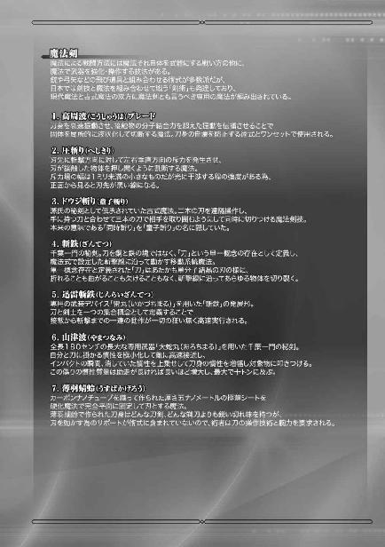
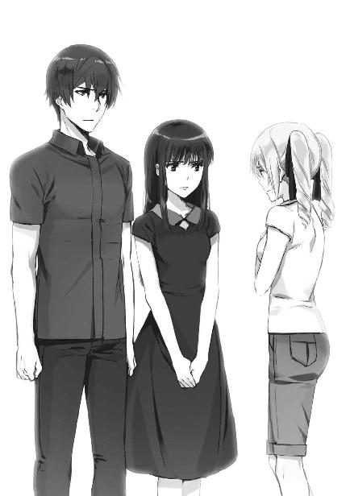

| 魔法科高校の劣等生(25) エスケープ編〈下〉 (電撃文庫) | |
| 佐島 勤 | |
| KADOKAWA / アスキー・メディアワークス (2018) | |

本書（電子版）に掲載されているコンテンツ（ソフトウェア／プログラム／データ／情報を含む）の著作権およびその他の権利は、すべて株式会社ＫＡＤＯＫＡＷＡおよび正当な権利を有する第三者に帰属しています。
法律の定めがある場合または権利者の明示的な承諾がある場合を除き、これらのコンテンツを複製・転載、改変・編集、翻案・翻訳、放送・出版、公衆送信（送信可能化を含む）・再配信、販売・頒布、貸与等に使用することはできません。

二〇九七年六月九日、日曜日早朝。
正確な時刻は、午前五時六分。
伊豆半島中央やや東寄りの高原地帯が、大規模魔法による爆破攻撃を受けた。
新ソビエト連邦の国家公認戦略級魔法師、イーゴリ・アンドレイビッチ・ベゾブラゾフの戦略級魔法『トゥマーン・ボンバ』によるものと推定される魔法攻撃は、民間の別荘二十七戸を全半壊させ、幸い死者は出なかったものの十一人の重軽傷者を出した。
爆発の規模に対して相対的に被害が少なかったのは、家屋が疎らな地域であるのに加えて、オフシーズンで利用客が少なかったからだ。負傷者は全員、別荘の管理業務に従事する者だった。
とはいえ、国土が不当な攻撃に曝され、国民の身体と財産が脅かされたのは、紛れもない事実だ。
日本政府は同日、国際社会に向けて、正体を確定できない攻撃者に対して厳重な抗議の意思を表明し、相手国を指定しないまま犯人の引き渡しを要求した。
なお、その攻撃の模様は完全な奇襲、しかも夜明け直後の時間帯だったにも拘わらず、国防陸軍により地上から近距離で撮影されていた。
不当な先制攻撃の確たる証拠であるその映像は同時に、日本軍が奇襲を事前に察知していながら外交上の交渉材料とする為、国民を見殺しにしたのではないかという疑惑を招くものでもあった。
国防軍のスポークスマンに対して、当該疑惑を正面から質問した気骨のある記者もいたが、国防軍は当然の如くこの「言い掛かり」を事実無根と一蹴した。
［１］
ダイニングの床に倒れた水波を見て、悲鳴を上げ立ち竦んだ深雪だったが、パニックに支配されていたのは極短い時間のことだった。
未だパニックには囚われている。だが、身体の硬直は解けていた。
「水波ちゃん！」
倒れている水波のすぐ側に駆け寄り両膝を突く。既に水波の横にはピクシーがいて、手首に指を当て脈を取っている。深雪はその向かい側に座り込んで、水波の鼻の前に手をかざした。
わずかに狼狽の色が薄れたのは、水波の呼吸が確認できたからだろう。だが、かざしていた手で首に触れて、深雪は顔色を失った。
「冷たい......。脈も弱い......、お兄様！」
深雪が達也を見上げて、眼差しですがる。
自分では看取ることができなかった穂波の最期を、深雪は水波の姿に重ねていた。
「ピクシー、水波の容態は！」
達也も焦りを隠せない。ピクシーに問い掛ける声は、不必要に荒れている。
『外傷はありませんが、体温、血圧、脈拍数、全てが危険な水準です、マスター。このままでは衰弱死の可能性があります』
達也の焦燥を感じたからだろう。ピクシーは機械の音声ではなく、能動テレパシーで答えた。許可無くテレパシーを使うことを達也はピクシーに禁じていたが、今、彼はそれを咎めなかった。
そんなことを問題にしている場合ではなかった。
達也は左手を水波に向けた。
そこにＣＡＤは握られていない。
右手には迎撃に使った『雲散霧消』用の大型拳銃形態ＣＡＤ『トライデント』を握ったままだったが、左手に『再成』用のＣＡＤを摑み上げる時間的な余裕は無かったし、『再成』用のストレージを取りに行く心理的な余裕も無かった。
達也は自分だけの力で、『再成』を発動した。
エイドス復元魔法『再成』は、エイドスの変更履歴を遡及し、任意の状態──多くの場合、劣化や損傷が無い状態──のエイドスをコピーして現在のエイドスを上書きする魔法だ。
事象には情報が伴う。情報を書き換えられた事象は、その情報に従って変化する。
情報を書き換えて、事象を改変する。これが現代の「魔法」だ。
事象の情報『エイドス』には修復力があって、書き換えられた偽りのエイドスは時間経過と共に本来のエイドスに書き直されていく。だから魔法による改変は、永続しない。
しかし「過去のエイドス」は、確かにその事象そのものを記述した情報体。情報に矛盾が無ければ、エイドスの修復は行われない。ただ、時間経過による内在的変化が調整されるに留まる。
エイドスを自分自身の過去の情報に書き換えられた物体は、その時点から外的な作用を受けずに時間だけが経過した状態で現在に定着する。その事象が固有に持つ時間を遡り、過去の一時点からその事象に限定して世界が上書き更改される。
達也の『再成』は、通常の魔法のように因果の「果」を変更するのではなく、「因」を変更することにより「果」を変えるものなのだ。
その固有時間遡行、世界限定更改の魔法が水波に向けられた。
──水波の肉体の情報を読み取り、その変更履歴を遡る。
衰弱の原因は見つからない。
──水波の肉体に付随する想子情報体そのものを読み取り、その変更履歴を遡る。
衰弱の原因は、まだ見つけられない。
達也は更に深く、桜井水波という少女の情報にアクセスする。
──水波の肉体と精神をつなぐ想子情報体の構造を読み取り、その変更履歴を遡る。
以前の達也には、難しかったことだ。
五年前の夏、穂波の時にはできなかったことだ。
あの夏よりも成長を遂げた、半年前にも、一ヶ月前にも、おそらく不可能だった。
想子情報体である以上、アクセス自体は可能だった。
だが概ねの情報を読み出すことはできても、構造情報を完全に読み取ることは困難だった。
しかし今の達也には、それが可能だ。
誓約の完全解除により、達也は真の力を取り戻した。それは、マテリアル・バーストを自由に使えるようになったという変化に留まらない。
エイドス復元魔法『再成』の対応領域も広がった。これまで彼の力が及ばなかった、精神に直結する想子情報体『幽体』の構造情報を遡及し、複写できるようになった。
しかしそれでも、水波が衰弱している根本的な原因は見つからなかった。
幽体の構造に所々綻びが見られる。
情報が局所的に欠落している所為で、何ヶ所も穴が空いた状態になっている。
だがそれは衰弱の原因ではなく結果、想子情報体の修復力が衰えた為に生じた虫食いだ。
これを修復しても、元々の修復力が回復しなければ根本的な治療にはならない。
しかし、精神に付随する情報体の破損を放置すれば、肉体に付随する情報体の破損が繰り返して発生し、肉体をますます損なっていくことになる。
幽体は、精神の命令を肉体に伝える。
破損した幽体は、破損しているという情報を肉体に伝えてしまう。
肉体は精神から、壊れることを命じられていると誤解してしまう。
その結果肉体は、物質的には壊れていないにも拘わらず、壊れてしまった状態と同程度の性能しか発揮できなくなってしまうのだ。
応急処置にしかならないが、一時凌ぎだからといって処置をしなければ決定的な悪化につながる。故に。
達也は再成により、水波の想子情報体を復元した。
肉体に付随する想子情報体と、肉体と精神をつなぐ想子情報体の構造を、攻撃を受ける前の構造情報で書き換える。
上書きされた過去の情報が、時間経過を加味した調整が自動的に行われた後、現在に定着する。
『体温、摂氏三十五度を回復。血圧、心拍数共に危険域を脱しました』
ピクシーがテレパシーで症状の改善を伝えてきた。
だが水波の意識が回復する兆しは無い。
「ピクシー、布団をここに持ってきて水波を寝かせろ」
『かしこまりました、ご主人さま』
「深雪は水波の周りを、水波の現在の体温と同じ温度に暖めてくれ」
「かしこまりました！」
ピクシーにコントロールされたホームオートメーションロボットが動き出し、深雪の魔法が床と空気に干渉する。
達也はそれらの結果を確認せずに、電話機の前に走った。
一一九番ではない。ダイヤルした先は、四葉本家だ。
『達也様、如何なさいましたか？』
早朝であるにも拘わらず、葉山は一筋の乱れもない服装で画面に出た。
一方の達也は、まだパジャマ姿だ。
だが達也にはそれを気に掛けている余裕が無かったし、葉山も咎めようとはしなかった。
「このような格好で失礼します」
それでも一応、そう前置きして、本題に入る。
「別荘が遠距離魔法による攻撃を受けました。使われた魔法は、トゥマーン・ボンバと思われます」
葉山の眉がピクリと跳ね上がった。
彼の驚きを示すものは、それだけだった。
『被害はございましたか？』
慌てていない、かつ適度に緊張感を伝える声で葉山が訊ねる。
「自分と深雪には、かすり傷一つありません。ただ水波が魔法演算領域のオーバーヒートと推定される症状で倒れました。応急処置は済ませましたが、専門的な治療が必要です」
「魔法演算領域のオーバーヒート」というフレーズを聞いて、葉山の顔色がわずかに変わった。葉山が動揺を垣間見せたのは極短い時間だったが、先々代当主・四葉元造の死因と推定される「魔法演算領域のオーバーヒート」はやはり、四葉家の重臣にとって無視できないものであるようだ。
『......承知しました。こちらで入院の手配をいたします。兵庫を迎えに遣わしますのでしばしお待ち願います』
「よろしくお願いします」
目的を果たして、達也は電話を切った。
◇ ◇ ◇
達也が滞在している別荘の周りには、半径およそ一キロメートルに渡って結界が張られている。四葉分家、津久葉家による精神干渉魔法フィールドだ。
魔法師かそうでないかを問わず、精神干渉魔法に耐性が無い人間は無意識の内に避けてしまう人払いの陣。その心理防壁を越えて内部に侵入した者があれば、それを術者に伝える対人センサーの役目も兼ねている。
だが昨晩の深更からその結界内に、一台の特殊車両が駐まっていた。可変サスペンションを備えた迷彩柄の装甲車。一目見ただけで分かる国防陸軍の軍用車両だが、津久葉家の術者はその存在に気付いていない。そればかりか、ここまで公道を走ってきたはずなのにそれをＳＮＳ等で話題にした市民は皆無だった。
可変サスペンションを限界まで下げて、ほとんど接地した状態でトゥマーン・ボンバの爆風に耐えた装甲車の車内には四人の軍人が乗っている。
「......想子センサーに新たな反応はありません。遠距離魔法による攻撃は終了したものと思われます」
その内の一人が助手席に座る指揮官に向かってそう報告した。
「そうか」
助手席の指揮官、国防陸軍第一〇一旅団独立魔装大隊の隊長である風間中佐は、大隊の中から選抜した部下に振り返らず応えを返す。
風間は別に、横着をしているのではない。隊長という立場と階級を考えればおかしな態度ではないが、彼が振り返りもしなかったのは取り込み中だからだ。
風間は瞼を半ば閉じ、両手で印を結び背筋を伸ばした姿勢で、もう何時間も身動ぎ一つしていない。装甲車を駐めてからではなく、走行中もずっとだ。車体の揺動が風間にだけ伝わっていないかの如く、彼の上半身、鳩尾から上は地球の重力に対して垂直を保っていた。
装甲車が津久葉家の結界に引っ掛からなかったのは、風間の術によるものだった。
認識阻害魔法、天狗術『隠れ蓑』。
見えているのに見ない。
聞こえているのに聞かない。
光や音波を遮断あるいは攪乱するのではなく、意識に干渉し「そこにいない」と思い込ませる魔法。
津久葉家の侵入者を感知する結界に対して、結界に触れたことを術者に認識させない魔法で対抗しているのだ。
装甲車の存在を覚られていないのは、風間の天狗術が津久葉家の結界を上回っているからに他ならない。
風間が身動きもできず念を凝らしているのは、津久葉家の結界に対抗する為には他のことをしている余裕が無いからだ。『大天狗』の異名を取る風間の実力を以てしても、四葉の術者に対抗するのは容易ではないということだった。
「撤収する」
「了解しました。観測終了、撤収準備」
風間の短い命令を受けて、運転席の士官が後ろを振り返り指示を伝える。
各隊員が自分の担当する観測機器からデータを記録したメディアを取り出し、保護ケースに格納する。機器をサスペンド状態にした二人の下士官から「撤収準備完了」の声が次々に届いた。
「車体を上げます」
運転席に座る士官の声と同時に、サスペンションが装甲車を持ち上げる。地面すれすれまで床を下げて駐車していた装甲車が、オフロード走行モードに切り替わった。
「発進準備完了」
装甲車を動かす許可を求めた士官に、
「むっ？ 待て」
風間はスタートの許可を出さなかった。
印を結んだまま、半ばまで閉じていた目を開く。
装甲車の外部マイクが接近するモーター音を捉えたのは、その直後のことだった。
◇ ◇ ◇
達也が滞在している別荘の周りには、人を寄せ付けない為の結界が張られている。それをコントロールしている小屋には、四葉分家・津久葉家の術者が交代で詰めていた。この日、津久葉家次期当主の夕歌がその小屋に滞在していたのは、単なるローテーションの結果だった。
とはいえ、徹夜の番を跡取り娘にやらせる程、津久葉家はこの任務に緊急性を認めていなかった。強烈な魔法の波動に覚醒を強制された夕歌は、パジャマにガウンを纏った寝起きの姿で儀式室に飛び込んだ。
「被害状況を報告しなさい！」
次期当主のラフすぎる姿に若い男性の術者は顔を引きつらせた。夕歌の格好に露出度はゼロだったので、多分「百年の恋も──」の類の動揺だろう。
「地上部分は全壊に近いと思われます」
だが問われたことには、しっかりと答えを返した。
なお彼らが落ち着いて会話できているのは、寝室も儀式室も地下に造られているからだ。この監視小屋は──別荘の監視ではなく、別荘に近づく者を監視する為の小屋だ──地下が本体で、地上部分はカモフラージュ用だった。
「原因は？」
夕歌は魔法の波動に叩き起こされた。何が起こったのか訊かなくても見当は付いていたが、万に一つ、自分が寝惚けていた可能性を考慮して夕歌はそう訊ねた。
「極めて強力な遠距離魔法による攻撃です。上空で爆発を起こし、衝撃波を集束したものと推測されます」
「衝撃波を集束？ 魔法で？」
「いえ、爆発自体をそのような結果になるようコントロールした模様です」
「ふーん......」
正直なところ、夕歌にはそのメカニズムが良く理解できなかった。
だがそれだけの威力とコントロールを両立させる魔法の正体であれば心当たりがある。
「トゥマーン・ボンバかしら？」
「おそらくは」
部下の術者も、同じ意見だった。
「達也さんと深雪さんは？」
「別荘に被害はありません。ご無事かと思われます」
それを聞いて、夕歌が訝しげに眉を顰める。
達也と深雪に被害が無いという推測に違和感があったのではない。別荘に被害が無いという報告に引っ掛かりを覚えたのだ。
「......衝撃波の焦点は達也さんの別荘だったんでしょう？」
「強力な魔法シールドが衝撃波を受け止めた模様です」
「......千穂さん、どう思います？」
夕歌は自分に新しく付けられたガーディアンの女性魔法師に訊ねた。
「水波さんが務めを果たしたのでしょう」
夕歌の新たなガーディアン、桜崎千穂は迷う素振りも無く明確な答えを返した。
彼女もまた、調整体「桜」シリーズの一人だ。桜井穂波、桜井水波とは異なる受精卵をルーツにした、いわば別の血統の第二世代。年齢は水波より八歳上で、魔法師にしては地味目な、一見「平凡な会社員」の外見を持っている。
千穂の得意魔法も「桜」シリーズの調整方針に従ったもの。対物・耐熱防御シールドだ。固体と熱を防ぐのが最も得意だが、物理的な物体、エネルギーであれば汎用的に防御する。
衝撃波を散乱させたのであれば達也の分解魔法、減衰させたのであれば深雪の振動減速系魔法によるものと考えられるが、魔法シールドで受け止めたのならば自分と同じ魔法を得意とする水波がやったことだ。──千穂がそう推理するのは当然で、論理的だった。
「貴女にも可能かしら？」
夕歌の質問は無遠慮なものだったが、千穂が気にした様子は無い。
「おそらく可能です。ただ......」
「ただ、何？」
千穂が口ごもったのは、ほんのわずかな時間だけだった。
「ただ、その後も務めを果たせる自信はありません。あの威力を受け止めたなら、魔法演算領域のオーバーヒートで倒れてしまうでしょう」
夕歌の顔色が変わる。彼女は四葉一族の中でも過負荷による魔法演算領域の損傷に関しては特に詳しい、いわば専門家であり一種の医師だ。たとえ相手が他人の護衛役であっても、魔法演算領域に深刻なダメージを負っている可能性を示唆されれば、見過ごすことはできない。
「五分で支度するわ。付き合って」
「お手伝いしましょうか？」
千穂は夕歌の状態を見て、五分で身支度を終えるのは難しいと判断したのだが、
「結構よ」
夕歌は余計なお世話とばかり断って、寝室へ戻っていった。
主と違ってパンツスーツをきっちり着込んでいた千穂は、すぐに出られるようガレージへ向かった。
地上のガレージは爆風で全壊していたが、敢えて簡素な造りにしてあったのが逆に功を奏して車が埋まってしまうという事態にはならなかった。
外見は市販のＳＵＶ、実態は装甲車並みの防御力を備えたオフロード車に乗り込んで、夕歌は今更思い出したように結界の状態を確認した。
「えっ!?」
「如何されましたか？」
思わず声を上げた夕歌に、モーターの始動スイッチを押してドライブレバーを前に倒そうとしていた千穂が、その動きを止めて理由を訊ねる。
「侵入者......？」
「結界に引っ掛からなかったのですか？」
千穂の冷静な口調に、夕歌は動揺から抜け出した。
「そうね、恐るべき手練れだわ。水波さんも心配だけど、こちらを優先します」
夕歌の判断に、千穂は異を唱えなかった。
「総員に緊急出動を掛けます」
その代わり、ここにいる全員で当たるべきだと間接的に意見する。
「ええ、お願い。私たちは先に行くわよ」
夕歌は千穂の意図を理解していたが、そのアドバイスには従わなかった。
「了解しました」
千穂は、夕歌の命令に逆らわなかった。
夕歌が指し示す方へ、オフロードを発進させる。結界内に侵入したのが何者であれ、味方が駆けつけるまでの間くらい自分の障壁魔法で持ちこたえられるという自負が千穂にはあるということだろう。
侵入者は別荘を中心にして時計回りに九十度の位置にいた。
「陸軍の装甲車ですね」
迷彩柄の鋭角なフォルムを見て、千穂がそう断定する。夕歌は千穂程、車の種類に詳しくなかったが、そんな彼女にも軍の特殊車両であることは一目瞭然だった。
「話をします。あれの前に付けて」
夕歌の指示に従い、千穂は装甲車の進路を塞ぐポジションにオフロードを停めた。
「増援が来るまで待った方が良いと思います」
「......そうね」
今度は千穂の助言を受け容れて、夕歌は車内に留まった。
◇ ◇ ◇
比較的小型のＳＵＶが装甲車の鼻先に停まったのを見て、運転席の士官が指示を求めるように風間へ目を向けた。
風間が印を解き、ドアの開閉スイッチに手を掛ける。
「隊長？」
「全員、車内に待機。こちらに敵対の意思があると相手に誤解を与える行為は禁じる」
部下に釘を刺し、風間は装甲車を降りた。
その位置でＳＵＶに顔を向ける。分かり易い動作を心掛けたので、相手にも見られていることが分かったはずだ。
風間は自分からそれ以上の行動を起こさず車内からの反応を待ったが、リアクションは中々得られなかった。
その理由に、風間はすぐ気付いた。
今いる場所は、比較的開けている。達也がいる別荘に対する攻撃を記録するという目的からそういう地形を選んだのだが、それでも木立で所々視線が遮られている。
その死角に、人が集まっている。
総勢十一人。風間の感覚では、全員、かなりレベルが高い魔法師だ。
ＳＵＶの運転席と助手席のドアが同時に開いた。増援はこれで全てということだろう。風間はそう判断した。
「津久葉夕歌と申します。四葉家を本家と仰ぐ、津久葉家の長女です」
助手席から降りてきた若い女性が、良く通る声で呼び掛けてくる。彼我の距離は五メートルを超えているが、風が吹いている屋外でも聞き取りに不自由は無い。
「国防陸軍第一〇一旅団、独立魔装大隊の風間中佐とお見受けします」
自分の素性を言い当てられたことに、風間は驚かなかった。彼女が名乗ったとおりの素性なら、自分のことを知っていても不思議ではない。
「如何にも。自分は、国防陸軍中佐の風間です」
風間は装甲車の側から動かず、応えを返した。手の届く範囲に近づくことを、相手が望まないと考えたからだ。
だが彼の予測に反して、夕歌の方から風間に歩み寄ってきた。
風間もすぐ、それに応じる。
相手に友好姿勢を見せるという意味は無論あったが、それだけではない。二十代前半の若い女性を、部下の乗る装甲車の傍まで歩いて来させるというのは、自分が臆病風に吹かれているように見えるのではないかと懸念したからでもある。
運転席から降りてきた女性が、夕歌のすぐ後ろに付き従っている。彼女の護衛なのだろう。前に立たないのは防御魔法に自信があるからか、と風間は推測した。
（「ガーディアン」か。手練れだな）
四葉家の「ガーディアン」について、風間は達也からある程度のことを聞いている。護衛と思われる後ろの女性が「ガーディアン」であることは、身に纏う雰囲気で察せられた。
「風間中佐。ご存じないかもしれませんが、ここは四葉家の私有地です」
風間がガーディアンの女性──千穂に意識を移していたわずかな時間に、夕歌は普通に会話をする距離まで近づいていた。
「厳密に言えば四葉家が支配する不動産会社の持ち物なのですけど、今はどうでもいいことでしょう。国防軍は私有地で何をされていたのですか？ そんな物まで持ってきて」
装甲車に目を向けながら夕歌が問う。
予想どおりの詰問に、風間はどう答えるべきか悩んだ。見つかることを想定していなかったので、言い訳を用意していなかったのだ。
風間にとって不運だったのは、昨日と今日が夕歌のローテーション日だったことだ。他の術者であれば、彼の『隠れ蓑』が見破られることはなかった。
だが事実として、彼らの侵入は夕歌に見つかってしまった。風間に自惚れていたつもりはないが、やはり何処かで甘く見ていたのだろう。彼は自戒の念を頭の片隅に刻んだ。
「申し訳ありませんが、軍機につきお答えできません」
結局風間は上手い言い訳を捻り出せず、民間人に対するジョーカーを切る羽目になった。
「軍機というのは、外国による民間人を標的とした攻撃を事前に察知していたことですか？」
だが夕歌は「軍機」で恐れ入るような、殊勝な性格ではなかった。
「そちらの装甲車......情報収集の為の装備ですよね？」
そう言って夕歌は、背後の千穂を振り返った。
「はい。偵察用の仕様になっていると見受けられます」
応じる千穂のセリフは断定形にこそなっていなかったが、口調はそれに等しかった。
「誤解しないでいただきたい。我々に四葉家と敵対する意思はありません」
風間は表面上は欠片も動揺を見せず、「民間人」を「四葉家」と言い換えて夕歌の言葉に応えた。
「四葉家は民間人ではないと？」
夕歌は風間がほのめかした部分をすかさず追求する。
しかしこの返しは、風間の注文に乗るものでもあった。
「形式はともかく実質的には、完全な非戦闘員ではないでしょう」
「......公僕は形式こそが重要なのではありませんか？」
言い返しはしたものの、わずかに生じたタイムラグ。夕歌が風間の論法を否定できなかった証拠だ。
「形式で納得していただけるのですか？」
風間が控えめな笑顔で問い掛ける。夕歌は答えに詰まってしまった。
「そんなことより、トゥマーン・ボンバによる攻撃を、軍が予期していたかどうかを知りたいのですが」
この反問は、夕歌によるものではない。
木立の陰から投げ掛けられた声に、風間が慌てて振り向く。彼の顔には、隠し切れない動揺が浮かんでいた。
「達也......」
「達也さん......」
風間と夕歌が、同時にその名を呟いた。
◇ ◇ ◇
「お兄様、何か？」
水波の枕元に付き添っている深雪が、達也の緊張を鋭敏に感じ取って顔を上げた。
今のところ水波の容態は落ち着いている。まだ意識が戻らないので予断を許さないが、達也の『再成』により一刻を争うという状態ではなくなっていた。
彼は水波を病院へ送り届けるヘリを出迎える為に、パジャマを普段着に着替えてきたところだ。水波を寝かせているダイニングに戻った時には、焦りは滲ませていても特に緊張している様子はなかった。
それがいきなり、敵を警戒する緊張感を身に纏う。
達也が何を感じたのか、深雪には分からなかった。
「風間中佐が来ている」
「風間中佐がですか!? 全く分かりませんでした......」
「俺にも分からなかった」
恥じるように俯いた深雪に、達也は自分も同じだと慰めの言葉を掛ける。
「夕歌さんの魔法で炙り出されたようだ」
「夕歌さんもいらっしゃっているのですか？」
達也が気付かなかったということに深雪は納得できなかった様子だが、それよりもこちらの方が気になったようだ。
「津久葉家の術者が人を寄せ付けない魔法を使ってくれている。叔母上の下知だろう」
「叔母様が......」
まるで達也のことを気遣っているような真夜の差配をどう解釈すれば良いのか分からず、深雪は戸惑いを通り越して途方に暮れた顔をしている。
「俺は中佐に会ってくる。深雪、水波のことを頼んだ」
しかし真夜の真意を、今ここであれこれ推測しても意味は無い。臆測にしかならないというだけでなく、真相にたどり着いても使い途が無い。深雪が無意味な迷路に足を踏み入れる前に、今やるべきことを思い出させて彼女の意識を引き戻し、達也は自分で言ったとおり、風間に会うべく別荘の外へ向かった。
達也が目的の場所にたどり着いた時、風間と夕歌は問答の最中だった。
彼の到来に気づいた津久葉の術者を手振りで黙らせ、達也は風景に同化して風間と夕歌の口論に耳を傾けた。
夕歌の相手をしていなければ、風間は達也の存在に気が付いただろう。
風間の相手をしていなければ、夕歌は達也の存在に気が付いただろう。
互いに相手のことを「油断ができない精神干渉系魔法の使い手」と意識している所為で、他への注意が疎かになっているのだ。夕歌はともかく、『大天狗』の異名を取る風間にしてはお粗末な次第にも思われる。達也は知らないことだが、津久葉家の結界を一人で欺き続けた疲労が蓄積しているという面は間違いなくあった。
『軍機というのは、外国による民間人を標的とした攻撃を事前に察知していたことですか？』
夕歌によるこの指摘が、達也の心に波紋を呼んだ。
風間が乗ってきたに違いない装甲車は、戦闘よりも情報収集を目的とした装備になっている。しかも積んでいるのは、かなり高額な機器だ。ストレートに考えれば、今日ここで貴重なデータが観測できると期待して出動していると推測される。
夕歌の言うとおり、国防軍はトゥマーン・ボンバによる奇襲を事前に察知していた......？
それは達也にとって、見過ごしにできない疑惑だった。
『形式で納得していただけるのですか？』
したり顔で繰り出された風間の揚げ足取りに、夕歌が反論の言葉を失う。
元々時間に余裕があるわけではない。これ以上の傍観は不要だと達也は判断した。
「そんなことより、トゥマーン・ボンバによる攻撃を、軍が予期していたかどうかを知りたいのですが」
隠形を解き、木立の陰から姿を見せた達也を、
「達也......」
「達也さん......」
風間と夕歌が驚きの表情で迎えた。
「風間中佐、お答えください」
達也は風間に敬礼しなかった。普通の挨拶も省略した。
友好的な挨拶の交換で自らの舌鋒が鈍るのを達也は嫌った。
「......津久葉さんにも申し上げたが、答えられない」
「つまり、肯定ということですか？」
「ノーコメントだ」
達也は風間に視線を固定したまま、軽くため息を吐いた。
「風間中佐。自分は中佐に義理と恩義を感じています。ですから、こういうことは言いたくないのですが」
「............」
「あらかじめ警告をいただいていれば、新ソ連にみすみす奇襲を許しはしませんでした」
「......遠距離魔法による奇襲が新ソ連によるものというのは確かなのか？」
風間がそこに関心を寄せるのは当然だ。
しかし達也が問題にしているのは、別のポイントだった。
「根拠を答えれば、自分の疑問も解消していただけますか」
風間は先程の攻撃が新ソ連の戦略級魔法師、十三使徒ベゾブラゾフのトゥマーン・ボンバによるものだと考えているが、確信には至っていない。
達也は風間が遠距離魔法を使った奇襲が行われることを知っていたと確信している。
「......良いだろう」
新ソ連による奇襲攻撃が行われたという根拠。言質を取られないことに拘っていても益は無いと、風間が考え直すには十分なネタだった。
「奇襲攻撃に使われた魔法はウラジオストク近郊の線路上から放たれました」
「線路上？」
「トゥマーン・ボンバと推定される魔法を放った術者に付随する情報を読み取った結果です」
「ベゾブラゾフを捕捉したの!?」
思わず夕歌が口を挿む。
「術者は倒しましたが、あれはベゾブラゾフではないでしょうね。二人とも女性でしたから」
「女性!?」
夕歌が驚きの声を上げる。
「二人......。未公開の戦略級魔法師か」
風間はさすがに、すぐ真相にたどり着いた。
「ベゾブラゾフが全く関与していないとは思いませんが、自分に見えた術者はその二人です。彼女たちは間違いなく、新ソ連の極東領土にいました」
「線路上ということは、新シベリア鉄道の軍用車両か」
国防軍にとって、これは大きな意味を持つ情報だ。
トゥマーン・ボンバの発動には、一車両をまるごと占める大型ＣＡＤを使うらしいというのは、以前から言われていたことだ。だがその説には裏付けが無かった。
それに宗谷海峡でトゥマーン・ボンバらしき魔法が使われた時には、そのような列車の移動は観測されなかった。その所為で国防軍は、専用列車を使うという情報が誤りだったのか、それともあの時の魔法がトゥマーン・ボンバではない別の術式だったのか、頭を悩ませることになった。
しかし達也の証言により、トゥマーン・ボンバを使用する為の専用車両があるという点については事実であると判明したのだ。
達也は「トゥマーン・ボンバと推定される魔法」と表現したが、威力から言っても射程距離から言っても今の魔法がトゥマーン・ボンバであることは確実だ。そうでないなら、新ソ連はトゥマーン・ボンバとは別の、超長距離射程・高威力の魔法を持っていることになる。
それがトゥマーン・ボンバであるにせよ違うにせよ、日本にとって脅威となる魔法が専用列車を使って放たれることが分かった。軍が持っている観測の為のリソースは有限だ。優先的な監視対象が明らかになれば、そのリソースを有効に配分できる。
しかし風間は、満足感に浸ってばかりはいられなかった。
「中佐、今度は貴方の番だ」
達也は独立魔装大隊の一員として、風間の部下として報告を上げたのではない。これは取引だった。
「国防軍は、今朝この場所に奇襲攻撃が行われることを知っていた。そうですね？」
「分かっていたわけではない。それに、日時までは予測できなかった」
「つまりここが奇襲を受けると予測はできた。それは何故ですか？」
風間は即答できなかった。これは軍の情報収集能力に関する質問になる。達也は半分国防軍の身内とはいえ、いや、身内だからこそ、彼にそれを知る権限があるのかどうか、風間は咄嗟に迷ってしまった。
「国防軍は──いえ、佐伯閣下は、ベゾブラゾフの動向に関する情報を入手した。そこから、自分を標的とした奇襲攻撃を予測したのではありませんか？」
達也は風間の回答を待たずに、事実を寸分違わず言い当てた。
風間は何も答えない。彼が答えられなくなっているのを見て、達也は自分の推測が正しかったと知った。
もし奇襲について警告を受けていたなら、水波が倒れるような事態にはならなかった。そもそも深雪と水波を別荘に来させなかった。達也一人なら、先程の攻撃をまともに喰らっていたとしてもダメージは残らなかったのだ。
「負傷者がいますので、自分は別荘に戻ります」
達也はその恨み言を、吞み込んだ。風間に当たっても、何の意味も無いからだ。
「それでは中佐。夕歌さんも、失礼します」
「待って、達也さん。負傷者というのは......、水波さん？」
呼び止める夕歌の言葉に、背を向けていた達也が振り返る。
「そうです。夕歌さんには水波がどのような状態か、お分かりのようですね」
水波に負傷と言うべき外傷は無い。だが魔法演算領域──精神の無意識領域に傷を負っている。その意味で達也は「負傷者」と表現し、夕歌はそれを理解した。
「すぐ病院に運ばないと！ 家の者に手伝わせましょうか？」
夕歌が慌てて搬送の手伝いを申し出る。予測していたにも拘わらず、彼女は動揺を抑えられなかった。
「既に本家がヘリを手配してくれました。そろそろ到着する頃ですので......」
だから戻らなければならない、と達也がほのめかす。
「そ、そう？ その......お大事に」
「ありがとうございます」
夕歌に軽く頭を下げて、達也は今度こそ二人に背を向け歩き出した。
その後ろ姿を心配そうに夕歌が見送る。
風間の口からは最後まで、「負傷者」を案じる言葉は出てこなかった。
［２］
水波が収容された病院は、調布のマンションのすぐ近くにあった。
もちろん、偶然ではない。深雪が転居した調布のビルは四葉家の東京本部として建てられた物。傷病者対策は最初から考慮されていた。
達也は深雪と共に、新しい自宅であるマンションへ戻っている。深雪は水波に付き添っていたいと希望したのだが、担当の医師からやんわりと断られたのだ。彼女が無意識に放出している魔法力が治療の妨げになる、と言われては、深雪も強情を張れなかった。
「水波ちゃん、大丈夫でしょうか......」
達也の隣に全く距離を置かず腰掛けた深雪が、不安を隠せない声で呟く。
おそらく、隠す気も無かったに違いない。
「命に関わることはない、と思う」
達也から期待したものに近い言葉が得られて、深雪の顔から少しだけ不安の色が薄れた。
「......そうですよね。お兄様が『再成』を使われたのですもの。万が一のことなどあり得ません」
達也が迷いを湛えた瞳で深雪を見詰めた。不安を煽るような真似はしたくなかったが、深雪を相手に気休めで誤魔化すのも不誠実な気がしていたのだ。
「......俺が行ったのはあくまでも応急処置でしかない。完治はさせられなかった」
まず事実を述べて、深雪が不安を膨らませる前にすかさず補足の説明を加える。
「だが肉体の衰弱が致命的なレベルにまで進行することは避けられたはずだ。それに水波は第二世代。第一世代の穂波さんより、自分の魔法に対する抵抗力は強いはずだ」
「そうですよね！」
深雪が俯かせていた顔を上げる。伏せられていた目が、寄る辺を求めて達也の眼差しを捉える。
「世代を重ねることで、魔法が遺伝子に定着する......。この傾向は、わたしたち調整体にも当てはまることですよね？」
深雪が自分を「調整体」と呼んだことに、達也は抵抗を覚えた。
「普通の調整体は、第一世代よりも第二世代の方が安定している。少数の例外はあるものの、こうした傾向があるのは間違いない」
一般的に調整体は、生物として安定を欠いている。ある日突然、急激に衰弱して死んでいくこともあれば、何の前兆もなく突然死するケースも、少なくない事例が記録されている。
その原因について、まだ定説は無い。だが幾つか仮説は考え出されている。その中で最も有力だと達也が考えているのは、「調整体の魔法は精神のリミッターが外れた状態で行使されている」という仮説、「リミッター不全説」だ。
この説によると、本来人間の精神は、魔法の行使が可能なようにはできていない。魔法演算領域は魔法師に固有のものではなく、人間一般の精神に備わっている。だが魔法の行使は人間の精神に許容限度を超えた負荷を与える為、通常は無意識領域に備わるリミッターで百パーセント稼働が制限されている。つまり、完全に凍結されている。
しかし稀に、魔法に対して強い耐久力を持つ精神の持ち主がいて、そういう者のリミッターはわずかに解除されている。百パーセントのリミッターが九十九パーセントとか九十八パーセントの状態に設定されて生まれてくる。
たとえ一パーセントでも二パーセントでも、使用可能な容量がゼロパーセントとは本質的な違いが生じる。たとえ最初は一パーセントでも、とにかく使えないはずの魔法が使えるのだ。
筋肉と同じく、魔法演算領域も使用することにより出力が増す。そして骨や腱が筋力の増大を支えるべく強度を増していくのと同様に、精神も魔法という負荷に対する耐久力を増していくと「リミッター不全説」の論者は言う。肉体の場合と違って、まず耐久力が上昇し、それから魔法演算領域のリミッター解放と出力そのものの強化が並行的に起こると唱える。
このように通常の魔法師は魔法を使うことにより、魔法行使に対する生来の耐久力をますます向上させ、それによって更にリミッターの解放度を上げていく。ところが調整体魔法師は魔法を使える状態を人工的に作り出している所為で、このリミッターが機能していないと「リミッター不全説」は主張する。
精神の対魔法耐久力向上に従って解放されるはずの魔法演算領域が、最初から解放されている。精神は耐久力を超えた魔法の負荷に曝され続けることにより遂には破損し、それが肉体の生命活動に波及する。調整体の不安定な生命力を、このように説明する。
ところで精神の対魔法耐久力は、獲得形質として遺伝するという。肉体の獲得形質の遺伝を主張するネオ・ラマルキズムは進化論の主流となれなかったが、魔法への適応という精神の分野では、獲得形質の遺伝が「魔法が遺伝子に馴染む」という、観測される現象を最も良く説明できるとされている。
この精神的ラマルキズムとでも呼ぶべき考え方が事実であるとするなら、「第二世代」は「第一世代」が自滅への道を歩みながら手に入れた対魔法耐久力を生まれながらにして持っている。「第三世代」は「第二世代」が高めた耐久力を更に受け継いでいることになる。
全ては仮説でしかない。それが正しいという保証は無い。
だが「第二世代」の水波には「第一世代」の穂波よりも、魔法の過剰行使に耐える力が備わっている。そう考えることで深雪は多少なりとも、気持ちが楽になった。
深雪の顔から悲壮感と罪悪感が薄れた。彼女は、水波は自分の為に我が身を犠牲にしたと、少なからぬ罪の意識を懐いていたのだ。
それを見て、達也が深雪に微笑みかける。心の中に懸念を秘めて。
深雪が調整体というのは、達也にとって不愉快な事実だ。できれば信じたくないが、否定する根拠が無い。調整体に忌避感や差別意識を懐いているのではなく、深雪が誰かの手で弄り回されたと考えるのは、たとえそれが誕生前のことであっても不快感を覚えてしまうのである。達也は意識していないが、一種の独占欲だと言える。
しかしそういう感情を抜きにして深雪が調整体であるという事実を受け容れたなら、深刻な懸念を無視できなくなる。
それは、第一世代が持つ生命力の安定性欠如を、真夜が言うように本当に克服できているのかどうかという不安。
真夜の言葉を前の仮説に当てはめるならば、深雪は調整体でありながらリミッターが正常に機能しているということだろう。あるいは、リミッターがそもそも必要ない程に生来の対魔法耐久力が高いのか。
達也にそれを確かめる術は無い。封印から完全に解放された今も、彼の力は精神の領域に届かない。
だから、信じるしかない。
もし真夜が達也に告げた言葉が偽りで、深雪が調整体の欠陥を持っていたとしたら。
そして深雪に、調整体の宿命である突然の死が襲い掛かったなら。
その先の未来を思い描くことが、達也にはできない。
その時、自分は生きていないだろう。
その時、自分だけで済ませる自信が、達也には無かった。
◇ ◇ ◇
奇襲攻撃について、日本政府が相手国不明のまま国際社会に抗議の意志を表明したのは、日本時間で午後二時のことだった。
だが日本の伊豆半島が遠距離魔法の攻撃を受けた事実は、ほぼリアルタイムでＵＳＮＡの知るところとなった。
ＵＳＮＡの偵察衛星は伊豆が攻撃を受けたのと同時刻、極東新ソ連領内に強力な魔法の反応を探知した。この二つを結びつけて考えない、お目出度すぎる、あるいは懐疑的すぎる人間は、ＵＳＮＡの政府にも軍にもいなかった。
そしてこの事実を、数時間遅れでリーナも知らされた。
ＵＳＮＡニューメキシコ州にあるスターズ本部は、まだ六月八日土曜日である。その夕方、訓練終了後のミーティングでリーナ以下スターズの幹部軍人は驚くべきニュースに触れた。
日本の一地方、しかも離島や海上ではなく首都のすぐ近くが、現地時間未明に新ソ連の戦略級魔法による攻撃に曝されたという報せだ。
「なおこの攻撃のターゲットになったのは、日本の新たに判明した戦略級魔法師、タツヤ・シバであったと考えられる」
ブリーフィングルームでこのニュースを伝えたのは、ウォーカー基地司令の、魔法師ではない男性副官だった。
「タツヤ・シバの状態は？」
こう質問したのは、リーナではなかった。彼女はまだショックの真っ直中で、筋道立った質問ができる状態にない。基地司令副官に達也の安否を訊ねたのはカノープスだった。
副官がウォーカー司令に顔を向ける。
ウォーカーが頷いたのを確認して彼は、
「詳細は不明ですが、健在である模様です」
と答えた。
魔法師たちの反応は様々だった。
リーナはホッとした様子を隠し切れていない。
カノープスは達也による報復を警戒しているのか、厳しく唇を引き結んでいる。
アークトゥルスが落胆をのぞかせているのは、暗殺任務が中止にならなかったからか。
同じ任務を受けているベガは、対照的に不敵な笑みを浮かべていた。
ここでウォーカー大佐が口を開く。
「我が国は本件に関して、基本的に不干渉のスタンスを取ると参謀本部より通達があった。諸君が対外的に発言する機会は無いと思われるが、心に留めておいてくれ」
全員から肯定の声が返る。この判断に納得できない者はリーナ一人ではなかったが、彼らは自分たちの立場を弁えていた。
「では、解散」
ウォーカーの言葉に、ＵＳＮＡの頂点に立つ十三人の魔法師が一斉に敬礼で応える。
リーナから順番に退出しようとした彼らの背中に、
「アークトゥルス大尉、君は残ってくれ」
一人だけを呼び止める声が掛けられた。
本来、スターズとしての作戦は総隊長であるリーナを通すルールになっているのだが、彼女の頭越しに指令が下される例外はそれ程珍しくない。
リーナ本人も、普段は余り気にしていなかった。
リーナと他の十一人の各部隊隊長ばかりでなく副官まで退室して、ブリーフィングルームにはウォーカーとアークトゥルスの二人だけが残った。
この部屋には強固な防諜システムが備わっている。当然現在も稼働中だ。
「大尉、遮音フィールドを張ってくれ」
その上でウォーカーは、アークトゥルスにこう命じた。
「ハッ」
アークトゥルスは訝しげな表情をのぞかせながら、命じられたとおり室内と室外の音を遮断する。
「遮音フィールド、展開完了」
魔法的な資質が無いウォーカーは、アークトゥルスの言葉が事実かどうか自分で確かめることはできない。それでも安心材料にはなるのか、「うむ」と頷いて本題に入った。
「大尉。例の実験の実施が決まった」
アークトゥルスの顔に緊張が走る。
「マイクロブラックホール実験でありますか？」
彼は、自分で音を遮断する魔法を行使している最中でありながら、思わず声を潜めていた。
「そうだ。場所は前回と同じ、ダラス国立加速器研究所。日時は来週、六月十五日十一時。貴官はスターズでも随一の、ルーナ・マジックの使い手だ。仮にパラサイトが出現しても対処は可能だと考えているが、必要ならば第十一隊も出動させるぞ？」
精神干渉系魔法のことを米軍ではルーナ・マジックと呼んでいる。アークトゥルスは強力な精神干渉系魔法の使い手だった。
だがアークトゥルスは、その種の魔法を用いた実戦の経験に乏しかった。
彼は北アメリカ大陸先住民の血を色濃く受け継いでいる。彼の祖母は、今やほとんど残っていない純血の、先住民のシャーマンだった。彼の精神干渉系魔法の素質は、この祖母から継承したものと見られている。
本来あってはならないことだが、彼はこの血の故に、精神攻撃の魔法を得意とする古式魔法師──「妖術師」あるいは「呪術師」と呼ばれる者たち──を相手にするミッションから除外されてきた。
「妖術師」は先住民系の古式魔法師、「呪術師」は黒人系の古式魔法師に多い。──いや、実態は先住民系の古式魔法師を「妖術師」、黒人系の古式魔法師を「呪術師」と、白人およびアジア系が呼んでいるというのが正しいのだが、アークトゥルスはそんな民族系古式魔法師に強いシンパシィを懐いているのではないかという人種的偏見に曝されてきたのである。
その点、第十一隊の恒星級魔法師は三人ともルーナ・マジックを得意としており、その様な人種的偏見も受けていない。精神干渉系魔法を得意とする古式魔法師を相手取る作戦にチームで出撃することが多く、精神を蝕む攻撃への対応も慣れている。
「いえ、小官だけで十分です」
実戦経験の不足は、アークトゥルスも自覚している。とはいえ、彼にも自負がある。それに、この件に関わる人間はスターズ内部であっても必要最小限にすべきだという考えもあった。
「そうか。分かった」
関与人数は少ない方が望ましいという点については、ウォーカーの判断も同じだ。これだけの会話で、実験の現場に投入するのはアークトゥルスの第三隊だけと決まった。
「研究所の外に第六隊を待機させておく。不審者を発見したら、すぐに知らせろ」
だがそれは、ミッションに投入するのが第三隊だけという意味ではなかった。
第六隊の恒星級隊員はリゲル、ベラトリックス、アルニラムと三人ともオリオン座の星のコードを与えられており、「オリオンチーム」とも呼ばれている。これは偶然ではなく、第六隊は追跡が得意な魔法師を集めた狩人のチームだった。
「分かりました。リゲル大尉には......」
「心配するな。実験のことは伏せておく」
ウォーカーの言葉に、アークトゥルスがホッとした表情を一瞬だけ見せた。
マイクロブラックホール実験は日本の工作員を燻り出すのが目的だ。確実に捕らえる為、他の隊の協力はあった方が良い。だが必要以上に危ない橋を渡っていると自分でも思っているアークトゥルスは、できれば他の隊の者に実験のことを知られたくなかったのである。
それは、ウォーカーも同じだった。二人とも、決して保身が動機ではなかったが、結果的に、共有すべき情報を隠匿してしまっていた。
◇ ◇ ◇
日本政府は伊豆高原の別荘地帯が魔法で攻撃を受けたことを公表し、攻撃相手を特定しないまま厳しく非難した。同時に、魔法による攻撃に対抗する為には魔法戦力を充実する以外にないと強調した。
魔法師排斥は人道上の問題というだけでなく、外国勢力による魔法攻撃に対する自衛力を低下させ、国民の生命を危険に曝すものであると、間接的に反魔法主義運動を批判した。
だが、この攻撃のターゲットもまた魔法師であることは伏せられた。標的が達也であり、水波が被害者となった件については、厳重な箝口令が敷かれた。
しかし、完全な隠蔽は不可能だった。
達也の所在を知っていた者は、彼と魔法攻撃をごく自然に結びつけた。
それを知らなくても、鋭敏な魔法的知覚力によって事実にたどり着いた者もいた。
政府による奇襲攻撃の公表とこれに対する非難が行われた直後、藤林中尉は私的な電話を受けた。勤務中にも拘わらず私用電話が可能だったのは、彼女がいざという時に備えて司令部公認の下、九島家との間に設定していた仮想ホットラインからの呼び出しだったからだ。
『響子姉さん？ 光宣です』
「光宣くん？」
仮想ホットラインは音声のみ。発信元は「九島家」と表示されるだけで、声を聞くまでは誰だか分からない。祖父か伯父か、それとも伯母か。光宣が掛けてきたのは、藤林にとり全くの予想外だった。
『お仕事中にすみません』
「大丈夫よ。今は手が空いているから」
これは気休めの噓ではない。つい先程まで、藤林は風間が取ってきた伊豆高原のデータを元にした政府発表用の資料作成に追われていた。記者会見が終了した直後の現在は、関わっていた者全員、一時的に仕事が無い状態になっていたのだった。
「それで、何か急用なの？」
藤林は内心の焦りを隠しながら問い掛けた。ただでさえ、この直通線が使われることは稀だ。光宣が掛けてきたのは初めてのことだった。傍若無人とは縁遠い──少なくとも藤林の前ではそのような素振りを見せたことがない光宣が、軍務中と承知の上で電話してきたのである。何か緊急事態が生じたのか、と藤林が身構えるのは当然だった。
『急用というわけではないんですが、どうしても教えてもらいたいことがあって......。今さっきの、政府の発表ですけど』
「ええ」
激しい動悸を覚えながら、声だけはいつもどおりの調子で、藤林は先を促した。
『遠距離魔法の攻撃を受けたのは、達也さんたちではありませんか？』
「何故それを......？」
これは不用意な反応だ。藤林は政府が伏せている事実を、相手が光宣とはいえ、明かしてしまっていた。
藤林を襲った驚きは、それ程に大きなものだった。一高の、達也と特に親しい友人は彼の所在を知っているので、今朝の攻撃と達也を結びつけても不思議ではない。だが一高内でも、彼が伊豆高原の別荘に滞在中だと知る者は、少数であるはずだ。もしかして、去年の秋に京都で知り合った西城レオンハルトや吉田幹比古あたりから達也が伊豆にいたことを聞いたのだろうか......。
この藤林の予想は、的を外していた。
『東の方で、衝突し合う強い魔法の波動を感じたんです。一方は達也さんたちの気配だったような気がして......』
光宣の言葉に、藤林は思わず絶句してしまう。光宣のセリフが本当ならば、達也のエレメンタル・サイトをある意味で超えている。
達也のエレメンタル・サイトは、手掛かりさえあればどんなものでも「視」える。ただし、エレメンタル・サイトは志向性──意志の指向性を必要とする。「視」ようとしなければ、意思を向けなければ「視」えない。
深雪に向けられる敵意を受動的にキャッチできるのは、そのように対象を絞り込んでいるからだ。ただそれさえも、今回は実際に攻撃が発動するまで知覚できなかった。
それに対して、光宣が本当にトゥマーン・ボンバの波動を感じ取ったとすれば、四百キロメートル近い距離を隔てて、魔法の発動を無作為に知覚したということになる。トゥマーン・ボンバのように強力な魔法だったからこそ、という面もあるに違いないが、受動的な感受性においては明らかに、光宣が達也を凌いでいる。少なくとも、藤林にはそう思われた。
光宣は、エレメンタル・サイトに目覚めている......？
「......光宣くん。貴方、何時の間にそんな知覚力を......？」
藤林の疑問は、答えを得られなかった。
『それで、達也さんたちは無事なんですか!? 深雪さんや、桜井さんはっ!?』
光宣は藤林の問い掛けを聞いていなかった。彼の意識は達也たちの安否でいっぱいだった。
──いや。光宣が本当に案じているのは達也や深雪ではなく......。
「達也くんと深雪さんは無事よ。でも、桜井さんは......」
そんな直感が脳裏を過ぎった所為で、藤林はまたしても、誤魔化し損なってしまう。
『桜井さんが、どうしたんです!?』
光宣の必死な声音に、藤林は黙秘できなかった。
「......入院している。大隊の山中先生は、魔法の使いすぎで精神にダメージを受けているのではないかって推測しているわ」
『推測って、独立魔装大隊は治療に当たらなかったんですか!? 現場にいたんでしょう!?』
（光宣くん、貴方、一体......？）
今度の問い掛けは言葉にならなかった。今朝の現場に独立魔装大隊が出動していたことを知るのは佐伯、風間、出動した隊員と大隊の一部。そして達也、深雪、および四葉家。
政府にも、具体的な出動メンバーは報告されていない。奇襲のデータを取ったのが独立魔装大隊であることを、光宣は知り得ないはずだった。
だが光宣のセリフは、いい加減な当て推量ではなかった。彼は確信を持って独立魔装大隊の作戦行動を言い当てた。
藤林の知っている光宣には、できなかったことだ。彼女の「従弟」は以前から確かに、優れた魔法師だった。素質だけなら、世界でもトップクラスに違いないと藤林は思っていた。だがこんな、天眼通じみた能力は持っていなかったはずだ。
まるで、禁断の知恵をもたらす悪魔が光宣に憑いているようだ......。
そんな、迷信じみた妄想を懐いてしまう程に。
──この時、彼女が自分の直感を妄想だと決めつけてしまわなかったなら。
もしかしたら、未来は変わっていたかもしれない。
◇ ◇ ◇
藤林から今朝の経緯を聞いても、光宣は特に怒りを懐かなかった。多少の失望はあったが、軍というのは冷酷なものだという先入観が彼にはあったので、「そんなものだろう」と思うだけだった。
それよりも光宣は、水波のことが心配で堪らなかった。
魔法の使いすぎで精神にダメージを受けたということは、魔法演算領域のオーバーヒートだろう。今はまだ治療法が確立していない魔法師に固有の病だ。
特に遺伝子調整を受けた魔法師が罹患しやすい。周公瑾から吸収した知識によれば、光宣自身の不安定な体質も魔法演算領域の過負荷が原因になっている。
光宣の場合は肉体が耐え得るレベルに魔法力を抑えるリミッターが上手く働いていないのだが、普通の魔法師でも戦闘に伴う魔法の使いすぎで魔法演算領域の稼働水準が許容レベルを超えてしまうと、リミッターが壊れてしまう。それを修復する技術は、周公瑾の知識にも含まれていなかった。
（「僕」には治せなくても、四葉家には可能かもしれない......）
それは推測というより願望だったが、居ても立ってもいられない焦燥を静める為にはそうとでも思う以外に無かった。
（......お見舞いに行こう。直接会えば、僕の取り越し苦労だって分かるはずだ）
達也が自分の身内をむざむざ死なせるとは思えない。自分が焦るまでもなく、適切な治療が行われているはずだ。それを自分の目で確かめに行こう──。
光宣はそう考えた。明日は学校だ。本当なら体調が安定している時に出席日数を稼いでおくべきなのだが、彼の成績ならば、いざとなれば試験とレポートで代替できる。
光宣はしばらく、高校を欠席することに決めた。
◇ ◇ ◇
目覚めは、快適ではなかった。身体が重い。少しも疲れが取れていないどころか、激しい倦怠感が全身を侵食している。
瞼を開けた先には、目に優しいクリーム色の天井。横を向けば、同じ色の壁。そして、清潔な白い布団カバーとシーツ。
左腕には点滴用の注射針が刺さっている。
（ここは......病院？）
その認識の後に、記憶が蘇る。
（......そうだ！ 深雪さまは!?）
水波は身体を起こそうとして、それすらもできない程に自分が衰弱していることを知った。
「うくっ......」
身体に力を込めて、その力が実を結ばず声となって零れ落ちる。
ベッドに仰向けの状態で息を整えている水波の耳に、ノックの音が届いた。
「......どうぞ」
その声は自分でも驚く程、か細いものだった。
「お邪魔するわね」
（深雪さま!?）
まだ意識には薄い霞が掛かっていたが、その声が誰のものだが、分からないということはなかった。
水波は慌てて、再び、起き上がろうとする。
結果は、同じだった。
頭がわずかに持ち上がっただけだ。
それもすぐ、枕へと逆戻りした。
苦しげな声が水波の口から漏れる。
「水波ちゃん!?」
慌てて駆け寄ってくる足音。
頭を横に向けた水波の視界に、心配の余り焦りを満面に浮かべた深雪の顔が映る。
（......きれい......）
そんな表情でも、深雪はこの世のものとも思われぬ程に美しい。水波の意識がそんな、場違いな思念に満たされる。
「水波、無理をするな」
「達也さま......」
トリップしていた水波の意識が、達也の声によって現実に引き戻された。
「......お二人とも、ご無事でしたか」
我を取り戻した水波の第一声は、自分の状態を訊ねるものではなかった。
「ああ。水波、お前の御蔭だ」
「──光栄です」
水波の目が潤んでいるのは、守り切れたことに対する安堵感と、認められたことに対する感激、その両方の感情が高まったからだ。
「駄目よ、寝ていないと」
身動ぎする水波を深雪が止める。
「話したいことがあるなら、そのままで良い」
達也にまでそう言われて、水波は無理に起き上がろうとするのを止めた。
「達也さま、深雪さま、申し訳ございません」
意外な謝罪に、深雪は返すべき言葉を見つけられない。
「──何を謝る。お前の御蔭で助かったというのは噓でも誇張でもない。本当のことだ」
達也でさえも、わずかなタイムラグを避けられなかった。
「ですが私は、途中で力尽きてしまいました。護衛は、主を最後まで守り切れてこそ、務めを果たしたと言えます。──私は務めを果たせませんでした」
声に力は無い。身体は目覚めた直後と同様、起き上がることもできない。
だが水波の瞳に宿る光は、それが弱った心の言わせる泣き言ではなく、本心からのセリフだと物語っていた。
「水波。心身共に疲れているお前と議論をするつもりはない。だが二つだけ、聞いてもらいたいことがある」
「......承ります」
水波の返事を受けて、達也は枕元のスツールへ腰を下ろした。
そうすることで目の位置の高低差を減らして、水波が受けるであろう見下ろされている印象を緩和する。
「水波、お前の使命感は立派なものだと思う。だが、お前の魔法がトゥマーン・ボンバの衝撃波を防いだのは紛れもない事実だ。その功績を自分から否定するのは止せ」
「......はい」
水波は顔を動かさず言葉だけで頷いたが、心から納得しているようには見えなかった。
「これが一つ目。そして二つ目だ」
達也の真剣な声。
水波だけでなく、横で聞いている深雪も同時に息を吞んだ。
「俺は、深雪を護衛する仕事だけでお前を頼りにしているのではない」
「............」
水波が横になったまま、達也を無言で見つめる。その眼差しは、自分に何をさせたいのかと訊ねている。自分の存在意義を、答えとして求めている。
「俺には、信頼できる人間が少ない。レオやエリカや美月、幹比古、ほのか、雫。一高の同級生は、信用できても俺たちの事情に巻き込みたくないと思っている。四葉家は今でこそ味方だが、俺のことが邪魔になれば、躊躇無く俺を消しに掛かるだろう。文弥と亜夜子は、個人としては信用しているが、二人には自分たちの仕事がある。いざという時、当てにできないかもしれない。師匠や風間中佐は、将来において敵になる可能性を否定できない」
私は、と水波が視線で問う。
「水波。お前は俺が信じて頼れる、数少ない人間の一人だ。だから俺はお前に、護衛としてではなく、深雪の付き人として、深雪の側についていてもらいたいと思っている」
「護衛ではなく、付き人......ですか？」
「俺の希望だ。強制はできない。だが、できれば深雪の側についていて欲しい。護衛として死に急ぐのではなく、可能な限り長く。少なくとも、お前がいずれ、生涯を共にする相手を見つけるまで」
青ざめていた水波の顔が薄らと赤みを帯びた。
達也が自分の結婚にまで言及するなんて、予想外すぎる。──水波にとって、最後のセリフは酷い不意打ちだった。
「......水波ちゃん。わたしも貴女が隣にいてくれると嬉しい。だから、自分のことを粗末にするような考え方はしないで欲しいの」
達也の隣に腰を下ろしていた深雪が、身を乗り出すようにして水波の顔をのぞき込み、そう告げた。
水波の両目が、再び潤む。達也と深雪が自分のことを大切に思ってくれていると、水波はこの時、理屈抜きで実感していた。
「お願いだから、ゆっくり養生してね。それが健康を取り戻す為には、何より必要だと思うから」
「......分かりました。できる限り早く治します。そうしたら、また深雪さまのお側にお仕えしてもよろしいですか？」
「ええ、わたしの方からお願いするわ」
達也の背後で、病室の扉が開く。
医師と看護師が入ってきたのを、達也は振り返らずに察知した。
「明日もまた来る」
そう言いながら、達也がスツールから立ち上がる。
「水波ちゃん、また明日」
「はい。達也さま、深雪さま、お見舞い、ありがとうございました」
達也に続いて立ち上がった深雪と、ベッドの上の水波が挨拶を交わす。
達也たちは医師に場所を譲って、病室を後にした。
◇ ◇ ◇
達也は深雪と一緒に調布のマンションへ戻った。リビングに腰を落ち着けた達也に、改めて外出する気配は無い。
「お兄様......。今夜はこちらにお泊まりですか？」
達也の前にコーヒーカップを置きながら深雪が訊ねる。
水波が来るまでは、達也にコーヒーを出すのは深雪だけの役目だった。水波が司波家に馴染んでからも、達也の飲み物を用意するのは深雪の役目ということになっていたが、油断しているとその仕事を水波に取られてしまうこともあった。
そのたびに深雪は口惜しい思いをしたのだが、給仕役を横取りされる心配が無くなってみると、寂しさを禁じ得ない。多分、深雪が特に勝手なのではなく、人とはそういうものなのだ。
「伊豆の別荘は引き払おうと思う。都合がつけば明日にでも、向こうに置いてある物を取ってくるつもりだ」
「ここへお戻りになるのですか？」
深雪が軽く目を見張る。彼女の瞳は喜びに輝いていた。もし水波が入院中でなければ、もっと分かり易く歓喜を露わにしていただろう。
「戻ってくる......、そうだな。ここへ戻ることにする」
達也はこのマンションに泊まったことはあっても、ここで暮らしたことはない。その所為で「戻る」と言って良いのかどうか迷ったのだが、達也が居るべき場所は深雪の隣だ。
──深雪がこの家で暮らしているなら、自分はここへ「戻ってくる」と表現するのが正しい。
達也はそう思い直した。
「分かりました。すぐにお部屋の準備をいたします」
「わざわざ手を掛ける必要はない。深雪も少しゆっくりしなさい」
水波が倒れたことに、深雪は自分より大きなショックを受けているはずだと達也は考えている。不安を紛らわせる為に、じっとしているよりも動いていたいのだろうということも想像がつく。
だが、身体を休めるのも大切なことだ。
部屋の準備と言っても、ベッドメイクはホームオートメーションがやってくれる。今は深雪も、いったん休憩すべきだと達也は判断した。
深雪は気が向かない様子だったが、それでも達也の言葉に従った。
深雪が達也の向かい側のソファに、浅く腰掛ける。少しの間、深雪は落ち着かなげに目を泳がせていたが、やがて、躊躇いがちに達也と目を合わせた。
「どうしたんだ？ 何か訊きたいことでも？」
達也が水を向けたことで、深雪がようやく口を開く。
「お兄様は......水波ちゃんをどうなさるおつもりなのですか？」
「どうする、とは？ 俺には、水波の意思に反して何かを強制するつもりは無いが」
「も、申し訳ございません。そのような意味ではございませんでした！」
達也が眉を顰めて問い返すと、深雪は慌てて両手を横に振った。
「そうか？ ああ......もしかして、これから水波にどんな役目を期待しているのかを訊きたいのか？」
「はい......。いえ、それもありますが......」
深雪が言いにくそうに口ごもる。
それでようやく、深雪が何を訊きたいのか達也は理解した。
「......もう、水波に無理はさせられない」
達也も、それをはっきりと口にするのは躊躇われた。いつもに比べて察しが悪かったのは、その所為だったに違いない。
「それは......水波ちゃんを、ガーディアンの任務から外すべきだという意味ですね？」
「そうだ」
しかしいったん口にしてしまえば、達也の躊躇は無くなった。
「魔法演算領域の損傷が治るまでは魔法を使わせられないし、そもそも治るのかどうかも分からない。あれは俺たち魔法師自身にとってもブラックボックスのようなものだ。構造も性質も、判明していないことが多すぎる」
「そうですね......。一条家の御当主様は順調に良くなっているようですが、だからといって水波ちゃんも同じように回復するとは限りません......」
「同じ十師族の当主でも、十文字家の前当主は意図的な魔法演算領域の過負荷を多用した結果、魔法技能を失っている。治療について、楽観はできないだろう」
達也と深雪、二人の顔が憂慮に暗く覆われる。
「......それに今回回復したとしても、また同じことが繰り返されないとも限らない」
「魔法を使い続ける限り、ですか？」
「そうだ。そして、次回は応急処置が間に合わないかもしれない」
深雪の顔を覆う憂いの色が一層濃くなった。
「もう......水波ちゃんは、魔法師としては働けないということでしょうか？」
「いや、普通の魔法師として活動を続けることはできるだろう」
「激しい戦闘には耐えられない......ということですね？」
「そのとおりだよ、深雪。まず、撤退が許されないガーディアンの務めは無理だ。戦闘に加わるのも避けた方が良い」
「水波ちゃんが、納得するでしょうか？」
「戦いだけが生きる道ではない。水波には、これから平和な人生を歩んで欲しいと俺は思っている」
深雪の顔色が、少し明るくなる。
だが、愁眉を開くには至っていない。
「お兄様は......いえ、何でもありません。失礼しました」
水波に平和な生き方を勧めようとする、達也本人はどうなのか。
達也にも、平和に生きる権利があるのではないか。
深雪はそう問おうとして、途中で止めた。
それが現実的に、意味が無い問いだと深雪にも分かっていた。それをつい口にしそうになって、その最中に思い止まったのである。
達也が平穏な暮らしを望んでも、周りがそれを許さない。達也の方から使うつもりが無くても、戦略級魔法を使用できるというだけで敵も味方も放ってはおかない。それは予測ではなく、明白な事実だ。
「そうか」
達也自身も、当然それを分かっている。多分、深雪以上に深く理解している。
深雪が訊きたかったこと、言いたかったことを理解した上で、達也にはそう応える以外に無かった。
［３］
六月十日、月曜日。
海を隔てた遠距離魔法攻撃を受けるという、極めつけの非日常に見舞われたのがつい昨日のことであっても、日常は容赦なくやって来る。
深雪は水波の容態を気に掛けつつ、いつもどおり一高に登校した。
「達也さまも色々とお忙しいのではありませんか......？」
リクライニングを起こしたベッドに背中を預けた水波が、申し訳なさそうな声で達也に訊ねる。なお、彼女はまだ自力で身体を支えることができない為、補助外骨格──医療用の装着型パワーアシスト装置──を上半身に付けている。
「今は通学を免除されている身だ。俺のことを気にする必要は無い」
「ですが......」
「それより、まだ横になっていた方が良いのではないか？」
幾ら「気にするな」と言い聞かせても、水波は納得しないだろう。不毛な問答を打ち切る為、達也は強引に話題を変えた。
ただ、話を逸らすという目的だけでなく、水波が付けている外骨格が気になったという面も確かにあった。
「いえ。アシストを受けながらでも寝たきりにならない方が、日常生活に早く復帰できるとお医者様に勧められましたので」
「しかし、余り付け心地の良い物ではないだろう」
パワーアシスト機能自体は達也もムーバル・スーツでお馴染みだ。今のアシストシステムはフィードバックスピードが速いので、動きの邪魔になることは無いと知っている。最先端の軍事用装備とは性能に差があるかもしれないが、少なくとも動作を妨げられていると意識することは無いはずだ。
重さも外骨格自身が接地面で自重を支えているので、装着した者が重量を感じることは無いはずだ。だが身体にしっかり固定しなければならないから、ある程度締め付けられる感じは避けられない。決して快適なものではないだろう。
達也はそう予想したのだが、
「大丈夫です。まだ皮膚の感覚が完全には戻っていないので、これを付けていても気になりません」
水波の思い掛けない答えに、思わず目を見張ってしまう。
「触覚が麻痺しているのか......？」
意識的に瞬きを取り戻した達也が低い声で訊ねる。声のトーンは、意識してのものではなかった。
「麻痺しているという程、大袈裟なものでは......。少し鈍く感じるだけです」
達也の真剣な声音に、水波は少し気圧されたように、しどろもどろになってしまう。
しかし、自分の身体に生じている異常については、然程気にしている様子が無かった。
「医者は何と？」
「脳にも神経組織にも損傷は見られないから、衰弱による一時的な異常だと仰いました」
「ならば良いが」
口ではそう言ったが、達也の顔には依然として心配そうな表情が浮かんでいた。
「達也さま......。一つ、うかがってもよろしいでしょうか」
自分が何故このような質問をしたのか、後になっても水波には分からなかった。
「言ってみなさい」
だがこの時は、疑問を心の内に留めることが、どうしてかできなかった。
「達也さまは何故、私のことをそんなに心配してくださるのですか？」
最初、質問の意図が分からなかったのか、達也は軽く眉を顰めた。だがすぐに「合点がいった」という顔になって、自嘲気味の苦笑いを浮かべた。
「感情が欠落している俺が赤の他人のことを心配する姿は、確かに奇妙なものかもしれないな」
「い、いえ、そんな！」
水波は慌てて、達也の思い違いを正そうとする。
「良いんだ。お前の認識は間違っていない」
だがこう言われて、自分の問い掛けの背後には確かに、達也が言うような思い込みがあったと気付いた。
水波は自分の非礼を恥じた。
言い訳さえもできなくなってしまう程に。
「水波に考え違いがあるとすれば、俺がお前のことを他人だと思っている、という点だ」
水波の口から「えっ......？」という呟きが漏れる。
この反応も、受け取りようによってはかなり失礼だ。
もっとも達也は、悪意の解釈などしなかった。
「水波は俺のことを、どの程度知っている？」
達也からの反問。
しかし、水波の立場として答えられる問いではない。
達也もそれを理解していたのだろう。彼は自分から正解を口にした。
「俺は深雪に関わること以外、本物の感情を持てない。強い感情を持てないと表現する方が正確かもしれない」
水波はそれを知っていた。だから余計に、何も言えない。
それは、他人に知られるには重すぎる秘密だった。
「そして深雪はお前のことを姉妹同然に思っている。水波、お前は深雪にとってもう身内だ。だから俺には桜井水波という少女が、深雪に深く関わる人間として認識されている。俺がお前を心配するのは、深雪がお前のことを心から案じているからだ。お前にとっては失礼なことかもしれないが、俺は深雪に対する想いを通して、お前のことを本気で心配しているつもりだ」
「......恐縮で、光栄です」
自分のことを深雪が姉妹同然に思ってくれている。それに対して水波は「恐縮」と言った。
達也が自分のことを、深雪に対する愛情を通して心配してくれている。それに対して水波は「光栄」と言った。達也自身が言うように、深雪への愛情に付随する感情は、彼にとって心からのものであると水波は理解していた。
「意味がよく分からないが」
達也は、水波のセリフがどういう思考プロセスを経た結果なのか理解できなかったようだ。
「......申し訳ございません。気にしないでください」
水波にも、自分がどう考えたのか上手く説明できる自信が無い。彼女は無理矢理回答を捻り出すのではなく、誤魔化す方を選んだ。
「......夜になると思うが、深雪と一緒にまた来る。今は仕事のことを忘れて養生してくれ」
達也は回答を得ることに拘らなかった。
「はい。仰せのとおりにいたします」
水波は辛うじて動かせる首を縦に振って、達也に小さく一礼した。
◇ ◇ ◇
実を言えば、深雪は今日、学校を休むつもりだった。
水波のことが気になって学業に集中する自信が無かったのだ。それよりも、水波の傍についていてやりたかった。
だが、自分がいても治療の手助けにはならない。それどころか長時間近くにいると、無意識に放出している想子波が水波の魔法演算領域を刺激して回復の妨げになる（かもしれない）と言われては、遠慮しないわけにはいかなかった。
彼女自身は、想子波をそこまで派手にまき散らしているつもりはない。誓約に魔法の制御力を喰われている状態だった先日までなら、そういう面が無かったとは言えない。しかし魔法制御力を取り戻した今ならば、他の魔法師を無闇に圧迫するような真似はしていないはずだ。
ただ自身の想子を完全に支配している達也に比べれば、自分はコントロールがまだまだ甘いと認めざるを得ない。深雪は自分が、達也程ではないにしても魔法師の平均を大きく上回る想子量の持ち主だと自覚しているので、水波の病状に悪影響を与える可能性を否定できなかった。
そういう事情で水波の看病を諦めて、深雪は一高にいつもどおり登校した。
教室に到着してすぐに、席に着いていたほのかと雫が心配そうな顔で寄ってきた。
「深雪、大丈夫だった!?」
「何が？」
とぼけているわけではない。いきなり大丈夫かと訊かれても、深雪としては「何が」と問い返すしかない。たとえ心当たりがあったとしても、それが自分の思い違いだったとしたら、本来秘密にしておくべき情報を不必要にばらまくことになってしまうからだ。
ただ今回のケースについて言えば、その警戒は不要だった。
「昨日政府から発表されたあれって、達也さんの別荘がある所でしょう!? 深雪、泊まりに行くって言ってたじゃない！」
やはりほのかも雫も、遠距離魔法の標的になったのが達也だと気付いていた。
「ええ。......達也様とわたしは大丈夫だったけど、水波ちゃんが入院して治療を受けているわ」
そう言いながら、深雪が自分の席に腰を下ろす。
「ええっ!?」
「......怪我？」
その横でほのかは立ち尽くし、雫は横向きに座りながら上半身を後ろに捻って訊ねた。──雫の席は、深雪の席の一つ前だ。
「怪我じゃないんだけど......。似たようなもの」
雫の質問に、深雪は口を濁した。魔法演算領域のオーバーヒートは魔法師の間に限っても、まだ一般的な傷病とは言えない。それに心と身体の違いはあっても、「怪我のようなもの」であることに違いはないから、噓は言っていない。
「そう......。悪いの？」
雫は容態をしつこく問い詰めるような真似はしなかった。ただ、その軽重だけを訊ねた。
「何時頃退院できるか、まだ分からないのよ......」
深雪が顔を曇らせる。
「そう......。心配だね」
ほのかと雫も、気遣わしげな表情を浮かべた。
「お見舞いに行っても良い？」
「感染症じゃないから、問題無いと思うけど。お医者様に訊いてみるわね」
雫の申し出に、深雪は即答しなかった。水波を見舞ってくれるというのは深雪としても嬉しいことだったが、事情が事情だけに、諸手を挙げて歓迎というわけにはいかなかった。
「そうだね」
「お医者様の許可が出たら教えてね」
「分かったわ」
自分の机の横にしゃがみ込んでいたほのかに、深雪は控えめな笑顔で頷いた。
◇ ◇ ◇
個室のドアをノックする音に、水波は「どなたですか？」と誰何を返した。
今は午前十一時過ぎ。達也は伊豆に、深雪は一高にいるはずだ。
ここは四葉家の息が掛かった病院ではあるが、四葉家専用というわけではない。総合病院として、一般の患者も利用している。とはいえこの病室があるブロックは、出入りが厳しくチェックされていると水波は聞いていた。
不審者の可能性はほとんど無いと水波も考えていた。そうではなく、自分と同じ四葉の関係者の見舞客が部屋を間違えたのではと彼女は思ったのである。
「九島光宣です」
扉越しに返ってきた答えは、水波がまるで予想していなかったものだった。
「み、光宣さまですか!?」
セリフの出だしでつかえながらも何とか意味のある応えを返した水波だが、心の中では「何故！」と絶叫していた。
その叫びは「何故自分が入院していることを、光宣が知っているのか」「光宣は何処からこの病院のことを知ったのか」といった論理的な疑問に結実することなく、水波の意識は当惑の余り真っ白になる。
しかし彼女が我を失っていたのは、一瞬だけのことだった。年頃の女の子としての嗜みが、今自分がどんな状態なのかを強制的に思い出させる。
朝、達也が来る前に、一応身だしなみは整えた。
だがその後ずっと、半分眠っている状態でぼんやり寝ていたから、髪は乱れているに違いない。それに、こんなだらしない体勢で光宣を迎えられるはずがない──。
「少々お待ちください！」
水波は慌てて反応が鈍い右手を動かし、ベッドの内側に置かれた有線コントローラーの一際大きなボタンを押した。
ベッドの上半身側が持ち上がり、横になっていた水波の身体を起こす。
左右から補助外骨格が移動してくると同時に、水波の背中が背もたれになったベッドの下から軽く押される。
ベッドの一部が突き上がったことで、背中との間に一部隙間ができる。その隙間を通って外骨格の右パーツと左パーツが連結する。
補助外骨格が水波の上半身に固定され、彼女の身体を支えた。
腕のパーツのアシストを借りて、水波が手鏡とヘアブラシを手に取った。
慌てて鏡をのぞき込み、髪の乱れを直す。
本当はメイクもしたかったのだが、病室では髪を整えるまでが限界だ。それに、これ以上待たせることもできない。
「......お待たせしました。どうぞ、お入りください」
水波のセリフを病室のＡＩが分析して、扉のロックが外れた。
「失礼します......」
躊躇いがちな声と共に、光宣が病室内に姿を見せる。
その瞬間、部屋の中に神聖な光が差した。
汚れ無き純白に染め上げられた空間に、ただ一人、鮮やかな色を纏って天上界の住人が降臨した。──そんな光景を、水波は幻視した。
「桜井さん、その......具合はどう？」
はにかんだ笑みを浮かべて訊ねる光宣は、水波が自分を見る奇妙な目には気付いていない。あるいは、この手の視線を向けられることが多くて気にならないのかもしれない。
光宣が普通に話し掛けた御蔭で、水波も夢幻の世界から現実への復帰を果たした。
理性を取り戻したことで、先程摑み掛けて霧散した疑問がようやく形を成す。
──光宣は何故、自分が入院していることを知っているのか？
──光宣は何処からどうやって、自分がこの病院で治療を受けていることを突き止めたのか。
しかし水波の口から出た返事は、光宣を問い糾す言葉ではなく、
「はい。苦しいとか痛いとか、そういう不具合はありません。まだ身体に力が入りませんが、これも直に良くなるとお医者さまが」
光宣の質問に対する従順な回答だった。
「それは良かった」
光宣がにっこり笑う。
血の気が乏しかった水波の頰が赤みを帯びた。
光宣の笑顔がもう少し長く続いていたら、倦怠感とは別の原因で水波は意識を保っていられなかっただろう。
光宣が真顔で水波を見詰める。
水波は意識が段々遠のいていくのを、自覚することもできなかった。扉越しに声を聞いた時に懐いた、学校はどうしたのか、という些細な疑問すらも意識から飛び去っていた。
「──桜井さん。他に、悪いところはない？」
「は、はい。他にですか？」
まるで医者のようなことを訊く。そう訝しむ気持ちが、水波の意識をつなぎ止めた。
「例えば目が霞むとか、耳が良く聞こえないとか」
「............」
確かに、触覚が鈍っているという自覚症状はある。しかしそれを光宣に告げて良いものだろうか？ 単に、心配させるだけではないか。──水波は、そんな風に迷った。
「僕なんかに答えても仕方がない。そう思われるのは当然だ。でも大事なことなんだ。桜井さん、正直に答えて欲しい！」
しかしその迷いも、光宣の真摯な眼差しには抗えなかった。
「......皮膚の感覚が少し」
「触覚が鈍くなっているんだね!?」
光宣の顔が、水波の顔に近づく。
水波は堪えられず、目を逸らした。この時点ではまだ、「羞恥に堪えられず」というより「直視を続けられず」という側面の方が強い。言うまでもないことだが、嫌悪感から顔を背けたのでは決してなかった。
「は、はい。......それから、光宣さま。以前にも申し上げましたが、私のことは水波とお呼びください」
思い掛けないリクエストに、光宣の意識が水波の病状から少し逸れる。
その御蔭で自分の危うい体勢に気付いた光宣は、さり気なく、とは言えないスピードで身を引いた。
水波に何を望まれたのか、それが意識に届いたのは十分に距離を取った後だ。
「えっ、でも......」
光宣は絶世の美少年だが、男女交際の経験値はゼロだ。神秘性すら漂わせる美貌の所為で、女の子が尻込みして近寄ってこなかったのである。
世の「モテない男」とは理由が対極的だが、それでも「非モテ少年」の一人である光宣には「可愛い少女の名前呼び」は少々ハードルが高かった。深雪くらいの美少女になると逆に抵抗を覚える感覚自体が麻痺してしまうのだが、水波は高校二年生の少年にとって──いや、光宣にとって、ちょうど気恥ずかしさが刺激される「可愛い少女」だった。
「そうでなければ、私も『九島さま』とお呼びしなければならなくなってしまいます......」
水波が目元を赤く染めながら、光宣と視線を合わせぬようにして、そう付け加えた。
水波と光宣の立場を考えれば、本来は「九島さま」と呼ぶべきだ。
そもそも水波が光宣のことを「光宣さま」と呼んでいるのは、光宣が達也と深雪を「司波さん」では区別が付かないという理由で名前呼びした釣り合いを取る為だ。達也と深雪がいない場所では「九島さま」が正しいのである。
多分それは、水波にも分かっている。理解しているはずなのに、彼女は「光宣さま」と呼べなくなることを惜しんでいるように見えた。
「分かったよ、水波さん」
水波の表情を見て、光宣は羞恥心を忘れた。彼女の言葉を聞いて、光宣は反射的にそう答えていた。名前で呼んでもらえなくなることを、光宣もまた惜しんでいるように見えた。
「はい、光宣さま」
「............」
「............」
しかし、恥じらう気持ちが消えてしまったわけではない。しかも今度は、光宣だけではなかった。二人の羞恥心が相乗作用を引き起こし、実に青春的な空気が病室を満たした。
「......えっと......触覚の鈍化について、医者は何か言っていた？」
「あっ、はい、その......、脳にも神経組織にも損傷は見られないから、一時的な異常だろうと......」
水波の答えを聞いて、光宣の表情が険しいものになった。
光宣の変化を見て、水波の心の中で押し殺していた不安が膨らむ。何でもないように振る舞ってはいたが、彼女も本音では自分の身体に生じている異常に怯えていたのだ。
水波は調整体の不安定性について、四葉家で教わっている。それが何時か、自分に降り懸かってくる運命かもしれないということも知っていた。
──その「何時か」がやって来たのかもしれない。
水波がそう思わなかったと言えば、噓になる。
単に身体が怠いだけなら、然して気にならなかったに違いない。
だが明らかに普通ではない、五感の異常。それが魔法演算領域の過負荷によって生じているものだと水波には分かっている。調整体に訪れる突然死が、魔法の使いすぎと密接に結びついていることも。
深雪を守る為に力を振り絞った。そのことに後悔は無い。あの時の水波にはポーズではなく命を懸ける覚悟があったし、今もそれを悔いてはいない。
だがやはり、死を意識するのは怖かった。だからなるべく、考えないようにしていた。平気なふりをして、自分を誤魔化していた。
しかし今、深刻な表情をした光宣と向かい合って、目を背けていた不安が水波にのし掛かる。
「水波さん、その、手に触っても良いかな......？」
「......はい、どうぞ？」
こんな時でなければ、水波はここまで平然と答えられなかっただろう。心の中に広がった不安が、彼女の羞恥心を鈍らせていた。
水波が外骨格のアシストを受けて右手を光宣に差し出す。恥じらいはむしろ、光宣に見られた。自分から言い出したことにも拘わらず、光宣の白い頰は薄く紅潮していた。
光宣が水波の右手に、下からそっと自分の右手を重ねた。
更に光宣は、水波の右手の甲に左手を重ねる。水波の右手を左右の手で挟み込む形だ。
これにはさすがに、水波も赤面してしまう。
光宣が左手をゆっくりと、微かに動かす。頰を赤く染めたまま、真剣な表情で。
熱がこもった光宣の瞳を、水波は吸い寄せられるように見詰める。
光宣が時折眉を顰めているのは、医者にも水波本人にも分からなかった何かを感じ取っているのだろうか。
一分近くそうしていた後、光宣は水波の手を離して大きく息を吸い込み、吐き出した。呼吸を忘れる程に集中していたのだろう。
同時に水波もこっそり息を吐いたが、こちらは緊張していた反動だ。光宣は水波のこの仕草に気付かなかった。
「......水波さん。残酷と思うかもしれないけど、水波さんの怪我は治っていない。魔法演算領域は傷ついたままだ。一時的に体調が回復しても、何時また倒れるか分からない」
「......そうですか」
「信じられないのも無理はない」
水波は光宣の言葉が信じられなかったのではなく、「やはり」と思っただけだった。
自分でも薄々感づいていた事実を認めるだけだ。水波は諦念と共に、そう考えた。
「でも、信じて欲しい」
水波は声に出さずに「えっ？」と心の中で漏らしていた。
何を信じろというのか......。光宣のセリフは、水波にとって思い掛けないものだった。
彼女の疑問は、すぐに解消された。
「僕が必ず、治療法を見つけ出す。だから、諦めないで欲しい」
水波の脳裏に浮かんだのは「何故？」という疑問だった。
水波は今朝、同じ質問を達也にぶつけた。
だが光宣に同じ問いを向けるのは、何故だが躊躇われた。
「......はい。よろしくお願いいたします、光宣さま」
水波の口から出た答えは、光宣にとっても彼女自身にとっても、予想外のものだった。
◇ ◇ ◇
伊豆の別荘を引き払う作業に追われていた達也が昼食を摂ったのは、十三時過ぎのことだった。荷造りや積み込みに達也が手を出す必要は無かったが、研究データの移動は他人に任せられなかったのだ。
キッチン道具は別荘に備え付けの物だったので、昼食はいつもどおりピクシーが調理した。キッチン用具に限らず、この別荘にある道具も着替えもそのほとんどは四葉本家が手配した物なので、調布のマンションに持っていく荷物は余り無い。昼食が遅くなったのは、作業の終わりが目に見えていた所為でもある。
ダイニングのテーブルについているのは達也一人だ。他の作業員は車の中で弁当をつついている。「お偉いさん」との同席を避ける気持ちは達也にも理解できるので、無理にテーブルへ誘ったりはしなかった。
「達也様、お食事中、失礼いたします」
達也がお皿を全て片付け、食後のコーヒーで一服しているところに、花菱兵庫が入ってきた。今日の彼は何時もの三つ揃えではなく運送会社のユニフォームのようなワークパンツとジャンパー姿だ。若いからだろうか、そんなラフな格好も良く似合っていた。なおこの場合の「良く似合っている」は「ファッショナブル」というニュアンスではなく「違和感が無い」という意味だ。
だからこそ、いつもと同じで折り目正しく一礼する姿は形容し難い違和感を放っていた。
「いえ、もう食べ終わっています。何かありましたか？」
「調布碧葉医院の担当者から報告がございました」
調布碧葉医院は水波が入院している病院の名前だ。水波の容態が急変したかと一瞬焦りを覚えたが、達也はすぐにその思い付きを自分で却下した。そんなことが起これば、兵庫の口調がもっと緊張感のあるものになるはず。その点、兵庫は気遣いのできる人物だ。
「聞かせてください」
「午前十一時過ぎ、桜井の病室にお客様がございました」
兵庫にとって水波は四葉家に仕えるメイドの一人。執事である彼の方が地位は上だ。自然とこういう呼び方になる。
「お見舞いですか？ 面会は制限していたはずですが」
達也が訝しげに問い返した。
「それは病院の者も認識しておりました。ですが無闇に追い返すわけにもいかず、本家に問い合わせたところ、通しても良いと許可が下りたそうです」
「誰ですか？」
追い返せない相手という段階で、ただの見舞客ではないことが分かる。その上、本家が許可を与えたという。その客が一体何者だったのか、達也には心当たりがなかった。
「九島家の御三男、九島光宣様でございます」
光宣は五人兄弟姉妹の末っ子だ。上から姉、兄、姉、兄の第五子三男である。
「光宣が......？」
達也の脳裏にまず浮かんだのは、何故平日にも拘わらず光宣が見舞いに来るのか、という当たり前の疑問だった。
水波の入院を光宣が知っている理由については、特に頭を捻る必要は無かった。
藤林が教えたのだろう。──達也はすぐに、そう考えた。本来は軍の内部に留めておくべき情報であるはずだが、藤林は光宣に何かと甘い。光宣に懇願されれば、この程度のことは漏らしてしまうに違いない。国防軍にとっても、機密にする必要まではない情報だ。
しかしそれを知ったとして、昨日の今日で、学校を欠席してまで見舞いに来る理由が達也にはよく分からなかった。光宣が水波と一緒にいたのは、正味三日に満たないはずだ。確かに相性は良いように見えたが、二人の間に特別な好意を思わせる素振りは見られなかった。
京都で水波に看病されて、それで光宣が水波にある種の感情を懐いたという可能性は、ゼロではない。だがそれにしても、思い切りが良すぎる。
それが光宣らしくないと言える程、達也は彼の性格を詳しく知ってはいない。しかし、学校を休んで奈良から東京までお見舞いに来るという情熱的な行動は、光宣のイメージに合わないと達也には感じられた。
「それで光宣は、まだ病院にいるんですか？」
もし今も調布碧葉医院にいるのであれば、どういうつもりなのか直接訊ねてみようと達也は考えた。
「いえ、既にお帰りになったと。病室には二十分程度しかいらっしゃらなかったそうです」
だがあいにく、達也の目論見どおりにはいかなかった。
それにしても、随分短時間で帰ったのだな、と達也は思った。
一般的なお見舞いの時間と比べて、二十分というのが長いのか短いのか達也には判断がつかない。しかし、学校を欠席してまで病室を訪れた情熱的な行動を考慮に入れれば、あっさりしすぎているという印象を受ける。
（単なるお見舞いではない、何か別の目的があったのか？）
光宣の真意を推理しようにも、材料が少なすぎる。
「光宣の件は了解しました。他には？」
「特にございません」
恭しく腰を折った兵庫に退出を指示する。
一人になった達也は、置物と化してダイニングの隅に控えているピクシーへ振り向いた。
「ピクシー、情報端末を取ってくれ」
「かしこまりました」
能動テレパシーではなく機械の身体のスピーカーで応えて、ピクシーはすぐに端末を持ってきた。
達也は去年の秋に、光宣と連絡先を交換している。周公瑾の一件が片付いて以来、お互いに一度も掛けたことは無いが、光宣がＩＤを変えていない限りつながるはずだ。
しかしここでも、達也の思惑は外れた。スピーカーからコール音が聞こえているから、ＩＤが無効ということはない。情報端末に付属する通信用ＩＤは使い回しができないようになっているから、ＩＤを変えると前のＩＤは無効になる。つまり、コール音は鳴らずにＩＤ無効のメッセージが返ってくる。
端末の電源が入っていない場合も、その旨のメッセージが返ってくる。つまり光宣は現在、情報端末を手に取れない状況にあるのか、それとも居留守を使っているのか、だ。
（......居留守というのも、あいつらしくない気がするな）
とはいえこれも、材料不足の下でのイメージでしかない。
達也は光宣の行動に関する疑念を、いったん棚上げすることにした。
◇ ◇ ◇
達也が光宣に電話を掛けた時、光宣は既に奈良へ向かう長距離列車『トレーラー』に乗っていた。
ただそれは、電話に出られなかった理由にはならない。
トレーラーは個型電車を収納して走るカートレインの亜種だ。利用客はトレーラー本体に移乗して手足を伸ばすのが一般的だが、個型電車の車中に留まることもできる。光宣は訳あって、そうしていた。
個型電車の内部は完全な個室だ。電話に出ても、迷惑がる者はいない。
では何故、光宣は電話に出なかったのか。結論から言うと、光宣はコール音に気付いていなかった。
その時、光宣はちょうど、心の中で会話中だった。
思考の技術としての、自分との会話ではない。系統外魔法で吸収した、かつて周公瑾の亡霊だった「知識」との会話に集中して音が聞こえない状態になっていたのである。
光宣が訊ねたのは、水波の治療法。
「知識」の回答は、非情なものだった。
（彼女の魔法演算領域を修復するのは困難です）
（治療できないというのか？ 何故だ。一条家当主は順調に回復しているじゃないか）
一条剛毅が倒れた原因は伏せられているが、魔法演算領域のオーバーヒートに違いないというのが十師族の間では共通の認識となっていた。順調に回復しているというのは一条家の発表で、それが事実だということは九島家でも裏が取れている。
（一条剛毅のダメージは、それ程深刻なものではなかったのでしょう）
（じゃあ水波さんは、ずっとあのままだと言うのか!?）
（肉体的には回復すると思われます。その点は、医者も噓を吐いていない）
（肉体的には？）
（安静にしていれば、身体の衰弱や触覚の鈍化は比較的短時間で元に戻ると見られます）
それを聞いて、訊ねている側の光宣は少し安堵した。
だがすぐに、懸念が蘇る。
（だけど、肉体の不調は魔法演算領域の損傷が原因なのだろう？ 原因を何とかしなければ再発するんじゃないか？）
（自然に再発する可能性は低いでしょう。彼女は「僕」と違い、肉体が耐えられないレベルで想子が常時過剰に活性化しているわけではありませんから）
「知識」の冷静な指摘が、光宣の神経を逆撫でする。一般的に言えば、想子の活性度が高いのは優れた魔法師である証拠だ。しかし光宣の場合はそれが、彼を病床に縛り付ける枷となっている。
行き場のない怒りを、光宣は心の中でねじ伏せた。今、優先すべきは、水波の治療法だ。どうしようもない自分の欠陥に囚われている場合ではない。
（それは、想子の活性度を上げたら肉体の不調が再発するということか？）
魔法を行使する時、魔法師の内側で想子は活性化する。強い魔法程、活性度は上昇する。想子活性度の上昇が肉体を損なうのであれば、今後水波は高威力の魔法を使うたびに倒れてしまうということになる。高度な魔法は、事実上使えなくなる。
（そのとおりです。「僕」と違って条件がはっきりしていますから、日常生活に支障は無いでしょう。ただ「僕」と同じく、魔法師としての活動は制限されてしまいます）
光宣は我知らず、奥歯を嚙み締めた。
魔法師として活躍できない。それこそが光宣を苦しめ続けてきたものだ。
光宣であれば、断じて耐えられない。
だが、水波はどうだろうか？
彼女にとって、魔法を使えなくなるのは不幸なことなのだろうか？
（......魔法を使わなければ、普通に暮らせるんだな？）
（残念ながら、断言はできません。彼女は調整体の血を引いています。おそらく、両親ともに調整体の血統でしょう。自分で魔法を使おうとしなくても、魔法演算領域が暴走して肉体の許容範囲を超えるという事態は十分にあり得ます）
（僕のようにか）
（そうなれば状況は「僕」よりも深刻です。「僕」の魄は強度こそ不足していますが、同時に高い修復力を備えています。だから倒れることが多くても、死に至らずに済んでいる。ですが彼女の場合は、いったん魄が壊れると、そのまま命が尽きてしまうかもしれない）
（......でも、今回は助かった）
（何者かが魄をその場で修復したのでしょう）
達也だ、と光宣は直感した。
達也が有している魔法技能の全貌を光宣は知らない。
だが、二年前の夏にテレビで観戦した新人戦モノリスコード。
あの試合で達也は一条将輝から致命傷にもつながる過剰攻撃を受けながら、奇跡の復活を遂げて大逆転劇を見せた。
あの状況から考えて、達也は高度な自己修復能力を持っている。それを他人にも及ぼすことができるに違いない。
（じゃあ、その「何者か」がいない所で「発作」を起こしたら......）
（助からないでしょうね。調整体には生涯つきまとう悲劇ですが、「水波さん」の場合は今回のことで、それが起こりやすくなっていると推測されます）
（最終的な治療方法も、僕と同じか......？）
（パラサイトとの融合。これが最も効果的だと思われます）
光宣は「知識」との対話を打ち切った。
水波を救う為には、彼女をパラサイトにしなければならない。
とんでもない、と光宣は思った。
だが、自分と同じ。そう考えると、光宣は何だか心惹かれるものを感じた。
◇ ◇ ◇
予告どおり、夜になって深雪を伴いお見舞いに訪れた達也は、水波の口から光宣が何をしに来たのかを聞いた。
「治療法を見つけ出す、と光宣は言ったのか？」
「はい、達也さま」
やはり、単なるお見舞いではなかったようだ。水波の答えを聞いて、達也は小さく頷いた。
手を握られたとか手の甲をさすられたとか聞いた時には不埒な意図を疑いもしたが、光宣の真意は水波の治療にあると、達也は一応納得した。
「お兄様、光宣君にそのような知識があるのでしょうか？」
一緒に水波の話を聞いていた深雪が、もっともな疑問を呈する。
魔法演算領域の治療は四葉家が長年取り組んできて、まだゴールが見えない難問なのだ。
「無いとは言い切れない。去年の論文コンペでも分かるように、『精神』に関する光宣の見識は高校生のレベルを遥かに超えている。また古式魔法の要素を取り込んだ旧第九研の魔法には、精神干渉系の術式も多く含まれている。光宣が旧第九研の研究成果から魔法演算領域の治療に関する手掛かりを摑んでいるというのは、あり得ない話ではない」
「しかし、魔法演算領域それ自体の研究は旧第四研の時代から、四葉の研究者にとって一貫したテーマでした。それでもまだ、治療法が見つかっていません。それに光宣君自身も魔法演算領域と肉体のアンバランスを抱えています。そのような知識があるなら、真っ先に自分の治療に着手するのではないでしょうか？」
「自分が似たような悩みを抱えているから、特に詳しくなっているとも考えられる」
深雪の否定的な推測に反論していた達也だったが、ここで「いや......」と言いながら一度、小さく首を横に振った。
「ここで光宣の能力についてあれこれ議論していても意味は無い。水波の治療法を探してくれると言うんだ。今は光宣の好意を、好意として受け取っておこう」
「......そうですね。詮無いことを申しました」
達也は深雪に頷いて、水波へ視線を戻した。
「水波の治療については、ここの医師も努力してくれている。本家の方でも研究のピッチを上げているそうだし、俺も手をこまねいているつもりは無い。安心して、吉報を待ってくれ」
達也は水波を安心させるつもりでこう言った。
「はい。あの、達也さま......」
だが水波から不安げな声を返され、「逆効果だったか」と軽い後悔を懐いた。
「何だ？」
もちろんそれを、表に出すことはしない。落ち着いた声と表情で、水波に続きを促す。
「機会がございましたら、光宣さまに無理をしないよう、お伝えいただけませんか」
「おやっ？」と達也は心の中で呟いた。水波が不安を覚えていたのは、治療の成否ではなく光宣本人についてだったようだ。
「光宣に何か感じたのか？」
「はい。......すごく、張り詰めていらっしゃるように思われました。私のことを気に掛けてくださるというだけでなく、何か他にも、もっと深刻な悩みを隠していらっしゃる......そんなご様子でした」
「光宣の体調は悪くなかったのだろう？」
「はい。お身体の方は、特に無理をしていらっしゃるようには見えませんでした」
「......気になりますね、お兄様」
水波の不安が伝染したのか、深雪が心配そうな表情で達也の顔を見上げる。
「光宣は聡明な男だ。無茶はしないと思うが......」
そう言いながら、達也には十分な確信が無かった。
彼も光宣の人柄を熟知しているわけではない。それでも、去年の秋に出会った光宣ならば、馬鹿な真似はしないと言い切れる。だが今日の光宣の振る舞いは、あの時の光宣のイメージに合致しない。達也は漠然とそう感じていた。
［４］
第一高校への通学路は、最寄り駅から道なりに真っ直ぐだ。脇道はあるが、事実上の一本道と言える。
一高生徒のほとんどは、登下校時にこの道を通る。例外は学校から徒歩圏内に住んでいる生徒くらいだ。
六月十一日、火曜日の朝。この通学路を登校する生徒たちの間にざわめきが走った。一高生の間では知らぬ者が無い生徒会長・司波深雪が男子生徒に寄り添っていたからだ。
その男子生徒も、生徒会長と同じくらい有名人だ。今や社会的な知名度は彼の方が上だろう。
その生徒の名は司波達也。
久々の登校だった。
「達也さんっ！」
一高の校門と校舎の間には、長い直線の並木道がある。
その道に入った直後、達也は前方から声を掛けられた。
登校する生徒の群れを逆走する人影は、一つではなかった。
「達也さん、戻ってこられたんですね!?」
事情を知る者からは「仕方無いな......」という視線、事情を知らない生徒からは奇異の目を向けられながら、ほのかはそれに構わず達也の許へ駆け寄った。
「ああ。今日からまた、よろしく頼む」
達也は微かな苦笑いを浮かべて、それでも迷惑そうな素振りは見せずにほのかに応える。
達也が歩きながらほのかの背後に目を向けた。
ほのかのすぐ後ろで、恥ずかしそうな表情の雫が目で挨拶を返した。
その更に後ろには、「やれやれ」という顔のエリカ、レオ、幹比古、美月が控えている。達也の視線に気付いたエリカが軽い仕草で手を振った。
達也は左隣のポジションをキープしている深雪と、右に並んだほのかと共に校舎へと進んだ。
魔工科の昇降口は二科生側にある。これはＡ組～Ｄ組、Ｅ組～Ｈ組で昇降口が分かれているからで、校舎の構造上仕方がないことだ。
深雪、ほのか、雫、幹比古と前庭で別れて、達也はエリカ、レオ、美月と共に教室へ向かった。
三年Ｅ組の教室も久し振りだ。なおエリカとレオはＦ組なのだが、そのままＥ組についてきた。
「机は残っていたんだな」
窓際の席に着いた達也の口から、皮肉ではなく、素朴な感想としてそんなセリフが零れ出る。
エリカたちは何とも言えず、苦笑を漏らした。
美月が隣の席に腰を下ろして、身体ごと横座りに達也へ向き直る。
「恒星炉のプロジェクトの方はよろしいんですか？」
「いや、もちろん忙しい。だから毎日通学するのは難しいかもしれない」
達也の答えを聞いて、美月の顔に寂しそうな表情が微かに過る。
だがすぐに、笑顔でそれを隠した。
「そうですか。でも、偶に来ていただけるだけで嬉しいです」
美月のセリフに、反対側の窓枠に身を乗り出したエリカが「うんうん」と頷いている。
「朝と帰り、深雪のエスコートだけでも良いからさ。やっぱり、達也くんがいないと何か物足りないわ」
「深雪のエスコートか」
学校の意義をまるごと無視したエリカのセリフに、達也は苦笑を禁じ得ない。
しかしエリカが言ったことは、意外に核心を突いていた。
「そういえば達也、桜井は結構悪いのか？」
レオが水波の不在を気にするのは、彼女が部活の後輩だからだ。
「後遺症は残らないと医者は言っている。だが、少し掛かりそうだな」
「そうか......」
レオが気にしているのは水波の容態だが、達也の場合はそれだけではない。
無論、純粋に回復を願っているのは噓ではない。しかし同時に、深雪の護衛をどうするかという点も達也は気になっていた。
昨日は一人で登下校させた。深雪に危害を加えられる者など、魔法師にも非魔法師にも滅多にいないだろうし、近くにいなくても達也は深雪を守ることができる。
だが、側に人がいるだけで避けられるトラブルもある。幾ら四葉家でも今から校内に人を送り込むのは難しいだろう。いや、職員や事務員としてなら可能かもしれないが、いつも側についている生徒を用意するのは不可能だ。登下校時だけでも自分がエスコートするというのは、達也もエリカに言われる前から考えていたことだった。
◇ ◇ ◇
達也が一高に復学（？）したのは、ディオーネー計画に関わる騒動が落ち着いたからではない。先週達也が対抗策を打ち出したことにより、騒ぎはむしろ加熱していた。
一高の周辺にマスコミの姿が見えないのは、拳銃による殺人未遂事件が影響しているのだろう。「トーラス・シルバー」の正体は既に明らかとなったので、もう命懸けで取材する必要は無いということかもしれない。
今や騒動は、達也の周辺を離れて世界規模に広がった感がある。四大国の内、新ソビエト連邦がＵＳＮＡのディオーネー計画を支持する一方、インド・ペルシア連邦は政府の公式声明こそ無いものの達也のＥＳＣＡＰＥＳ計画を事実上支持する姿勢を示している。
大亜連合は未だ態度を明らかにせず。
四大国以外の国々も、ヨーロッパは概ねディオーネー計画支持、西アジアから東南アジアに掛けてはＥＳＣＡＰＥＳ計画支持、ブラジルとオーストラリアは大亜連合同様旗幟を明らかにしていない。
両陣営が表立っては争う姿勢を見せていないのが、事態をややこしくしていた。ディオーネー計画もＥＳＣＡＰＥＳ計画も、魔法の平和利用という点では一致している。そしてどちらも、建前上は相手を排除していない。公開された資料で判断する限り、ディオーネー計画を実施したからといってＥＳＣＡＰＥＳ計画が推進できなくなるというものではないし、その逆も言える。ただ同じ魔法師が、両方の計画に同時に参加することはできないというだけなのだ。
二つの計画が両立されうるものだと認知されることによって、達也とクラークの間で繰り広げられた宣伝戦は、達也の優勢で進んでいる。これは達也の頭脳がクラークに優っているというより「後出し」の有利によるものだが、この戦いは審判がいる競技ではない。後出しだろうがイカサマだろうが勝利にのみ価値がある。
理屈の戦いで後れを取ったエドワード・クラークは、権力という搦め手に頼った。
◇ ◇ ◇
一高では一時限目の授業が行われている時間、国防陸軍第一〇一旅団の総責任者である佐伯広海少将は防衛省の庁舎ビルを訪れていた。統合軍令部もここに置かれているが、今日出頭を命じられているのは背広組が勤務するセクションである。
昼前に基地へ帰ってきた佐伯は、司令室に戻るなり風間を呼び出した。
「......達也を、いえ、司波達也氏を」
「わざわざ言い直す必要はありませんよ、中佐」
こういう風に話の腰を折るのは佐伯らしくない。彼女は不機嫌を隠そうともしていなかった。
戸惑うよりも微笑ましくなって、デスク前に立つ風間は失笑を堪える為、腹に力を入れなければならなかった。
「......失礼しました。ディオーネー計画に参加するように達也を説得せよと命じられたのですか」
「外務省の課長には、私に命令する権限はありません」
防衛省の会議室で佐伯を待っていたのは、外務省北米局の課長だった。佐伯が言うとおり、外務省には国防軍に対して命令する権限は無い。会議室で告げられた言葉も、依頼の形を取っていた。だが防衛省の書記官も同席していたあの場の発言は事実上の強制、つまり命令に他ならなかった。
軍人は命令系統を乱されるのが嫌いだ。士官はその傾向が強く、佐伯もその例外ではない。彼女の不機嫌は、大部分がここに起因していた。
「閣下にその依頼が回ってきたのは、達也が『大黒竜也特尉』だからですか？」
「そのようです」
仏頂面をした佐伯の前で、風間は隠しようもないため息を漏らした。
「背広組はどうやら、達也に与えられた『特務士官』の性質を良く知らないようですね」
「大黒特尉の地位はある意味で超法規的なものです。事務職が知らなくても無理はない」
佐伯が言うとおり現在の国防軍に「特務士官」は、制度としては存在しない。そもそも歴史的に見れば、達也を「特務士官」と呼ぶのは妥当ではない。「臨時ではなく常態として正規軍に所属する士官待遇を与えられた民兵」と呼ぶのが適切だろう。それにちょうど該当する用語が無いから便宜的に「特務士官」と呼んでいるにすぎない。
だから実態を知らない者が、特務士官の本来の意味に基づいて達也を正規の軍人と理解しても仕方がない面がある。
「法制を所管する事務職だからこそ、知っていて然るべきだと思いますが」
だがあくまでも「超法規的」なのであって、国防軍内部で法的な問題は解決している。その過程で当然背広組の了解は得ているのだから、防衛省の職員が知らないのは怠慢と誹られても弁解できないはずだった。
「中佐の指摘はもっともですが、今問題にすべき点は別にあります」
「失礼しました。問題は達也を説得できるかどうか、説得すべきかどうかという点でしょうか」
話を逸らしてしまったことを謝罪し、風間は二つの問題点を列挙した。
「そうです」
佐伯もそれに頷く。
「まずこの件の出発点として、達也がマテリアル・バーストの術者だということを防衛省と外務省は認識しているのですか？」
「今日の感じからすると、伝わっていないようですね」
「なる程。であれば、このように頓珍漢な指示が出てくることにも納得できます」
達也は日本が保有する最大の魔法戦力、いや、戦力だ。一人で世界の軍事バランスを変えるジョーカー、最強の手札を作り出す五枚目のエース。
ルールによっては排除される厄介者だが、この世界ではジョーカーの使用が認められている。にも拘わらず自ら手放すのは、正気の沙汰ではない。達也が最強の戦略級魔法師であることを知っていれば、ディオーネー計画に参加させようなどとは考えないだろう。
「いっそのこと、達也を十四人目の『使徒』として認定してはどうですか？」
佐伯は意表を突かれた表情を見せた。だが、絶句したのは一呼吸の間だけだった。
「......悪くない考えですね」
「閣下？」
これには風間の方が驚いてしまう。彼は単なる冗談のつもりだったのだ。
「これ以上状況が悪化するようなら、検討すべきかもしれません。彼が戦略級魔法師だと明らかになれば、官僚もＵＳＮＡに引き渡せなどとは言わなくなるでしょう」
「それはそうですが......」
「まあそれも、今後の情勢次第です。取り敢えず目の前の問題を片付けましょう」
そう言って佐伯は、疲れの見える表情を改めた。
「ことの是非はひとまず置いておくとして、風間中佐、司波君を説得できると思いますか？」
「不可能でしょう」
たとえ可能であっても達也にアメリカ行きなど勧められないが、説得そのものが無理だと風間は即答した。
「このところ、達也と我々の関係は良好とは言えません。これは小官自身の失態ですが、先日の隠し撮りの件でも大きな不審感を与えてしまいました」
「その件は私の判断ミスでもあります。とにかく、我々が説得に動いても成功の見込みは無く、むしろ彼との関係を悪化させる結果にしかならないということですね」
「小官はそう判断します」
風間の判断に、佐伯も異論は無かった。
「では外務省からの要請を断ることで、司波君の歓心を買うことができると思いますか？」
「それは......どうでしょうか」
一方、風間は佐伯のアイデアに頷けなかった。
「我々がどう動こうと、達也がディオーネー計画に参加することはありません。それ程ありがたいとも思わないでしょう。何もしないことが、この場合ベストの選択肢ではないでしょうか」
「なる程......」
佐伯が手元に目を向けて考え込む。
風間はデスクの前にじっと立ったまま、次の言葉を待った。
「貴官の意見を採用しましょう」
「それは、何もしないということですか？」
「そうです。外務省の要請は正規の手続きを経ていない、非公式のものでした。放置しても問題はありません」
そうは言っているが、佐伯は最初から外務省の依頼を無視するつもりだったのだろうと風間は考えた。彼が呼ばれたのは、この件を逆用して達也に恩を売れないかどうか意見を聞く為だった。風間はそう理解した。
「中佐、ご苦労様でした」
「ハッ。失礼します」
風間が司令官室から退出する。
一応達也に教えておくか、と風間は頭の中で考えて、すぐに却下した。
外務省や国防軍の思惑は、達也にとっては意味が無いことだ。関係を修復する材料には到底ならない。
それより、十四人目の『使徒』として認定するなどという話が現実的なものになった際には、達也の意向をしっかり確認しなければならないだろう。
既に達也はトーラス・シルバーとして、世界的に望まぬ知名度を得てしまっている。以前程、表に出ることを忌避しないかもしれない。だが戦略級魔法師として公認されることを達也が望んでいるかと訊かれたならば、風間ははっきり「Ｎｏ」と答える。ここで対応を間違えて、彼の気分を害するのは得策ではない。
......こんなことを考える程度には、達也との関係が疎遠になっていることを風間は気に掛けていた。
◇ ◇ ◇
達也とエドワード・クラークの間で右往左往しているのは、外務省だけではなかった。
産業省は、大臣を務める与党重鎮の事務所から加えられている圧力に苦悩していた。かつて通商産業省と呼ばれていたように、貿易は産業省の重要な所轄分野だ。ＵＳＮＡはこの時代でも最も重要な貿易相手国であり、産業省の官僚としては通商摩擦の芽をできる限り小さな内に摘み取っておきたいところだ。彼らとしては一民間人の去就でＵＳＮＡと揉めるなど冗談ではなく、達也にはさっさとアメリカへ行って欲しいというのが本音だった。
ところが今朝になって、大臣の事務所から「魔法恒星炉エネルギープラント計画」を実行するに当たって必要な立法措置について問い合わせがあった。これはつまり、ＵＳＮＡのディオーネー計画には参加しない方向で具体的な検討をしろということだ。
そもそもディオーネー計画も魔法恒星炉プラント計画も政府が決めた公共事業ではないので、日本として参加するもしないもない。最も協力的と見られている新ソ連も、協力を表明したのは政府ではなくアカデミーだ。ここで日本政府が何もしなくても、表だってＵＳＮＡから難癖を付けられる段階ではない。
プラント計画の方は国内で行われる事業なので、その法的側面について検討するのは産業省本来の役割とも言える。しかしそれを大臣の事務所がわざわざ照会してきたのは、どう考えても「支援しろ」という圧力だ。
何故そんなことになったのか、産業省は調査済みだった。大臣の事務所に陳情があったのだ。それも、与党の大きな資金源となっている大企業グループ複数から。
オール経済界というわけではないから、ＵＳＮＡの機嫌を損ねる可能性が高いプラント計画に反対している財界人も少なくはないと見られる。だが産業省の実感としては、単なる一高校生が口にしたプロジェクトが経済界を二分する勢いになっている。
一体全体、何処でそんなコネを摑んだのか、何時の間に海千山千の大物経営者たちをたらし込んだのか、仕事に追われながら産業省の職員は盛大に首を捻っていた。
◇ ◇ ◇
午前の授業が終わるまで、達也は教室の席から動かなかった。三年生になれば魔法に関する専門的な課程が増える。だが、一般教養科目がゼロになるわけではない。達也は欠席中未履修だった一般科目を三倍速で集中的に受講していたのである。
残念ながら半日で終わる量ではなかったが、彼も今日一日で遅れを全て取り戻せるとは思っていない。昼休みになったので、食事に行こうと立ち上がったのだった。
「達也さん、お食事──」
「司波君」
隣の席の美月が「お食事ですか」と問い掛ける声に、少年の声が被さる。
声の主は十三束だった。
「美月、先に食堂へ行っていてくれ」
美月にそう答えてから、達也は十三束へ振り向いた。
「十三束、何か用か？」
「......少し、話したいことがあるんだ」
十三束は微かな躊躇を見せた後、思い詰めた表情で達也に答えた。
「それは時間が掛かる話か？」
十三束とは対照的に、達也は余り気乗りしない様子だ。
「多分」
「放課後では駄目なのか？」
それでも一応、話を聞く姿勢は見せた。
「できれば、すぐに」
「だが、時間が掛かる話なんだろう？」
「それは......そうだけど」
十三束が口ごもる。
「何よ、もったいぶっちゃって。話くらい聞いてあげれば良いじゃない」
そこへヒステリックな声が飛んだ。
「平河さん......？」
達也を睨み付ける平河千秋。戸惑いは達也よりも十三束に見られた。
「そんな言い方......！ 達也さんは話を聞かないなんて言っていないじゃないですか！」
千秋に反論したのは、食堂へ先に行くように言われながらこの場に留まっていた美月だ。
女子生徒同士の思い掛けない場外乱闘は、達也の「止せ、美月」という制止によって未発に終わる。
「美月。悪いが、今日の昼休みは十三束の話を聞くことにする。皆にもそう言っておいてくれないか」
「......分かりました」
美月が不服そうな表情をのぞかせながら、達也に一礼して教室から出て行く。
「十三束、何処で話をする？」
「えっと、じゃあ屋上で」
達也が軽く眉を上げたのは、屋上では他の生徒にも聞かれることになるからだ。
「分かった」
だが十三束がそれで良いなら、達也が気にすることではない。
「平河さん、ありがとう」
十三束は振り上げた拳の収めどころを失っていた千秋に小声でそう言って、早くも教室を後にしていた達也の背中を追いかけた。
達也の予想に反して、屋上は無人だった。東京は先週梅雨入りして、今日もどんよりとした曇り空、今にも雨が降り出しそうな空模様だ。屋上でお昼を過ごそうと考える生徒がいなくても、当たり前かもしれない。
屋上にはベンチも置いてあるが、達也も十三束も座ろうとはしない。
立ったまま向かい合う二人。
「それで、俺に話というのは何だ」
口火を切ったのは達也だった。
「......先日、母が倒れたんだ」
「魔法協会の十三束翡翠会長が入院されたそうだな。深雪から聞いている」
達也の口振りを「まるで他人事のようだ」と感じた十三束が、ムッとした表情を浮かべる。
「お気の毒だとは思うが、その件は魔法協会会長と外務省の間の問題だ。俺に苦情を言われても困る」
「そんな言い方はないだろう！」
達也の薄情な物言いに、十三束の声が怒気に染まる。
「年下の女の子に喧嘩を吹っ掛けておいて、『そんな言い方』も無いものだ」
だが達也の、皮肉と言うには辛辣すぎる物言いに十三束は怯んだ。
十三束はここに至り初めて、達也の瞳に冷たい怒りが宿っているのに気がついた。
「それで十三束。お前の用事というのは、魔法協会会長の心労を取り除く為、俺に生け贄になれということか？」
「生け贄なんて言っていない！」
「だが俺をＵＳＮＡに追いやりたいんだろう？」
「追いやるなんて......」
達也の声に込められていた毒は、十三束の予想を超えていた。
「僕は......あの計画が、本当に魔法師の為になると思って......」
「十三束。お前はディオーネー計画の真の目的を理解していないのか？」
今度は微かな苛立ちが達也の声にこもる。
達也が敢えてそう聞かせているということを知らない十三束は、達也の非情な態度に対する怒りを忘れてオロオロし始めていた。
「真の目的って......？」
「ディオーネー計画の真の目的は、魔法師を地球から追い出して木星圏、小惑星帯、金星圏に縛り付けることにある」
「......何だって？」
「衛星軌道上にも魔法師を配置することになるが、このポジションにはＵＳＮＡや新ソ連、イギリスの魔法師が当てられることになるだろう。仮に俺がディオーネー計画に参加したとすれば、木星の衛星軌道に飛ばされて十年以上戻ってこられないだろうな。一生、島流しということもあり得る」
島流しと言うより「星流し」か、と皮肉な口調で付け加えた達也の声は、十三束の意識に届いていない。
「まさか、幾ら何でもそんな......。それって、司波君の考えすぎじゃないの......？」
「俺の言うことを鵜吞みにしろなどと言うつもりはない。公表されている資料を、自分自身でもう一度読み直せ。話の続きはそれからだ」
達也はそう言って十三束に背を向けた。
背中から彼を呼び止める声は掛からなかった。
仮に十三束が自分でディオーネー計画を有益なプロジェクトだと判断して、再度達也に迫ってきても、達也には彼の説得に応じるつもりはない。
ディオーネー計画には参加しない。
深雪を地球に残して、宇宙へ行ったりしない。
深雪を置いて、何処にも行かない。
それは誰にも変えることのできない決断だ。
達也が今やったことは、要するに時間稼ぎだ。
だが十三束に、ディオーネー計画に潜む悪意に自分で気付いて欲しいと思ったのも噓ではなかった。
達也の背中を呆然と見送った十三束は、彼の姿が見えなくなってもしばらくそのまま固まっていた。
「......何だよ、それ」
十三束がぽつりとそう呟いたのは、落ちてきた雨粒の感触で我に返った結果だった。
「真の目的？ 宇宙に島流し？ はっ、まるきり陰謀論じゃないか」
嘲るように、吐き捨てる。
しかしどんなに否定しようとしても、達也の言葉が心に刺さったまま抜けてくれない。
雨はすぐ、本降りになった。
十三束は雨に濡れるのを気にせず、もしかしたら気がつきもせず、屋上に立ち尽くしている。
「僕はそんなこと、聞いていない。そんなことは、誰も言わなかった」
正確に言えば、彼の周りでは誰も言わなかった。
彼が視聴した番組では、そんな意見が出なかった。
それだけのことだ。
どれほど情報化が進展しても、一人の人間が触れ得るデータには限界がある。
結局、拠り所となるのは自分自身の思考だ。
「真の目的だって？ そんなの、考えすぎだ。宇宙に島流しなんて、世論が許すはずがない」
とはいえ「自分の考え方」も、自分一人で作り上げるものではない。自分が触れてきた情報の影響を受けて形作られていく。
達也と十三束では、経験と、取り入れた情報と、積み重ねてきた思考が違い過ぎる。
優劣ではなく、互いに異質すぎる。
達也が出した結論は、今の十三束には受け容れ難いものだった。
多分、十三束の方が普通なのだ。
彼が示している拒絶は、多くの人々が共有するものに違いなかった。
◇ ◇ ◇
伊豆高原に対する攻撃の失敗以来、エドワード・クラークはベゾブラゾフに度々電話を掛けているが、ずっと捉まえられずにいた。
『やはりベゾブラゾフ博士にはつながりませんか』
「ええ、サー・ウィリアム」
クラークが今話しているのは、イギリスのマクロードだ。クラークのいるロサンゼルスは真夜中、マクロードがいるロンドンは早朝だが、ベゾブラゾフがモスクワにいるのか極東にいるのか分からない為、クラークも時間がどうこう言っていられないのである。
「残念ながらベゾブラゾフ博士は、こちらとのコンタクトを拒むつもりのようです」
『仕方がありませんね......。博士は我々と敵対する東側の人間だ。彼と私たちは同床異夢。独自の行動を取ると決めたベゾブラゾフ博士をコントロールするのは、最初から無理だったのでしょう』
「そうするとやはり、ベゾブラゾフは再攻撃を諦めていないと？」
クラークの使う呼称が、「ベゾブラゾフ博士」から「ベゾブラゾフ」に変わった。
『そうでしょうね。あくまでも実力行使で、質量エネルギー変換魔法を葬り去るつもりなのでしょう』
「もう少し待っていてくれれば良いものを......」
クラークは思わず自分の髪を乱暴にかき回した。
「サー・ウィリアム......。成功の見込みはあるのでしょうか？」
『見込みはあると思います。ただ、五分五分でしょうね。前回は良いところまで追い詰めたようですが、司波達也の実力がどの程度のものか、私たちには分かっていません』
「司波達也の魔法力次第だと？ ......確かに、そのとおりですね」
マクロードの推測は甚だ心許ないものだったが、クラークはそれに頷く以外なかった。
『クラーク博士。貴方の「フリズスキャルヴ」でも、司波達也の実力は分からないのですか？』
「......残念ながら。『アンタッチャブル』の異名は、伊達ではなかったようです」
「アンタッチャブル」は四葉家の異名。達也が表舞台に登場する以前から、彼とは無関係に、いずれ葬り去らなければならない相手として、クラークは四葉家をターゲットにしていた。真夜にフリズスキャルヴの端末が渡ったのは、実を言えばクラークが四葉家の情報を収集する為だった。
しかし四葉家の当主は、クラークが思うようには踊ってくれなかった。四葉真夜の使用履歴からは、司波達也の能力も他の分家魔法師の能力も詳しいことがほとんど摑めなかった。
『そうですか......』
失望したように、マクロードが嘆息する。
マクロードに侮辱の意図はなかったが、クラークのプライドは大いに傷つけられた。
『こうなっては、ベゾブラゾフ博士の再攻撃が成功するよう祈るしかありませんね......。クラーク博士、夜分遅く、失礼しました』
「いえ、呼び出したのはこちらですから。朝早くから申し訳ありませんでした」
『私の方は普通に起きている時間でしたよ。それでは博士、良い夜を』
「はい、サー・ウィリアム。良い一日を」
マクロードとの電話が切れる。
マクロードは最後に、定型句として「良い夜を」を使った。
だがクラークは、到底安眠できる気がしなかった。
［５］
水、木、金曜日には国内でも海外でも、特に大きな動きはなかった。
達也とエドワード・クラークの争いは、小康状態に移行したかに見えた。
しかしその背後では、レイモンド・クラークの陰謀が着々と進行していた。
六月十五日土曜日、北アメリカ大陸合衆国テキサス州ダラス郊外。
ここには全長三十キロメートルに及ぶ長大な線形加速器を備えた国立加速器研究所がある。
その加速器の周りでは、朝から秘密実験の準備が進められていた。
実施される内容は、余剰次元理論に基づくマイクロブラックホール生成・蒸発実験。前回、二〇九五年十二月に同じ実験が行われたが、その時の目的は質量エネルギー変換魔法の手掛かりを得ることだった。
だが今回の目的は、マイクロブラックホールの蒸発によって生み出されるエネルギーの観測ではなかった。マイクロブラックホールの生成自体、成功する必要は無い。今日の秘密実験は、この研究所に潜り込んでいると推定される工作員を誘い出す為のものだった。
とはいえ科学者たちにとっては、ようやく再実験の許可が下りた貴重な機会だ。彼らはこのチャンスを無駄にせぬよう、短い準備期間をものともせず張り切っていた。
工作員に対処するのは、情報部員でもカウンターテロ部隊でもない。参謀本部に直属する魔法師の部隊・スターズだ。
工作員が本当にいるならば、高い魔法技能を持っていると考えられる。これもスターズが出動している理由だが、他の部隊が来ていないのは、そもそもこの作戦がスターズから具申されたものだという経緯が強く作用していた。
「ジャック、異状は無いか」
『異状ありません、隊長。現時点まで、工作員らしき者の姿も見えません』
研究所内を全てモニターできる警備センターにはスターズ第三隊隊長のアレクサンダー・アークトゥルス大尉が詰めている。彼が通信している相手は第三隊の一等星級隊員、ジェイコブ・レグルス中尉。レグルスは加速器の管制室で、不審な動きを見せるであろう工作員を見つけ出すべく目を凝らしていた。
「そうか。監視を続行せよ」
『了解』
「隊長」
通信機から口を離したアークトゥルスに、星座級の隊員が話し掛けてきた。──なおスターズの序列は一等星級、二等星級、星座級、惑星級、衛星級の順になっている。この序列は階級とは別のもので、作戦行動時には下士官の星座級が准士官の惑星級の指揮下に入ることも多い。
「何だ」
アークトゥルスは部下の声に一言で答え、視線で続きを促した。
「フォーマルハウト中尉の件に、日本が関与しているというのは根拠のある情報なのでしょうか。日本の工作員がそこまで有能とは正直、思えないのですが」
この作戦実施中の段階でそんな今更感満載の疑問が出てくるのは、工作員の気配が全く無いからだ。星座級の隊員たちがこの国立加速器研究所に張り込んでいるのは、今日からでは無い。再実験が決まった翌日、今週の日曜日からずっとだ。それなのに実験直前になっても、敵の影も形も見当たらないとくれば、多少懐疑的になっても仕方がないかもしれない。
「日本軍は去年、パラサイトを使った自律人型兵器の開発に成功している」
アークトゥルスは士気の低下を防ぐ為、機密性の低い情報を部下に開示することにした。
「パラサイトを使った自律兵器でありますか？」
「事前の準備があったとしか思えないタイミングだ。直接の根拠ではないが、フォーマルハウト中尉の一件に日本軍が関与していた可能性は十分にあると思われる」
この推理には誤認がある。パラサイトを使った自律兵器──パラサイドールは元々式神術を応用して動かす構想だった。
ただ式神や人造精霊では機体を動かすことはできても期待された魔法技能は発揮できず、電子頭脳で制御される機体に対して優位を獲得できなかった。それが理由で、パラサイトが手に入るまで実用性が認められなかったのである。
つまり、正しくは完成の一歩手前だった兵器にパラサイトを利用したのであって、パラサイドールは最初からパラサイトの使用を想定して開発された物ではない。
この一事に限らず、レグルスに提供されアークトゥルスとウォーカー基地司令に伝えられた「根拠」は全て、表面的な事実に歪曲された「事情」が付け加えられたものだった。そうしてマイクロブラックホール実験を再実施させる為の「日本の工作員の関与」を信じ込ませたのである。
「そのようなことが......失礼しました！」
この星座級の隊員も、ねじ曲げられた根拠を疑わなかった。
ところで、未だに発見されていない不審者だが、既に研究所へ侵入していた。
いや、正確に言うなら発見されていないのではなく、不審者と認識されていなかった。
それも当然だ。
侵入した不審者は、国家科学局が発行した入構パスを所持していた。
父親の伝手で見学者のパスではなく臨時職員のパスを手に入れたレイモンド・クラークは、研究所の事務棟の屋上で加速器の偉容を眺めていた。
ありもしない「日本の工作員の関与」をでっち上げて、今回の実験を実施するよう仕向けたのはレイモンドだ。彼は達也に対抗する戦力を作り上げる為、パラサイトを再び呼び出そうと考えた。その為にレグルスの復讐心を利用した。
友であるフォーマルハウトが無残に処刑されたことに納得できないままだったレグルスの、遣り場のない怒りに行き先を与えた。それだけでレグルスは、レイモンドの期待どおりに踊ってくれた。
魔法師として自分より遥かに優れたレグルスが、アークトゥルスが、自分の書いた脚本で茶番を演じている。自分には到底手が届かないスターズというエリート集団に所属する魔法師たちが、自分が企画した舞台で喜劇を演じている。それをレイモンドは、見物に来ていた。
ただ、その喜劇には笑えない、深刻な結末が用意されている。それをレイモンドは、確かめに来ていた。
フリズスキャルヴによる中継では満足できず、直に。ただ好奇心と、達成感を満たす為に。
本物の職員は皆、二度と機会は無いと思っていたマイクロブラックホール実験に掛かり切りだ。何もせず屋上の手すりに両肘を突いているレイモンドを見咎める者はいなかった。
午前十一時。実験の予定時刻だ。
実験自体に、スターズは関与しない。加速器の管制室にいるレグルスも、口出しはしないし、できない。
素よりレグルスには、実験に口出しするつもりは無かった。成功しようが失敗しようが、関心は無い。
彼の心は、フォーマルハウトを陥れた者への復仇心で占められていた。
パラサイトを呼び出す実験を唆した工作員だけでは無い。工作員を捕まえ、その背後にいる組織を突き止め、叩き潰す。彼は強く、純粋に、それを念じていた。
怪しい真似をする者がいないかどうかレグルスが目を光らせている中、実験を取り仕切っている科学者が加速器の始動を告げた。
膨大な電力を吞み込んで、線形加速器が稼働を始める。
加速器両端に陽子ビームを注入し、正反対方向へ衝突軌道で加速する。
一回の実験は一瞬で終了する。それを望まれているデータが得られるまで何度も繰り返すのだが、今日は最初の試行だけで二回目が行われることは無かった。
加速器にトラブルがあったのではない。
一回で、実験が成功したからだ。
実験開始の声が聞こえた直後、加速器の管制室にいるレグルスの視界を闇が覆う。
停電か、とレグルスは一瞬疑った。
疑問を覚えたのは、一瞬だけのことだった。
次の瞬間、レグルスは強い痛みと圧迫感を覚えた。
「何か」が「自分」を侵食している。自分の中に、無理矢理押し入ろうとしている。
物理的なものではない。肉体への侵入ではないと、彼は直感的に理解した。
しかしだからといって、訓練で受けた精神干渉攻撃とは痛みの種類がまるで違う。
もしレグルスが経験のある女性であったなら、破瓜の痛みに似ていると思ったかもしれない。だが彼は男性だ。この苦痛を何に例えれば良いのか、思い当たるものは無かった。
レグルスは痛みよりも自分の中に自分以外のものが入ってくる気持ちの悪さから逃れようと、「何か」を押し戻そうと、もがいた。精神干渉系魔法に適性が無いレグルスは、手足を操るように精神を動かす方法を知らない。その代わり精神干渉系魔法に対抗する為の想子操作や、無系統魔法、果ては自分自身に得意の放出系魔法による電撃を浴びせることまで試みた。
しかし、精神干渉系魔法への対抗技術や無系統魔法は侵入者に対して効果が無かった。自爆的な雷撃魔法は、発動さえしなかった。
侵食が進んでいく。
侵入してきた「何か」から、それ自体の意思は感じなかった。
ただ、「何か」が自分と混ざり合っていく。
「浸食」は何時の間にか、「同化」に変わっていた。
痛みが消えていく。
圧迫感が薄れていく。
──まさかこれは、パラサイト!? ──
急激に恐怖が沸き上がる。
レグルスの自我が悲鳴を上げる。
しかしそれは、消えゆく蠟燭の、最後の光輝に似て、
急激に、静まった。
恐怖も、架空の工作員に対して懐いていた怒りも意識の水底に沈み、心に凪が訪れる。
（──私はジェイコブ・レグルスと呼ばれている）
（──私は／私たちは、この世界の人間から『パラサイト』と呼ばれている）
こうしてレグルスは、パラサイトになった。
警備センターのアークトゥルスは、実験の直後、自分の精神に何かが侵入したのを明確に認識した。
（精霊......？）
彼がレグルスのように痛みや圧迫感を覚えなかったのは、精霊魔法の使い手だったからだ。
アークトゥルスは移動系魔法を得意とする一方で、精霊を召喚する古式魔法にも熟達していた。
自分の中に精霊を召喚してその力を行使する古式魔法。現代人の感覚からすれば、魔物を自分に憑依させてその力を利用する魔法というイメージになるかもしれない。
アークトゥルスは自分以外の「何か」が自分に宿る感覚に慣れていた。自分の意志に依らず「何か」が侵入してきても、狼狽えることはなかった。精神に侵入してきたものへの対処手段を持っているからだ。
アークトゥルスの誤算は、侵入者──パラサイトが、自我を有していない点にあった。
自分以外の、精神的な実体を持つ「何か」。
だが、それ自体に意思は無い。
だから、自分自身と選り分けられない。
それは何の意図も無く、ただ自分の中に入ってくる。
まるで水が乾いた布へ滲みていくが如く、自分の芯へと食い込んでくる。
自分が修得している技術がこの侵入者に通用しないと知って、アークトゥルスの心に恐怖が芽生えた。
彼は精霊を召喚して、この「何か」を追い出そうとした。
だが精霊は、アークトゥルスの召喚に応えなかった。
アークトゥルスの「中」は、この侵入者で満員になっていた。
自分の中に、自分以外の何かが、食い込んでくる。
自分と、自分以外の何かが、混ざり合っていく。
「浸食」は何時の間にか、「同化」に変わっていた。
アークトゥルスは自分が満たされたのを感じた。
精霊の召喚では得ることができなかった、真の一体感。
──これこそが、人と聖霊の、真の合一──。
それが純粋にアークトゥルスとしての、最後の思考だった。
（──私はアレクサンダー・アークトゥルスと呼ばれている）
（──私は／私たちは、この世界の人間から『パラサイト』と呼ばれている）
こうしてアークトゥルスは、パラサイトになった。
「痛い、痛い、痛い」
事務棟の屋上で、レイモンドはのたうち回っていた。
「痛い痛い痛い痛い」
彼の口は、ひたすら痛みを訴えていた。
精神を自分以外の「何か」が侵食する激痛。
精神干渉系魔法の攻撃に対抗する為の訓練を受けたことが無いレイモンドには、耐えられない痛みだ。
痛みに塗り潰されて、彼は「何か」が押し入ってくる圧迫感を認識していなかった。
それでいて、強固なレイモンドの自我は、精神を侵食する自分以外の存在を強く拒んでいた。
抵抗が激しいから、痛みも激しい。
自分が抵抗していることを知らないから、それを止めることもできない。
「痛い痛い痛い痛い痛い痛い──」
絶え間ない苦痛に、精神が壊れていく。
それが自我の抵抗を弱めていったのは、果たしてレイモンドにとり幸いだったのか。
自我の抵抗力が低下し、侵食の速度が増す。
レイモンドはのたうち回る力も失い、「痛い」という言葉を発することもできず、屋上の床にぐったりと横たわっている。
まるで死体のようになったレイモンドの中で、彼の意思も既に死に体となっていた。
急速に侵食が進む。
急速に同化が進む。
彼を侵す「何か」は、無抵抗であるが故に、あるがままの形でレイモンドの意思を吞み込んでいく。
レイモンドの意思が、「何か」を彼の色に染め上げる。
レイモンドは、自分には主役になる力が無いと諦めていた。
だが、本当は主役になりたかった。
レイモンドは、ヒロイックサーガのようにロマンあふれる活躍をしたかった。
魔法で宇宙を征服する。それはとてもロマン的だと思っていた。
レイモンドには、彼のサーガを否定する司波達也が邪魔だった。
司波達也を屈服させるには、彼の力だけでは不可能だ。
スターズ最強の魔法師、「シリウス」の力でも敵わなかった。
だから、パラサイトの力を求めた。
スターズの魔法師にパラサイトを憑依させれば、司波達也を屈服させることができるに違いない。──レイモンドはそう思った。
その為に、この舞台を用意した。
パラサイトの力で、司波達也を倒す為に──。
（──それがレイモンドの／僕たちの望み）
（──司波達也を倒すことを、レイモンドは／僕たちは望む）
（──僕はレイモンド・クラークと呼ばれている）
（──僕は／僕たちは、この世界の人間から『パラサイト』と呼ばれている）
（──レイモンドは／僕たちは、司波達也を屈服させる）
こうしてレイモンドの中で、歪んだ望みが誓いとなった。
パラサイトは再びこの世界に招かれた。
パラサイトが同化したのは、レグルス、アークトゥルス、レイモンドの三人だけではなかった。建物の外に待機していたスターズ第六隊、『オリオンチーム』の三人もパラサイトと化していた。
レイモンドを除く五人は実験終了後、人間にそれと覚られること無く、ニューメキシコのスターズ本部基地へ帰還した。
レイモンドは何食わぬ顔で、カリフォルニアの自宅に戻った。
◇ ◇ ◇
六月十六日、日曜日。
九島光宣は再び、パラサイドールを格納している倉庫に来ていた。
今はまだ夜明け前、外は暗闇と静寂に覆われている。彼がここに来ていることを、家族は誰も知らないだろう。父も兄も使用人も、光宣は部屋で寝ていると思っているはずだ。
先日、学校を休んで水波のお見舞いに東京まで日帰りで往復した光宣を、家の者は誰も らなかった。祖父の九島烈だけが心配顔で光宣に事情を訊ねたが、理由を説明すると「そうか」の一言で納得した。
らなかった。祖父の九島烈だけが心配顔で光宣に事情を訊ねたが、理由を説明すると「そうか」の一言で納得した。
祖父はともかく、父と兄は自分のことを見限っているのだ。
光宣は彼らの反応を見て、そう考えた。
そして案の定、翌日から光宣に対する接し方は今まで以上に放任になった。もしかしたら彼らは、光宣が遂に自棄を起こしたのだと勘違いしたのかもしれない。もう、何時死んでしまうか分からないから、好きにさせておこうと思ったのかもしれない。
光宣には、ありがたい勘違いだった。今の彼は、家族や使用人の相手をしている時間も惜しかったからだ。
水波を治してあげたい。
光宣の心は、この想いでいっぱいになっている。
自分が何故、ここまで一所懸命になっているのか、光宣は理解していない。いや、本当は分かっているのかもしれないが、意識しないようにしている。もしかしたら、たった三日で恋に落ちるなどという、一目惚れに等しい軽薄な気持ちを原動力にしているのではない、という拘りがあるのかもしれない。
前回と違い、解錠の魔法を使って倉庫の中に入る。この魔法は周公瑾の知識の中から見つけた『電子金蚕』の応用魔法だ。陳祥山が魔法協会関東支部に侵入した際にも使った魔法だが、陳の術式よりも洗練されていて、警報を作動させるようなことは一切無い。
ひんやりと乾燥した空気が光宣の身体を包み込む。
前回と同じく、そこに霊気は含まれていない。
「やはり、これしか無いか......」
光宣の口から独り言が漏れる。
彼の中から、答えは返らなかった。
この言葉は問い掛けではなく、決意を固める為のものだった。
光宣は倉庫の最奥に置かれた「棺」に歩み寄った。
その中には、東アジア系の男性の死体が凍った状態で安置されている。
これは去年の冬、第一高校の演習林で達也と幹比古により封印されたパラサイトの一体。死体と仮死体の内、死体の方だった。死体の皮膚にはパラサイトを閉じ込めておく為の文字と文様が刻まれている。
この死体は、パラサイドールに使用したパラサイトの供給源だ。
パラサイトが部分的に脱出できるよう封印を緩めると、死体に閉じ込められていたパラサイトは自分のコピーを送り出して新たな個体を作り出そうとする。
そのコピーをガイノイドに閉じ込めて、死体は再び封印する。
そのようにして旧第九研、現在の『第九種魔法開発研究所』の研究者はパラサイドールを製造していた。
この封印術式はパラサイドールの生産が凍結された現在も、十二時間ごとに九島家配下の術者の手で更新され続けている。
更新時刻は午前と午後のそれぞれ六時。
現在の時刻は午前四時。
そろそろ術の効力が弱まり始めている頃だ。
光宣が棺の側面にあるスイッチを押した。
棺の蓋が自動的に開く。
死体には白装束が着せられていた。これは光宣にとって歓迎すべきことだった。むさ苦しい男の裸など、死体であっても見たくない。
光宣は右手を、凍っている死体の胸に置いた。
硬い感触があるだけで、当然鼓動は感じられない。
光宣は掌から、凍結死体に想子を送り込んだ。
数秒のタイムラグを置いて、霊子の波動が生じる。
死体の中で休眠状態だったパラサイトが目覚めたのだ。
光宣はゴクリと息を吞んだ。
ぐっと奥歯を嚙み締め、きゅっと唇を引き結び、息を止める。
一瞬の躊躇を乗り越え、
光宣は死体に掛けられた封印術式を解除した。
次の瞬間、
死体の中から、
光でできたスライムが飛び出した。
光宣が見た光景は、そうとしか表現できないものだった。ぼんやりと光る非実体の不定形生物。それは大きさ的に、「アメーバー」というより「スライム」と表現する方がしっくりくる。
「スライム」が光宣に襲い掛かる。
光宣はそれを、避けなかった。
むしろ「スライム」──パラサイトを招き入れるように両手を広げた。
光宣が着ているサマーセーター、その胸の中央に幾何学模様と文字が浮かび上がる。
光宣が自分でセーターに仕込んだ魔法陣だ。
パラサイトはその魔法陣に、吸い込まれるようにして飛び込んだ。
光宣の口から苦悶の声が漏れる。
彼は精神を苛む異物感に顔を顰めながら、倉庫の床に座った。
胡座をかき、左足を右ももの上へ。半跏趺坐と呼ばれる座り方だ。
苦痛をねじ伏せてその体勢を維持し、光宣は冷却魔法を発動した。
体温を引き下げ、仮死状態となる魔法。
発動の対象は、自分自身。
光宣は肉体を仮死の状態に近づけながら、意識を自分の内側に向けた。
仮死状態は、パラサイトに対する生物としての拒否反応を抑える為。
意識は、主導権を手放さぬように。
光宣は自分をパラサイトに侵食させながら、パラサイトを支配しようとしていた。
彼は自分の意志を一欠片でもパラサイトに渡すつもりは無かった。
彼は自分自身を保った状態で、パラサイトの力だけを手に入れるつもりだった。
（自我を持たない生き物に、負けたりはしない！）
パラサイトを葬ってしまわないよう細心の注意を払いながら、パラサイトを隷属させる術式を自分の中で行使する。
（僕は、この気持ちを失うわけにはいかない）
（この気持ちを少しでも無くしてしまったら、人であることを捨てる意味が無い！）
パラサイトを相手に自らハンデを負った戦いを繰り広げながら、光宣は心の中で吼えた。
（僕自身を保てなくて、どうして彼女を彼女自身のままでいさせてあげられるんだ！）
彼がパラサイトとなる決意をしたのは、水波を死なせない為だ。
自分自身が脆弱な肉体から逃れる。ただそれだけの為なら、光宣は人であることを捨てようなどとは思わなかった。
彼は、周公瑾の知識がもたらす誘惑に屈したのではない。
パラサイトとなっても自分の心を、自我を維持できることを、自分自身で確かめる。
人の身体がパラサイトに屈服しても、人の心はパラサイトを征服できると確かめられたならば、その時初めて、水波の治療にこの方法を用いる。
これは自分自身を実験体とする、一種の自己犠牲だ。
あるいは、
自分の肉体を生け贄に捧げて、魔の力を得る儀式だ。
己の人生に諦めを懐いていたから、できた決断かもしれない。
だが光宣には勝算があった。いや、絶対に成功させるという意志があった。
彼は他に、方法を見つけられなかった。
なまじ周公瑾の知識を得てしまったが為に、他には方法が無いと分かってしまった。
他に手立てが無いならば、この術式を成功させるしかない。
失敗は、決して許されない。
この強い念が、今の光宣の、最大の武器だ。
精神生命体を斃すだけなら、技術が決め手となることもある。例えば、パラサイトの融合体を葬った深雪の『コキュートス』のように。
だが精神生命体を従えたいなら、技術だけでは不足だ。
相手は周公瑾のような亡霊──命を失った残骸ではない。
物質的な形こそ持たないものの、自ら捕食し増殖する生き物だ。
それを自分の一部として飼い慣らす為には、相手に喰われない心の強さが必要だ。
盲目的な一念が、光宣をこの愚行に追い込んだ。
だがその強い想念が、一見無謀なこの賭けに勝利をもたらそうとしている。
──僕に従い、僕の一部となれ！
光宣の咆吼と同時に、パラサイトの同化が終わった。
（──僕は、九島光宣）
（──僕につながろうとする声が聞こえる）
（──一つになれと、囁いている）
（──だけど）
（──僕は、僕だ）
（──「僕たち」じゃない）
パラサイトと同化しても、光宣は「九島光宣」のままだった。
彼は肉体に掛けた冷却魔法を解いて、仰向けに転がった。
凍傷が、たちどころに癒えていく。
この治癒再生能力は、パラサイトとなったことの恩恵だろう。
額の奥に、今までに無かった器官が形作られたと、何となく分かる。
だがそれは今のところ、光宣の意識に何の影響も与えていなかった。
笑いがこみ上げてきた。
光宣は倉庫の床に寝転んだまま、楽しげに笑い声を上げた。
［６］
六月十六日、日曜日の夕方。
お見舞いに来ていた深雪がそろそろ帰ろうか、と考え始めた頃に、水波の病室へ新たな来訪者があった。
「はい、どなたですか？」
ノックの音に深雪が応え、恐縮する水波を手で制してスツールから立ち上がり、ドアに向かう。
「九島光宣です」
「光宣君？」
深雪が途中で立ち止まり、水波へ振り返る。
水波は恥ずかしそうな表情で頷いた。
深雪の唇が、思わず綻ぶ。
「はい、今、開けますね」
深雪が病室の扉を開く。
深雪と光宣が、手の届く距離で向かい合う。
この光景を見ていた者が無かったのは、不幸なのか、幸運なのか。
天上の美を備えた少女と、
人外の美を纏う少年。
ある画家は、この瞬間をカンバスに描き写す為ならば、魂を代償とする羊皮紙にサインしたかもしれない。
ある詩人は、この光景を称える言葉を持たない自分に絶望して、命を絶つかもしれない。
「光宣君、いらっしゃい。水波ちゃんのお見舞いに来てくれたの？」
「はい。あの、入っても良いですか？」
だが当人たちにとっては、単なる日常の一コマである。
「どうぞ」
深雪は光宣を先導するのではなく、彼の為に道を空けた。
光宣は淡いピンクのバラや同じ色のガーベラ、オレンジのカーネーションを纏めたアレンジメントを持っていた。これは直接手渡した方が良いだろうと、深雪が気を利かせたのである。
案の定、アレンジメントを渡した光宣は頰に薄く朱を掃いて水波から微妙に目を逸らし、受け取った水波は目元を赤く染めて恥ずかしそうに俯いている。
このままずっと見ていたい、という誘惑に駆られた深雪だが、さすがにそれは、ちょっと人が悪いと思い直した。
「光宣君、ありがとう。水波ちゃん、何処に飾ろうか？」
光宣と水波が、同時にビクッと身体を震わせる。
深雪は笑いを堪えるのにいささか苦労した。
「あ、あの、それでは、そちらに......」
深雪は笑顔で水波の手からアレンジメントを受け取り、彼女が指定したサイドチェストの上に置いた。
「あ、あの、達也さんはどちらに......？」
むず痒い空気に堪えられなくなった光宣が、唐突に話題を変える。
「あら。光宣君、達也様にも御用事があったの？」
深雪がすぐに応じたのは、光宣が気の毒になったのか、それとも達也の名前が出たからか。
多分、両方だろう。
「先程お医者様の所に向かわれたから、今も、そこにいらっしゃると思うけど。急ぎ？」
「いえ、急ぎというわけではないんですが、ちょっと相談したいことがあって」
「俺に相談が？」
その声は、開いたままだったドアの外から聞こえてきた。
「達也様！ お医者様とのお話は終わられたのですか？」
「ああ。訊きたいことは一応聞けた」
深雪の問い掛けに答えながら病室に入り、達也は扉を閉めた。──なお深雪がドアを閉めなかったのは閉め忘れではなくわざとで、たとえ女二人とはいえ男性がいる部屋を閉め切るのは良くないと思ったからだ。
「それで光宣」
そう言って光宣と目を合わせた達也は、言葉を切って眉を顰めた。意識しての行動ではなかったようで、彼はすぐに何時もの表情に戻って、
「俺に相談というのは？」
中断したセリフを続けた。
水を向けられた光宣だが、すぐには口を開かなかった。否、開けなかった。
「......水波さんの身体のことです」
やがて苦しげに、そんなセリフを絞り出す。
「分かった。場所を変えよう」
「お待ちください！」
光宣のただならぬ様子に気を回した達也だが、他ならぬ水波本人がその判断に異を唱えた。
「達也さま、光宣さま。私の身体のことであるならば、私にもお話をうかがわせてください」
「でも......」
水波の訴えに、光宣が難色を示す。
「お願いします！ 私は、本当のことが知りたいのです」
「......分かったよ、水波さん」
だが結局、彼は水波の望みに頷いた。
「わたしは席を外した方が良いでしょうか？」
「いえ」
深雪がお伺いを立てた相手は達也だが、光宣と水波から異口同音に答えが飛んだ。
光宣と水波が、目配せで続きを譲り合う。
「......深雪さんにも聞いてもらった方が良いと思います」
光宣の回答に、水波が無言で頷いた。
その問答の間に、達也が部屋の隅から光宣と自分の分のスツールを運ぶ。
「まずは座ろう」
光宣は恐縮した表情で、達也が持ってきたスツールに腰を下ろした。
深雪が光宣の来訪まで座っていた枕元のスツールへ戻り、達也はその隣に腰掛ける一方、光宣はベッドの足側だ。
達也、深雪、水波と向かい合う格好になった光宣は、まだ躊躇いを捨てきれない表情で口を開いた。
「......医者が何と言っているのかは知りませんが、水波さんの『怪我』が完治することはありません」
表現がオブラートに包まれていないのは、光宣に余裕が無いからか。
彼の言葉に、最もショックを受けているように見えたのは、深雪だった。彼女は両手で口を押さえ、目を見開いて硬直している。
水波は、少なくとも表面的にはショックを受けているような素振りを見せず、光宣の言葉を受け止めていた。
そして達也は、
「──達也さんにも、分かっていたんですね」
ただ冷静な瞳で光宣を見返していた。
「いや。分かってはいなかったし、完治が不可能という意見に同意もしない。どうやら光宣が考える『完治』と俺が考える『完治』は意味が違うようだからな。光宣が言いたいのは、水波の魔法演算領域が完全に元通りになることはない、ということじゃないか？」
「達也さんは症状が悪化しなければ完治という考え方なんですね」
「それも違う。だが細かい定義を争っても仕方がない。光宣が本当に採り上げたい問題は何なんだ？」
「......調整体の肉体は、生物としての安定性を欠いています」
「突然死の問題か」
「ええ、そうです。医学的には何の異常も無いはずなのに、不意の風に蠟燭の火が吹き消されるように、ある日突然、死が訪れる」
達也の視線の先で、光宣の瞳が暗い色に染まる。
「──僕も、水波さんも、背負っている宿命です」
「どうして......」
どうして水波が調整体だと知っているのか。
そう呟きかけたのは深雪だった。
水波はじっと、光宣を見詰めるだけだ。
「魔法演算領域の損傷により、突然死のリスクが高まった。光宣はそう言いたいのか？」
「はい。達也さんもご存じだったんですね」
「調整体の突然死については、以前から調べていた。家族同然の人を、それで死なせてしまったことがあるからな」
「そうでしたか......」
光宣はここでお悔やみを言うべきかどうか迷ったが、事情を知らない自分が何を言っても心がこもっていないような気がして思い止まった。
「魔法演算領域の過熱が肉体に付随する情報体を揺さぶり、壊してしまう。情報体の破損は、実体にフィードバックされる。通常であれば魔法演算領域の活動は、自分自身を壊してしまわない範囲に抑えられているが、調整体はこの安全弁が上手く機能していない。──これが俺の、最も妥当だと考える仮説だ」
「僕もその説が正しいと思います。そして魔法演算領域のオーバーヒートは、常にそのセーフティの破損を伴うと考えています」
「セーフティの破損がオーバーヒートを招くと？」
「セーフティが壊れた結果オーバーヒートが起こるのか、オーバーヒートがセーフティを壊すのか、僕には分かりません」
セリフに反して光宣の顔に、自信の欠如に伴う頼りなげな表情は見られない。
「ですが、因果はこの際、関係無い」
光宣は達也から目を逸らさずに、言い切った。
「セーフティが壊れる。その結果こそが重要です」
今、何が問題なのか。その核心を。
「そうではありませんか？」
「確かにそうだ」
光宣の主張を、達也は全面的に肯定した。
「光宣は、水波が意図せぬ魔法演算領域の異常稼働に突然見舞われて、深刻なダメージを受けることを心配しているんだな？」
「そうです」
今度は光宣が、達也の言葉に頷く。
「水波さんの今の状態は、調整体の悲劇が現実のものとなる可能性が増大している。これが僕の考えです」
「しかし、魔法演算領域を修復する方法は無いと言わなかったか？ それとも、セーフティだけは別なのか？」
光宣はすぐに、答えなかった。
「......光宣。お前は何か、解決策を持ってきたのだろう？」
達也が、更に突っ込んだ問いを投げる。
光宣は達也の視線から逃れるように俯いた。
「......ええ」
その短い答えは、達也と目を合わせていてはできないものだったのか。
「それは、何だ？」
「............」
「光宣」
達也がスツールから立ち上がり、半歩、横に移動する。
ベッドから離れるのではなく、ベッドに近づく。
深雪と、水波を、背中にかばうように。
「お前、何になった？」
光宣が俯いていた顔を上げた。
達也を見上げ、唇の両端を吊り上げる。
達也はその笑い方を忘れていなかった。
それは京都で見た、周公瑾の笑みによく似ていた。
「──これなら、分かりますか？」
深雪が勢いよく立ち上がる。
光宣の身体から漂い出た想子波動、妖気に、深雪は見覚えがあった。
「パラサイト!? そんな、まさか......！」
水波は瞬きを忘れて達也の背中を見詰めている。
達也の身体に遮られて見えない、光宣へと視線が釘付けになっていた。
「心配しないでください」
光宣が立ち上がり、達也と深雪に笑い掛けた。
その笑顔に、周公瑾の面影は無い。
「僕はパラサイドールを作った九島家の人間です。九島家の中でも、お祖父様に次ぐ第二位の魔法師。パラサイトを支配する方法は、会得しています」
「違うだろう」
達也が光宣の言葉を否定する。
光宣は意味が分からず、達也に視線で問い返す。
「ナンバー・ツーじゃない。お前は九島家のナンバー・ワン。『九』を冠する魔法師の最高峰だ」
ニコリともせず、厳しい表情と抑揚に乏しい口調で答える達也。
「......嬉しいな」
光宣は対照的に、純真な笑みを浮かべた。
「達也さんに認めてもらえるなんて」
その、相対する者の魂を抜き取るような笑顔にも、達也はまるで動じない。
油断も、まるで無い。
「嫌だな、そんなに警戒しないでください」
緊張が欠けているとすれば、それは光宣の方だった。
彼は困惑顔で、目を泳がせている。
「パラサイトになっても、僕は僕のままです。自我に対する侵食は受けていません。人間を襲いたいなんて思いませんし、それ以外にも、以前の僕には無かった欲求に苦しめられたりしていません」
「だが、九島光宣は人間だった。今のお前はパラサイトだ」
「それは......そうですけど」
光宣は少し傷ついた表情を見せた。
「それでも、僕は僕です。僕は今でも九島光宣です。正しく対処する知識と力があれば、パラサイトと融合しても自分を失うことはありません。僕はそれを、自分自身で証明できました」
気を取り直した顔で、強い確信を込めて、光宣が達也に、深雪に、水波に語り掛ける。
「パラサイトになることを、恐れる必要は無いんです」
「光宣。お前は──」
達也が低い、それにも拘わらずはっきりと聞き取れる声で囁いた。
「水波をパラサイトにしたいのか？」
深雪が、ずっと手にしていたハンドバッグから、素早くＣＡＤを取り出して構えた。
「──パラサイトの身体は、想子波動に対する高い耐性を備えています」
光宣の答えには、躊躇が見られた。それはもしかしたら、光宣が変わっていない証拠と言えるのかもしれない。
「パラサイトと融合すれば、魔法演算領域が暴走しても肉体がダメージを受ける心配はありません。いえ、人間の魔法師よりも魔法に近いパラサイトは、魔法演算領域を暴走させる心配すら不要かもしれません」
「こういう場合、本来ならば水波本人の意思を問うべきなのだろう」
達也は光宣と水波の間から動こうとしない。二人の視線を遮ったままだ。
「だが、ここは主としての我が儘を通させてもらう」
正確に言えば水波の主は深雪なのだが、そんな厳密性が必要な場面ではなかった。
必要なのは、口を挿む根拠。
「却下だ。水波をパラサイトになど、させない」
「達也さん!?」
光宣は本気で驚愕していた。彼はどうやら、達也が自分のアイデアに反対することはないと思い込んでいたようだ。
「でもこのままじゃ、水波さんは何時突然の死に見舞われるか分かりませんよ！」
「魔法演算領域の暴走が原因ならば、パラサイトにならなくても対処法はある」
「ですから、魔法演算領域の修復は不可能なんです！ セーフティの機能だけでも取り戻せるなら、最初からこんな提案はしません！」
「セーフティに頼らなくても、魔法演算領域を外側から封印してしまえば暴走を心配する必要は無くなる」
光宣が大きく目を見開いた。
一歩、二歩と後ろによろめき、ようやく体勢を立て直す。
「達也さん、貴方は......水波さんから魔法を取り上げると言うんですか!?」
それは光宣には、信じられないことだった。
魔法師から魔法を取り上げる。それは、魔法師としての存在意義を奪う仕打ちだ。
優れた魔法師であることだけを拠り所に生きてきた光宣にとっては、ただ口にするだけでも許せないことだった。
「俺は水波に、生きていて欲しいからな」
「その為に、彼女を魔法師でなくすんですか！」
「魔法師だけが人間の生き方じゃない。もっと平和に、普通の女の子として過ごす人生が水波にはある」
「それは達也さんの願望でしょう！ 貴方に、水波さんから魔法を奪う権利は無い！」
「なる程、確かに俺の望みは、水波から魔法を奪うことになる。だが光宣、お前の望みは、水波から『人であること』を奪う結果になるんだぞ。それを理解しているのか？」
「だったら水波さんに選んでもらいましょう！ 彼女の人生だ。水波さんがパラサイトになることを拒んだら、僕も諦めます。水波さん！」
達也は相変わらず、光宣の視線を遮ったままだ。
だが光宣は構わず、水波に向かって叫んだ。
「僕は君を死なせたくない！ 君から魔法を取り上げたくもない！ 頼む、僕と同じになってくれ！」
水波の顔に、激しい動揺が走る。
彼女は、パラサイトになるつもりなど無かった。
人を捨てる決心など、すぐにできるはずもなかった。
だから、魔法を捨てるかどうかは別にして、この場は達也に任せるつもりだった。
しかし、
この光宣の言葉は、
水波の心を、強く揺さぶった。
「言っただろう、光宣」
しかしその迷いを断ち切らんとばかりに、
「却下だ」
達也が鋼の声で光宣の言葉を切り捨てる。
「達也さん、どいてください！ 僕は水波さんと話をしたいんだ！」
遂に光宣が激高した。
光宣から達也へ、魔法が放たれる。
その魔法は単純な移動魔法だった。水波との会話を妨げる達也を、横にどけるという意図が形になったもの。
だがそこには加速の工程も減速の工程も含まれていない。
一瞬でトップスピードに至る、歴とした攻撃性魔法。
達也の反応は、反射的でありながら的確なものだった。
自分に襲い掛かった魔法式を『術式解散』で分解する。
「光宣、どういうつもりだ」
「うるさい、どいてくれ！」
光宣は優れた魔法師であることを、拠り所にしている。
魔法技能で負けないことが、彼の心を支える柱だ。
その魔法を無効化されたことで、光宣はこの時、逆上していた。
むきになっていた。
不戦敗以外では負けたことが無い。その経験不足が、ここで祟った。
病気がちな身体の所為で全てを諦めていた光宣にとって、「健康でさえあれば」という思いは妄執に近い。
──健康でありさえすれば、魔法では負けない。
その想いを、たった一度の攻防とはいえ、覆されてしまったのだ。
今年十七歳になる未熟な少年が我を失っても、同情の余地は十分にあった。──彼が、普通の少年だったならば。
だが光宣は「普通」ではない。
今や、「人」ですらなくなっている。
さっきのものより、強く、速い魔法が達也を襲った。
今度も達也はその魔法を『術式解散』で無効化したが、一回目と違い余裕が無かった。
達也の意識が、容赦の無い戦闘魔法師のものに切り替わる。
浴びせられた魔法を分解した達也は、光宣との間合いを一気に詰めた。
右の掌を、光宣の腹に押し当てる。
打ち込むのではない。その勢いはむしろ、「そっと」という形容が似合うものだ。
次の瞬間、達也の右手から魔法が放たれた。
ゼロ距離で撃ち出す、「加速」の魔法。
その魔法は掌に触れた部分だけに作用するものではなく、光宣の身体全体を後方に吹き飛ばすもの。実際に、光宣の身体は宙に舞った。
だが達也の手に、手応えは残らなかった。
ドアに叩き付けられるはずの光宣の身体は音もなく扉に受け止められ、ストンと床に降りた。
光宣は達也が発動した加速魔法を踏み台にして自分を対象に加速魔法を行使し、ドアまで飛んで慣性を中和することで衝撃を消去、達也から距離を取ったのだ。
「深雪、領域干渉を最大出力！」
「はいっ！」
達也の指示は、光宣の足がまだ床に届かぬ内に伝えられた。
光宣が着地すると同時に、深雪の領域干渉が病室を覆う。
光宣は視線が通った水波をチラリと見て、ドアのロックを解除し勢いよく引き開けた。
深雪の領域干渉は病室内を効果範囲に指定している。
達也が間合いの内へ踏み込むより早く、光宣が廊下へ──領域干渉の効果範囲外に出た。
はめ殺しの窓ガラスが、細かく砕けて外へ吹き飛ぶ。
光宣は達也と一瞬目を合わせ、ガラスが無くなった窓から飛び出す。
光宣の視線の意味を、達也は誤解しなかった。
「深雪、水波を側で守れ」
「お兄様は!?」
「光宣の挑戦を受ける」
光宣は深雪の領域干渉から尻尾を巻いて逃げ出したのではない。
──病室内で戦っては、余計な被害が出る。
──水波に怪我をさせるかもしれない。
光宣はそれを嫌って、達也を外に誘ったのだ。
達也がここに留まれば、光宣はいったん退くだろう。
だが光宣は水波に執着している。それは今の短いやり取りで、嫌という程分かった。
何時また、水波を攫いに来るか分からない。
達也の最優先は、深雪の護衛だ。
それにただでさえ男と女。二十四時間、水波の側についていることはできない。
ここで光宣を無力化して捕らえるのが、ベストの選択肢だった。
達也は光宣に続いて、破壊された窓から病院の中庭に飛び降りた。
この病室は地上四階にある。
肉体の力だけで飛び降りられないこともないが、光宣に着地直後の隙を見せるのは好ましくない。人間だった当時から、彼は並々ならぬ使い手だった。
達也は記憶領域の中にある魔法式のライブラリから、慣性制御の術式を呼び出した。
フラッシュ・キャストで慣性制御魔法を発動。
着地の瞬間だけ、自身に掛かる慣性を中和する。
人工魔法演算領域で慣性制御の術式を行使するのと並行して、本来の魔法演算領域で情報体分解の魔法『術式解散』を発動。光宣が放った放出系魔法『スパーク』を無効化した。
「やはり、『術式解散』。さっき見た時は勘違いかとも思いましたが、実験室でしか成功しないと言われている高難度魔法を実戦で成功させるなんて、さすがは四葉の直系と言うべきでしょうか」
光宣が抑制された口調で話し掛けてくる。既に逆上は去っている様子だ。
「自らの執着するものの為に、一方的な実力行使を厭わない。光宣、これはパラサイトの行動様式だぞ」
思い掛けない指摘を受けて、落ち着きを取り戻していた光宣の表情に動揺が過る。
「人間だった頃のお前は、こんな独り善がりな真似はしなかったはずだ」
「独り善がりなんかじゃありません！ 僕は、間違っていない！」
光宣が放出系魔法『人体発火』を達也にぶつける。
人体の魔法的防御を無効化した上で、細胞を構成する分子から強制的に電子を抜き出して体外に放出する魔法。皮膚上で起こる放電が人体自然発火現象のような外観を呈することから『人体発火』と名付けられているが、実態は分子間結合に用いられている電子を奪い取ることにより分子レベルで細胞を崩壊させる恐るべき魔法である。
達也は自分に向けられた『人体発火』の魔法式を、発動寸前で分解した。
達也の分解魔法を以てしても、ギリギリのタイミングだったのだ。
恐るべき魔法発動速度。
元々光宣のスピードは卓越していたが、パラサイトと融合したことで更に発動速度が向上していた。
誤算だったのは、光宣を心理的に揺さぶるつもりで放った言葉が、逆効果になってしまったことだ。
光宣は、感情の乱れで魔法の精度を損なうことはなかった。興奮していることでむしろ、魔法演算領域が活性化しているような印象さえある。
最早、手加減は不可能だ。
光宣と本気でやり合うのは、少なくとも達也にとっては不本意だった。病室に現れた時点では、光宣に敵対の意思は無かったのだから。
自分のコミュニケーション能力不足を、達也は痛感していた。
だが光宣を無力化しない限り、後悔もできない。達也は光宣に『分解』を放った。
ＣＡＤは使わない。ＣＡＤを使っていては、光宣の速さに追いつけない。誓約の封印が完全に解除されていなければ、光宣のスピードに抗し得なかっただろう。
達也の情報体分解魔法を受けた光宣の姿が、跡形も無く消える。
光宣の本体が身体一つ分、右に現れた。
偽装魔法『パレード』。達也が分解したのは『パレード』によって作り出された幻影だった。
達也が魔法を放つ。
幻影の右に出現したという認識が、幻影が立っていた場所の左に本体が存在するという認識に書き直される。
方位を欺く魔法、『鬼門遁甲』を達也は分解したのだ。
（──光宣が融合したのは、パラサイトだけではない）
旧第九研は古式魔法の技術を現代魔法に取り込むことをテーマにしていた。
旧第九研で、大陸の古式魔法『鬼門遁甲』が研究されていた可能性は、ゼロではない。
だがこの『鬼門遁甲』は、同じ術式を学んだという類のものではなかった。
魔法には個性がある。同じ魔法を使って同じ効果が出ても、術者が違えばそのプロセスや痕跡に微妙な違いが現れる。魔法の完成度が高い程その差異は見えにくくなるが、それも見る者と見られるものの相対的な力関係による。
達也の「視力」は光宣が使った『鬼門遁甲』から、周公瑾の個性をはっきりと見取っていた。
（何時、周公瑾の亡霊を取り込んだ!?）
達也が心の中で独白している間に、放電の魔法的な兆候が空中に生じた。
放出系魔法『青天霹靂』。
空気をプラズマ化し、そこから抜き出した電子シャワーを攻撃対象に浴びせる。負に帯電した攻撃対象は次に、取り残されていた陽イオンの奔流に曝されるという二段構えの攻撃だ。
光宣の『青天霹靂』は、達也が『パレード』と『鬼門遁甲』を分解する間に放たれていた。達也が今からその魔法式を分解するより、『青天霹靂』が発動する方が早い。
達也はライブラリから『導電皮膜』の魔法式を選択した。放出系魔法『導電皮膜』は身に着けた衣服や靴の、表面の電気抵抗を近似的にゼロまで引き下げ、それらをアースにして雷撃の電流を地面に流す防御魔法だ。
人工魔法演算領域に呼び出した魔法式をセット。達也はフラッシュ・キャストで『導電皮膜』を発動、しようとした。
だが同時に、電気抵抗増大の魔法式が達也に撃ち込まれる。それ自体は大して威力のない魔法だったが、「電気抵抗を近似的にゼロまで引き下げる」という『導電皮膜』の定義と衝突し、両者共に破綻した。
防御の為の魔法発動に失敗した達也を『青天霹靂』の電子シャワーが襲う。
苦鳴を嚙み殺して、達也は自ら病院の中庭を転がった。
この中庭は天然芝。その下は、土の地面だ。
達也が負った電荷は地面に流れ、陽イオンは地面に吸い込まれた。
達也が片膝立ちで起き上がる。
光宣は意表を突かれた顔で立ち尽くしていた。
痛みには耐えられても、電子の雨に打たれた筋肉は自由に動かないはず──。光宣はそう考えていたのだ。
それは光宣の、油断ではなかった。ただ、常識に囚われていたのは否めない。
その隙を突いて、達也の『雲散霧消』が遂に光宣の肉体を捉える。
光宣の右足付け根から、血が噴き出した。
右足だけでなく左足にも力が入らないのか、尻餅をつくように、光宣が仰向けに倒れる。
達也は光宣の動きを完全に封じるべく、左足、右肩、左肩にも照準を合わせる。
しかし、そこに倒れていたのは中身の無い影だった。
放電の魔法的兆候が達也のすぐ後ろに生じる。
達也は振り向かず、その時間も惜しんで『青天霹靂』を『術式解散』で消し去った。彼の「眼」は『青天霹靂』の魔法式だけに焦点が合わせられていたのではない。
三六〇度、方位に拘わらず達也は光宣の実体を探していた。
右側方から地を這うように飛んできた『熱風刃』──空気を薄く断熱圧縮して作り出した刃を飛ばす空気弾のバリエーション──を達也が破壊できたのは、その成果だった。
達也の『分解』により圧縮を解かれた熱風の刃が急激に膨張する。下が芝生だった為に砂埃で目潰しを喰うことはなかったが、かなり強い風に思わず目を細めてしまう。
瞼を半分閉じた状態で、達也は構わず地面を蹴った。
右にではなく、左に。
微かな焦りが、左に転じた達也の正面から伝わってきた。
見つけられてしまった焦りだろうか。
その気配の乱れが、光宣の正確な位置を達也に教えた。
足元から這い上がる電光の魔法を、具現化の直前に消し去る。
身体を拘束する減速の檻を、発動直後に分解する。
浴びせられる空気弾と熱風の刃を、空気の圧縮を無効化することで霧散させる。
次々と襲い掛かる光宣の魔法は、今や、ことごとく致死性の威力を有していた。
その全てを無力化して、達也は光宣を拳の間合いに捉えた。
達也が右手を突き出す。人差し指だけを伸ばし、他の指を折った一本貫手と呼ばれる形で。
その指は、光宣の着ている服を貫き、皮膚を貫き、光宣の左腕、その付け根に深い穴を穿った。
空手や拳法で指を鍛えた成果ではない。達也は自分の指先を起点に、『雲散霧消』を発動したのだ。
肉眼や魔法的な視力で照準を付けるだけでは、九島家の秘術『パレード』に狙いを外されてしまう。
だから至近距離まで接近して、ゼロ距離の『分解』を放ったのだ。
これならば五感の全て、視覚や聴覚だけでなく触覚まで騙されたとしても、相手の身体に当たりさえすれば確実にダメージを与えられる。
光宣が悲鳴を上げた。
光宣はパラサイトの精気吸収能力を使おうとしたが、達也はその前に指を抜いていた。
今度は達也の左手人差し指が、光宣の右腕付け根を狙う。
光宣は反応できず、右肩の内側にも穴を穿たれた。
達也が光宣の身体から左手を抜く。
ところがここで、達也は思い掛けない反撃を受けた。
その左手首を、動かなくなったはずの光宣の左手が摑んだのだ。
急激な脱力感が達也を襲う。
左手首から、何かを吸われた。
想子ではない。生命エネルギーのようなものを。
パラサイトの精気吸収能力だ。
吸収されたのは一瞬。達也は左手首を捕まれた直後、反射的に腕を捻って光宣の拘束を解いていた。
同時に右の手刀を振り下ろし、光宣の左手を手首の手前から切断する。
光宣が落下する自分の左手を右手で受け止め、後方へ跳んだ。
それ程力を入れているようには見えなかったのに、光宣の身体は五メートルの距離を後退した。
光宣が左手を、切断口にくっつける。
今度は達也が目を見張る番だった。
光宣の左手は、瞬く間に元通りつながっていた。
光宣が達也を見てにやりと笑う。
こんな表情をして見せても、人外の魔物と化していても、光宣の顔には邪悪な歪みが欠片も無かった。
「パラサイトの治癒再生能力を見るのは初めてですか？」
そう言われて達也は、一つだけ前例があったのを思い出した。
リーナの仲間に紛れ、マクシミリアン・デバイスの従業員として一高に潜入したパラサイト。リーナが「ミア」と呼んでいた、あのパラサイトはエリカの刃に胸を貫かれながら、その傷を瞬く間に治して見せた。
よく見れば、切り落とした手首だけでなく右足、左肩、右肩に穿った穴も塞がっている。光宣が「ミア」と呼ばれたあのパラサイトと同じ能力を手に入れているのは明らかだ。
「......そうですか。パラサイトの能力にも個人差があるようですね」
一方、光宣は達也の微妙な表情の動きから、全てのパラサイトに高い治癒能力が備わっているわけではないという事実を引き出した。
「パラサイトの能力は、種類もレベルもバラバラだった。光宣、お前が肉体の脆弱性をパラサイトと化したことで克服できたのだとしても、水波が同じように治るとは限らないぞ」
光宣がハッと息を吞む。
達也はその隙を逃さず、握り締めていた右手を突き出した。
八雲の指導を受けて、対パラサイト用に開発した無系統魔法『徹甲想子弾』。
その魔法が、本来の役目を託されて宙を翔る。
想子弾の飛翔に、本来であればスピードの制約は無い。
質量を持たず物理的な実態も持たない想子弾は、光速にさえ縛られない。
だが『徹甲想子弾』はただの想子弾ではない。ただ硬いだけの想子弾でもない。
『徹甲想子弾』は情報の次元を飛翔する弾丸。
本来、情報の次元に移動の概念はない。
「移動する」という情報は存在しても、情報それ自体の位置変化は不連続で時間を要しない。「何処に適用される情報なのか」が書き換わるだけだから、一瞬すらも必要無いのだ。
『徹甲想子弾』はその情報次元に、移動の概念を持ち込んだ。「情報の次元を連続的かつ排他的に移動していく」という定義を与えられた、情報素子である想子の塊。それが『徹甲想子弾』だ。
その所為で、その移動速度は術者、つまり達也が移動を認識できる限度内に制限されている。それも、自分で投げつける速度の限度内だ。彼は『徹甲想子弾』を投擲の感覚を流用して放っているからだ。
それでも移動速度は時速百キロを大幅に上回っているが、銃弾には遠く及ばない。矢の速度にも大きく劣る。個人差もあるだろうが、見て、躱すことは、不可能ではない。
光宣は『徹甲想子弾』を視認して、反射的に飛び上がった。
ジャンプではない。
飛行魔法で『徹甲想子弾』を躱した。『徹甲想子弾』は、情報次元における「地上」に残した『パレード』の幻影を貫いて消えた。
光宣が使った飛行魔法は、達也が開発した現代魔法の術式ではない。「雲」に乗る、神仙術系古式魔法の飛行術式だ。
「雲」の化成体を作り出し、それに足場としての機能と浮遊機能、水平移動機能を与えて空を飛ぶ魔法。その光宣が乗っている雲を、達也が魔法で分解する。
しかし光宣は、落ちてこなかった。今度は加重系の現代魔法で重力を中和して浮いている。飛行魔法が「加重系魔法の三大難問」と呼ばれていたのは自由な空中機動が実現困難だったからで、ただ浮いているだけなら難しくない。
光宣が掌を地上に向けて、両手を伸ばした。その掌から次々にプラズマ弾が撃ち出される。
空気をゴルフボール大に圧縮し、電離。それを地上に射出するという単純な魔法だ。
達也はプラズマ弾の生成を妨害、または空中でプラズマを拡散させることでこの攻撃を防ぎながら、『雲散霧消』を光宣へ向ける。
しかし、中々魔法発動まで至らなかった。
光宣は浮遊状態を維持するのではなく、連続ジャンプの要領で空中を移動していた。
飛行するのではなく、空中に創出した足場を蹴って跳ぶ。
『パレード』の幻影を残像のように残しながら。
問題は、本体を捉えることの難しさだけではなかった。
達也は迷っていた。
部分分解で傷を負わせても、光宣にはあの治癒再生能力がある。
光宣を制圧する為には、意識を奪わなければならないだろう。
だが、手首を切り落としても光宣は止まらなかった。
『雲散霧消』では、殺すという形でしか無力化できないのではないか......。
達也は光宣を殺すことを、躊躇っていたのである。
光宣から向けられた攻撃は、致死性のものであっても達也を殺し得るものではない。
『青天霹靂』でも『人体発火』でも達也は殺せない。ましてやプラズマ弾では、動きを止めることもできない。
達也にとって真に脅威となり得る魔法は、彼の『再成』が及ばない精神を攻撃する魔法だが、光宣は今のところ、精神干渉魔法を使おうとしていない。あるいは使えないのかもしれないが、とにかく今彼が使っている魔法は、達也にとって本物の脅威となるものではない。
それに何より、光宣は深雪に刃を向けていない。
光宣の動機は、水波の治療だ。
つまり今のところ、敵対は一時的なものでしかないと判断される。
たとえパラサイトに変じていても、光宣は今後利用できる可能性が高い。
九島光宣という貴重な戦力を、今ここで失っても良いのか──。
その迷いが、達也の矛先を鈍らせていた。
（しかし、このままでは埒が明かない）
肉体を全て分解すれば、治癒再生能力も効果はないだろう。
全身を塵にしなくても、心臓を消し飛ばせばパラサイトは離れていくかもしれない。
心臓を分解し、蘇生可能時間内に『術式解体』の要領でパラサイトを吹き飛ばすことができれば、その後心臓を『再成』することで光宣を人間に戻せるかもしれない──。
（──やるか）
達也が事態打開の決意を固めたその時、
光宣の攻撃が止んだ。
「達也さん、このままでは埒が明かないと思いませんか？」
光宣はまさに、達也が考えていたのと同じことを口にした。
「どうやら僕には、殺す以外の手段で達也さんの壁を突破できないようです」
そして致命傷を与える決断ができなかったのも、達也と同じ。光宣はそう告げた。
「そうだな」
達也の相槌に、光宣が空中に浮いたまま笑顔で頷く。
「達也さん。僕は、パラサイトになって『健康』な身体を取り戻すことが、水波さんにとってベストな道だと思っています」
「俺は、そうは思わない」
「そうですね。僕たちの意見は平行線だ」
光宣がガラスの無くなった窓へ目を向けた。その向こうには水波の病室がある。
「でも、僕の考えを水波さんに伝えることはできました」
光宣が達也に視線を戻す。
「今日のところは、それで満足しておきます」
光宣の身体がスーッと上昇する。
彼の足元に、化成体の雲が復活した。
光宣はそのまま、雲に乗って飛び去った。
「......行ったか」
光宣を乗せた「雲」が見えなくなって、達也はため息を吐くように小さな呟きを漏らした。
これで終わりではない。
まだ何も片付いていない。
光宣はまた、やって来るだろう。
しかし今日は、これで終わりと考えても良いはずだ。
達也は、そう思った。
◇ ◇ ◇
病室の水波には、ただ「光宣は帰った」とだけ伝えた。
領域干渉は魔法の実行を妨げるもので、魔法の波動を遮断するものではない。それは深雪の領域干渉でも同じだ。達也が光宣と戦っていたこと、その戦いが激しいものだったことは水波にも感じ取れていたはずだった。
だが水波は達也に、詳しい説明を求めなかった。
達也は光宣の襲来について病院から真夜に報告し、警備の増強を要請して自宅へ帰った。
リビングのソファに腰を下ろした達也へ、深雪がコーヒーを持ってくる。
ピクシーは、このマンションにはいない。火曜日に学校へ戻った際、ピクシーも一高に置いてきている。
達也が口を付けたコーヒーカップをテーブルに戻す。脱力感がうかがわれるのは、一瞬とはいえ精気を吸い取られた所為だろうか。
「お兄様、大丈夫ですか......？」
空になったトレーを胸に抱いてローテーブルの向かい側に立っていた深雪が、達也に怖ず怖ずと問い掛けた。
「苦戦したが、大丈夫だ」
達也は苦戦したことを誤魔化そうとはしなかった。
「パラサイトとなった光宣君は、それ程までに手強い相手でしたか？」
「そうだな。光宣は元々魔法の発動速度が抜きん出ていたが、パラサイトとなったことで更に速くなっていた。それに、あの治癒再生能力も厄介だ」
「治癒再生能力ですか？」
「ああ。一高の通用門で戦った、リーナの側に潜り込んでいたパラサイトがいただろう」
「リーナが『ミア』と呼んでいた、あのパラサイトですか？ そういえばあの個体は、強力な自己治癒能力を持っていました」
「光宣に備わった治癒再生能力は、あの個体に匹敵するか、あるいは凌駕する」
「それは......確かに厄介ですね」
深雪がその美貌を曇らせて呟く。
「だが本当に警戒すべきは、パラサイト由来の能力じゃない。光宣が本来持っていた力。そして、もう一人の力だ」
「本来の力と......もう一人、ですか？」
「ああ」
達也の眉間にしわが寄る。
意識しての演技を除けば、達也がこのように険しい表情を浮かべるのは珍しいことだった。
「光宣はエレメンタル・サイトの持ち主だ。以前からそうではないかと疑っていたが、今日確信した」
光宣は達也がフラッシュ・キャストで発動しようとした魔法を、逆の事象改変を定義する魔法をぶつけることで無効化した。
あれは、偶然ではなかった。予測を的中させたのでもない。相手、つまり自分が出力した魔法式を読み取った結果だと達也には分かった。
「それはっ！」
深雪は驚愕の声を上げたが、「まさか」とは言わなかった。「本当ですか」とも訊かなかった。達也が「確信した」と言っているのだ。深雪の意識にも無意識にも、それを疑うセリフは湧いてこなかった。
「......お兄様。それで、もう一人、というのは......？」
ただこの場合は、別の疑問に意識を奪われていたという面もあった。
「どういう経緯なのか分からないが、光宣は周公瑾の知識と魔法技能を取り込んでいる」
達也は、答えを躊躇わなかった。常識的にはあり得ないことだが、常識以上に確かな事実を彼は感じ取っていた。
「周公瑾とは、あの周公瑾ですか!?」
「そうだ」
「光宣君が......例えば、周公瑾が残した魔法解説書を見つけて、その内容を会得したという意味でしょうか？」
深雪は達也の言葉を、常識の範囲内で解釈した。
そう考えておく方が、心をかき乱されることはないだろう。
だが、達也は誤魔化さなかった。
「そうじゃない。敢えて分かり易い表現を使えば、光宣は周公瑾の亡霊を吸収したのだと思う」
深雪が片手で口を押さえる。両手で、でなかったのは、もう片方の手は胸にトレーを抱いていたからだ。
「......九島家には、そんな魔法まであったのでしょうか？」
まじまじと自分を見詰める深雪に、達也は首を振って見せた。
縦に、ではなく、左右に。
「亡霊との一体化を目的とするような魔法は、幾ら何でも無かったはずだ。それは、現代魔法の目的から外れている。しかし精神体を支配する魔法ならば、あったと思う」
達也はいったん言葉を切って、深雪に分かり易い例を記憶の中から引っ張り出した。
「例えば、パラサイドール。あの人型兵器を完成させる為には、パラサイトの本体を制御する魔法が必要だ。光宣はその種の魔法を応用して、周公瑾の残留思念を取り込んだのではないか。あいつは今日の戦いで『鬼門遁甲』を使用したが、あの使い方は周公瑾のものだった」
「そうですか......」
正直なところ深雪には、何ヶ月も前に死んだ魔法師の亡霊を自分の中に取り込んだりすることができるというのは信じ難かった。
だが、それが達也の言葉ならば、深雪は信じることができた。
「......対策を立てねばなるまい。旧第九研の魔法と、大陸流の古式魔法と、パラサイトの異能。この全てを兼ね備えた相手に、普通の戦い方で対抗するのは難しい」
そこで達也は、物憂げに眉を顰めた。
「それに、九島閣下にも光宣のことを伝えねばならない。叔母上が言わないようなら、俺の口から申し上げねばならないだろう。その上で、九島家の助力が必要だ」
ただでさえディオーネー計画への対策にリソースを割かねばならないのに、それに加えてこの問題だ。達也が憂鬱な気分になったのも、当然と言える。
そんな達也を、深雪は立ったまま、心配そうに見詰めていた。
◇ ◇ ◇
真夜が光宣に関する情報を握りつぶすかもしれない、という達也の懸念は杞憂に終わった。
六月十七日、月曜日。
達也と光宣が調布の病院で不幸な衝突を起こした翌日。
達也は魔法協会関東支部に呼び出された。
今日の用件は、ディオーネー計画絡みの説得ではない。
彼は、臨時師族会議にオブザーバーとして出席を求められたのだ。いや、証人として、と表現した方がより実態に近いかもしれない。
魔法協会関東支部がある横浜ベイヒルズタワーの会議室に来ているのは、達也と克人の二人だけだった。克人は達也を四葉家の関係者として扱い、事務的に接した。
克人は、先月最後の日曜日に行われた決闘を匂わせるような態度は取らなかった。だが、何事も無かったような彼の振る舞いは、克人がまだあの一件を消化し切れていない証拠なのかもしれなかった。
もっとも、余所余所しい態度は達也もお互い様だったのだが。
関東支部のスクリーンに映る顔は十人。師族会議の正規メンバーも十人。
一人はこの会議室にいる克人で、彼はここで表示されている映像に含まれていない。
達也もそうだ。
九人の十師族当主と、もう一人。最後の人物は、九島烈だった。
会議は儀礼的な挨拶を最小限で切り上げて、いきなり本題に入った。
『──信用しないわけではないが、改めて訊ねたい』
病床から復帰したばかりの一条剛毅が、病み上がりであることを感じさせない、気迫のこもった声で発言した。
質問の相手は、達也だ。
『九島家の光宣殿がパラサイトになったというのは、本当のことなのか？』
「本人がそう言っていました。自分が相対した感覚でも、彼はパラサイトになっていました」
スクリーンの中の十人は、改めて驚きを表す者、何の感情も見せぬ者、哀しげに目を伏せる者の三通りに反応が分かれた。
『......光宣殿の狙いが四葉家配下の魔法師、桜井水波嬢だというのも？』
この問い掛けは、驚いていた組の三矢元のものだ。
「それも本人の口からはっきりと聞きました」
『その......光宣殿と桜井水波嬢の間には、特別な関係があったのですか？』
七宝拓巳の質問に、達也は「分かりません」と答えた。事実、推測はできても二人から気持ちを聞いたわけではない。おそらく水波は、直接訊ねられても達也と同じ答えを返しただろう。自分が光宣のことをどう思っているのか、今の水波は戸惑いの直中に違いない。
『光宣殿の動機は、ひとまず横に置いておきましょう』
そこに、七草弘一が口を挿んだ。
『光宣殿がパラサイトに変じたことも、四葉家の魔法師を狙っていることも大いに問題ですが、私は光宣殿に取り憑いたパラサイトがどこから来たのか、それが気になります』
『確かに。パラサイトが再び日本に侵入したのだとしても、国内に発生源ができたのだとしても、これを放置しては被害が拡大する恐れがあります』
五輪勇海が弘一に同意した。
『......それは』
「前回」
九島烈が苦渋の滲む声で回答しようとする。その答えを奪うように、達也が言葉を被せた。
「パラサイトが侵入した際、自分は友人の助けを借りて二体のパラサイトを封印しています。その時点ではパラサイトを最終的に滅ぼす手段が不明だったからですが、その封印体は何者かに奪われてしまいました。おそらく、その二体が発生源だと思われます」
『誰が奪っていったのか、分からないのですか？』
「不明です」
弘一の咎めるような質問に、達也は怯むことなく、ただ一言で応戦する。
『調査はしなかったのですか？』
「東京は四葉家のテリトリーではありませんので」
達也の白々しい答えに、弘一が鼻白む。
「当時、パラサイトには七草家の真由美嬢、十文字家、千葉家のエリカ嬢と共同して対処していました。奪われた封印体についても、情報を共有していたのですが」
「確かに聞いています」
克人が当事者として証言したことで、弘一はそれ以上の追求を諦めた。真由美が聞いていたなら、七草家の責任にもなるからである。
『一体は私の手元にあります』
ここで真夜から、思い掛けないセリフが飛び出した。
『達也は残りのパラサイトと交戦中でしたので私が回収を手配したのですが、一体しか確保できませんでした』
『......それを、達也殿にお伝えしなかったのですか？』
二木舞衣が呆れたような、たしなめるような口調で訊ねる。
『達也には学業に専念してもらいたかったので』
真夜はまるでこたえた様子もなく、誰が聞いても噓だと分かる言い訳を嘯いた。
『達也から本件の報告を受けて念の為に確認いたしましたが、当家が保管しているパラサイトに異常はありませんでしたわ』
そして潔白を主張する。
『では、残りの一体が感染源である可能性が高い？』
『結論を急ぐのは危険でしょう。感染源については、情報が無さ過ぎる』
六塚温子の先走りに、八代雷蔵がストップを掛けた。
『七草殿や五輪殿の懸念はごもっともだと思いますが、今は分かっている問題への対処を優先すべきでは？』
『そうですね。そのとおりだと思います』
雷蔵の指摘に、温子が頷く。
分かっている問題、即ち、光宣の処遇だ。
『......老師には申し訳ございませんが、パラサイトと判明している以上、放置はできません』
『そうだな』
九島烈が感情を押し殺していることが分かる表情で頷いた。息子の九島真言では、こうも毅然とした態度は取れないかもしれない。
光宣の父親であり九島家の当主である真言ではなく烈が会議に参列しているのは、表向きは真言が九島家内部の対応に忙しいという理由だ。しかし真実は、真言では話し合いが難しいと判断されたからだろう。
「宿主を失ったパラサイトは、新たな宿主を求めて飛び去ることが確認されています」
そこに達也が、注意を喚起した。
このことは参会者の全員が知っているはずだが、改めて思い出したような表情を浮かべる者が多数派だった。
『では、精神体を攻撃できる魔法師の動員が必須ということか？』
剛毅のセリフに、
『光宣殿を殺さずに無力化する方が安全なのでは？』
拓巳がやんわりと異議を唱える。
『私もその意見に賛成します』
元が、拓巳の意見を支持した。
『達也殿は封印の方法をご存じなのですよね？』
画面の中から、勇海が問い掛ける。
『そのノウハウは、私の方から提供しよう』
達也が答える前に、烈がそう申し出た。
『老師がですか？』
『失礼ながら、老師はパラサイトを封印する方法を何処でお知りになったのですか？』
勇海の反射的な質問の横から、剛毅が烈に問い掛ける。剛毅の眼差しには疑惑が宿っている。それがスクリーン越しにも分かった。
『先生でしたら、当然ご存じでしょう。当家がパラサイトの封印に使っている術式も、元はといえば先生から教えていただいたものですから』
そこへ水を差すように、真夜が口を挿む。
剛毅の眼光が、分かり易く鋭さを減じた。
『光宣殿を捕らえた際の対処法は老師に教えていただくとして、そこまで持って行く為の対策ですが......』
舞衣がグダグダになりつつあったムードの修正を図る。
『光宣殿の狙いは桜井水波嬢。こう考えてよろしいでしょうか？』
「彼にとっての最終的なゴールは家の水波だと思います」
確認の意味合いが強い舞衣の問い掛けに、達也が肯定を返した。
『では、東京の病院にいる水波嬢の近くで網を張るのが効果的ですね』
弘一が臆面もなく、水波を囮にする案を提示した。
『ええ、それでよろしいかと。水波の守りは、私の方で手配しますので』
真夜はそれに抗議する代わりに、取り澄ました笑みで突き放した答えを返す。聞きようによっては「護衛に七草家の力を借りる必要は無い」という大層辛辣なセリフだ。
これには弘一の方が顔を顰めた。
「四葉殿。我が家からも、警備の手を出したいのですが」
克人が空気を読んでいるのかいないのか、分かりにくい申し出を口にする。
『病院の外でよろしければ』
「それで結構です」
『では是非に』
弘一を蚊帳の外に追いやって、真夜と克人の間で話が纏まった。
『私たちはどうしましょうか？』
『光宣殿の最終的な狙いは桜井水波嬢だと思われますが、九島家に戻ってくる可能性も十分にあります』
温子の問題提起に、拓巳が応じた。
光宣は昨日から行方をくらましている。九島家にも帰っていないが、ずっと戻らないとも言い切れない。拓巳はそれを指摘した。
『無論、姿を見せれば捕らえる。匿いはしない』
『そのような心配はしておりませんが』
烈の言葉に、舞衣がなだめるような口調で応える。
『光宣殿は健康面にこそ不安はありましたが、元々極めて優れた魔法師でした。パラサイトと化した光宣殿の実力がどれ程のものか、予測がつきません。よろしければ、私のところからも人を出そうと思うのですが』
そして舞衣が烈に、援軍の派遣を申し出た。
『必要ならば、私も』
それに剛毅が便乗する。
『かたじけない。それでは二木殿、ご助力をお願いしても良いだろうか。一条殿にも、もし援軍が必要になれば手勢を貸してもらえるとありがたい』
『かしこまりました』
『承知した』
烈が画面の中で頭を下げ、舞衣と剛毅が頷いた。
「では四葉家が桜井水波嬢の護衛。七草家が光宣殿を迎え撃ち捕縛。我が十文字家は桜井水波嬢の病院の外で警備。九島家の援軍に二木家、援軍二陣に一条家。他家は各々警戒に当たるということでよろしいでしょうか」
克人の言葉に、次々と賛同の声が上がる。
十師族の方針は、斯く決定した。
◇ ◇ ◇
会議室の後片付けは魔法協会の職員が請け負った。
達也は克人と共に退室してエレベーターホールに向かう。
二人は並んで歩くのではなく、達也が克人の一歩斜め後ろに位置している。
真後ろでないのは、死角に入るのを避けた為だ。克人が嫌ったのではなく、達也の方で気を遣った結果だった。
二人の間に会話は無い。共に無言で足を進めている。
それも当然と言うべきか。二人の間で演じられた戦いは、彼ら二人でなければどちらかが死んでいておかしくないものだった。それからまだ、一ヶ月も経っていない。互いに敵意を見せないだけ、二人ともできていると言えよう。あるいは、戦いに身を置く者の心得か。
しかし二人の沈黙は、エレベーターホールの死角に潜んでいた人物の声で破られた。
「十文字くん、達也くん、会議は終わったの？」
「七草......。何故ここに？」
先月の衝突の、当事者の一人だったにも拘わらず、脳天気に話し掛けたのは真由美だった。
「気になったから」
真由美のあっけらかんとした答えに、克人がこめかみを押さえる。
その気持ちは良く分かる、と達也は思った。
「会議は終わった」
「意外と早かったのね。それで、どんな結論になったの？」
父親に聞け、と克人は言おうとした。だが真由美がそれで引き下がるような女性でないことは、彼も長い付き合いで知っていた。
「......ここでは話せん」
「じゃあ、談話室に行きましょうよ」
魔法協会関東支部には──京都の本部もそうだが──、他聞を憚る相談をする為の個室が幾つも用意されている。真由美は常連と言う程ではないにしても、この個室を度々利用していた。
「達也くんも」
真由美が言い出したら聞かないのは、達也も知っている。今日はこの後、特に用事も無い。深雪の下校時刻にも、まだ余裕がある。
「......良いですよ」
達也は「喜んで」ではないが、真由美の誘いに頷いた。
「達也くんも紅茶で良いかしら」
「お任せします」
談話室を借りて真由美が最初に手を付けたのは、お茶を淹れることだった。
飲み物の好みを訊かれたのは達也だけだ。克人は訊ねられていない。
色々と勘繰りたい誘惑に駆られた達也だが、面倒くさいことになるのが目に見えていたので自重した。
真由美が三人分の紅茶をテーブルに並べて腰を下ろす。ポジションは克人の向かい側、達也の隣だ。
「冷めない内に飲んで？」
お勧めという名の強制を受けて、達也と克人がティーカップに口を付ける。
真由美が淹れる紅茶は、高校時代より更に美味しくなっていた。
本人的にも会心の出来だったのだろう。真由美は上機嫌でカップを置いた。
全員がカップをソーサーに戻したところで、克人が真由美に目を向ける。
「それで、何が訊きたい？」
克人の質問に、真由美は「全部」と答えた。
「会議のテーマが何だったのか、七草は知っているのか？」
「光宣くんがパラサイトになった」
克人のさらなる問い掛けにも、真由美は即答した。
「その対策、でしょ？」
しかし事態を理解しているにしては、真由美の口調が軽い。達也はそれが気になった。
「本当に意味を理解しているのか？ 光宣殿とはそれなりに親しかったはずだが」
克人も、そこが気になったようだ。
「当然理解しているわ」
真由美はその質問に、不本意だとむくれることもなく落ち着いた答えを返す。
「私も前回のパラサイト騒動に関わっていたのよ。余り役には立たなかったけど」
付け加えた最後のフレーズに少しだけ不満の色が滲んでいる。それ以外の点は、真由美は冷静そのものだった。
「......光宣がパラサイトになったと分かっているなら、結論も想像がつくのではありませんか？」
戸惑いの色が消えない克人に代わって、達也が横から口を挿む。
「光宣くんを捕まえて、封印するなりパラサイトを引き剝がすなり処置する、でしょ？ でも具体的にはどうやって捕まえるの？」
達也と克人が目配せし合う。真由美に話しても良いのか、という確認と、どちらが話すのかという相談。
口を開いたのは、克人だった。
「......光宣殿が桜井水波嬢を攫いに来るのを待ち伏せて捕らえる」
「十文字くんが？」
「いや。七草殿がこの役目を引き受けられた」
「えっ、家......？」
真由美の冷静な表情に刃毀れが生じる。だがすぐに、不快げに歪めた唇を愛想笑いで塗り潰した。
「桜井水波さんって、香澄ちゃんのクラスメイトの『桜井さん』よね？」
「はい。水波と妹さんはクラスメイトです」
達也はいつものように「香澄」と呼び捨てにせず、「妹さん」という表現で答えた。
「高校二年生の女の子を囮にするの？ 達也くんはそれで良いの？」
真由美が非難の眼差しを達也に向ける。
「我々の思惑に関係無く、光宣はまた、水波の所に来ます」
「桜井嬢が入院している病院は四葉家が、病院の外は我が十文字家が警備に当たる。桜井嬢の身の安全は、決して蔑ろにしない」
克人が達也のセリフを補完する。
「ガチガチに警戒していたら、光宣くんだってさすがに、のこのことやって来ないんじゃない？」
「その場合は別の策を考えるだけだ」
真由美が示した懸念に、克人はきっぱりと答えた。
「そう......」
真由美の声は素っ気ないものだったが、何処となく満足げでもあった。
「それで、十文字くんと達也くんは手を取り合ってこの事態の解決に当たるのよね？」
真由美の意図が理解できず克人は眉を顰めている。
だが達也は「お節介な人だ」と、彼女の善良さに心の中で唇を綻ばせていた。
「この件に限らず、十文字家と四葉家は十師族の一員として協力関係にあります。一時的な対立を何時までも引きずったりはしませんよ」
「そう......」
さっきと同じ返事。だがさっきと違って、真由美は笑みを浮かべていた。
［７］
北アメリカ大陸合衆国ニューメキシコ州ロズウェル郊外。
ここにスターズの本部基地がある。
スターズは十二の部隊に分かれていて、各部隊が独自に命令を受け出動することも多い。本来、総隊長であるリーナは各部隊が携わっている任務を全て把握している必要があるのだが、実際には、リーナに内容が伝えられない任務も多い。
先代のシリウスはスターズを完全に掌握していたが、リーナはそのレベルに至っていない。と言うか、程遠い。彼女はお飾りの総隊長と陰口を叩かれることもあるのだが、あながち根拠の無いことではなかった。
「今日は全隊揃っていたけど......」
自室でシャワーを浴び直しパジャマに着替えたリーナは、ベッドの上で独り言ちた。
「先週末はいきなり、第三隊と第六隊がどっか行ってたし。知らないのは私だけじゃなかったから、まだ救いはあるけど」
土曜日の朝に第三隊のアークトゥルスと第六隊のリゲルの姿が見当たらず、リーナは慌ててカノープスに行方を訊ねた。カノープスはリーナよりも各隊の動向を良く把握していて、彼の方が総隊長かと思えてくる程なのだが、そのカノープスもアークトゥルスとリゲルの出動先は知らなかった。
このことは自分だけが蚊帳の外に置かれているのではないとリーナに慰めをもたらしたが、総隊長の地位が蔑ろにされている事実に変わりはないと改めて落ち込むことになった。
普段は心の片隅に押し込めているストレス源だが、今夜は何故か頭蓋骨の裏側に貼り付いて離れない。
考えまいとする程、頭の中で自動再生される。
──一体、第三隊と第六隊は何処へ、何をしに行ったのか。
──何故、自分には出動理由さえ教えられていないのか。
気にしては駄目だ、と自分に言い聞かせる程、苛立ちが募る。
──自分は所詮、戦略級魔法が使えるだけの、力が強いだけのお飾り総隊長なのか。
力。目的を達成する力、Ｐｏｗｅｒではなく、障碍物を薙ぎ倒すだけのＦｏｒｃｅ。自分が認められているのは、所詮Ｆｏｒｃｅだけ......。リーナは自虐的に唇を歪めた。
「......そりゃあ私は、まだ十七歳の小娘だし。飛び級するような頭はないし。そもそもそんなに成績良くなかったし。部隊指揮の教育なんてまともに受けてないし。背も高くないし。童顔だし」
何時の間にかリーナは、自分の愚痴にますます落ち込むという負のスパイラルに陥っていた。自己憐憫なんて不健康だと理性が警告を発しているが、自分が止められない。
「でも、出動理由くらい教えてくれても良いじゃない。留守にするならあらかじめ報告しなさいよ。予定が変わったしわ寄せは『総隊長』の所に来るんだから」
独り言が、止まらない。
「私が総隊長で不満なら、何時でも辞めてあげるわよ。頼りない総隊長で悪かったわね。でも、私が自分から志願したわけじゃないんだからねっ」
リーナはブランケットを捲って中に潜り込み、音声コマンドで部屋の照明を消した。たとえ聞いてくれる相手がいなくても、散々愚痴を言えばすっきりする。それに、自虐の沼でもがくのにも疲れたのである。
その夜、リーナは懐かしい夢を見た。
事実の表面だけを見れば、余り良い思い出ではない。
潜入先の第一高校、その裏山で、パラサイトを次々と殺していった記憶。
パラサイトを見つける。
移動魔法を乗せたナイフで喉を首の裏側まで貫く。
パラサイトが襲い掛かってくる。
プラズマ化した空気の砲弾で撃ち抜く。
パラサイトを見つける。
魔法で撃ち倒す。
パラサイトが襲い掛かってくる。
魔法で撃ち倒す。
何時の間にか夢は、ループしていた。
襲い掛かってくるパラサイトを倒す。まるでゾンビシューティングゲームのようだった。
パラサイトを屠りながら、リーナは首を捻った。
──達也と深雪は、何時登場するのだろう？
登場人物でありながら観客でもある、あの夢に独特の多重視点の中で、観客側の意識が訝しさを覚えた。
あの時、自分は達也たちと肩を並べてパラサイトと戦った。リーナはそれを忘れていない。
忘れられない。
最後に助けられたのは不本意だったが、対等な目線で共に戦う仲間がいるという感覚は悪くなかった。
本当は「仲間」ではなく「敵」だったはずなのだが。
達也には、対等ではなく上から目線で見下ろされていたような気もするが。
ただ、
達也も深雪も、リーナを「小娘」と侮ることはなかった。
達也も深雪も、リーナを「十三使徒」だからといって特別扱いしなかった。
同年齢なのだから「小娘」扱いしないのは当然だが、それでも嬉しかった。
達也はヘビィ・メタル・バーストを超える戦略級魔法の使い手だったから特別扱いする理由も無かったのだろうが、そうと知った今でも対等に扱ってもらって嬉しかったという気持ちは薄れていない。
日本に滞在中は、自分自身に対してであっても、己がそんな感情を懐いているとは認められなかった。
だが、「年上の部下」ばかりに囲まれた環境に戻って、時間が経つに連れて素直に認められるようになった。──実際に達也を前にすれば、また意地を張ってしまうだろうけれども。
隣に深雪がいない。
隣に達也がいない。
そのことに一抹の寂しさを覚えながら、その寂しさを紛らすように、リーナはひたすらパラサイトを撃退し続けた。
◇ ◇ ◇
（──総隊長の精神に侵入できない）
（──総隊長には精神系の魔法適性が無いのではなかったか？）
（──総隊長にルーナ・マジックの適性は無いはずだ）
（──では何故、侵入できない？）
（──何故侵入できない？）
（──押し返される）
（──退けられる）
（──撃退される）
夜の闇の中に、蜂の巣から聞こえてくる羽音のようなざわめきが満ちる。
肉体の耳では聞き取れない音だ。
精神体の間で交換され、共有される音──会話だ。
パラサイトの相談の声。自問自答の声。
（──総隊長の同化は困難だ）
（──総隊長の同化は不可能だ）
（──総隊長は危険だ）
（──彼女は、危険だ）
（──彼女は、我々の敵となるだろう）
（──彼女は、排除すべきだ）
（──彼女を、排除しよう）
ざわめきはやがて、一つの声になった。
◇ ◇ ◇
六月十八日、火曜日。時刻はまだ、午前五時にもなっていない。
幾ら軍人でも、ミッション中でもなければまだ眠っている時間だ。
「夢見の所為かしら......」
夜も明けぬ内に目を覚ましてしまったリーナは、ベッドの上で身体を起こして思わず独り言ちた。
どんな夢だったかは、朧気に覚えている。良い夢だったとは言い切れないが、ストレスの発散にはなった気がする。少なくとも気分は、寝る前に比べてすっきりしていた。
リーナは元来、寝起きが余り良くない。ホームオートメーションに淹れさせた苦いコーヒーを無理矢理流し込んで強制的に意識を覚醒させるのが最近の習慣だ。
だが今日はその必要も感じない。今は六月。日中は八十度（摂氏二十七度）を超えることも当たり前な季節だが、日の出前のこの時間帯なら精々六十度（摂氏十六度）くらい。散歩するにはちょうど良い。
リーナはその考えを、即実行に移した。
とはいえ、リーナは年頃の女の子。自分の部屋を出る前にやるべきことは山程ある。ミッション中ではないのだから、手を抜く言い訳もできない。
身支度を調えて外に出た頃には、空が白み始めていた。
それでもまだ、基地の敷地内に動いている人影はほとんど無かった。「全く無かった」でないのは、当直の兵士や整備員が起きているからだ。時々見掛ける仕事中の彼らの姿に心の中で「ご苦労様」と声を掛け、リーナは訓練用のグラウンドを回り込んで基地の内外を仕切るフェンス際まで足を進めた。
ここはＵＳＮＡの旧本国。分離独立を主張する武装勢力の手も、ここまでは届かない。紛争地帯のように、フェンスの側に立っていても狙撃を心配する必要は無い──はずだった。
殺意は音も無くやって来た。不可視の狙撃をリーナが避けたのは全くの偶然だった。
いや、避けたとさえ言えないだろう。
高エネルギーレーザーは、リーナの幻影を貫いて内側からフェンスを焼いた。
リーナが偶々、散歩がてらの自主トレで『パレード』を自分から一ヤード（〇・九メートル）離して展開していなければ、狙撃はリーナの即死という形で成功していただろう。
しかしリーナがショックを受けたのは、危うく死を免れたことについてではなかった。もちろん狙撃を認識した時には肝を冷やしたし、命拾いしたことについては心からホッとしていた。だが彼女の心に衝撃を与えたのは、それが基地の中からの攻撃だったという点にあった。
「叛乱!?」
時間差で迫る対人ミサイルを移動魔法で跳ね飛ばし、熱と破片を魔法障壁で防ぎながら、狙撃の射線をたどって倉庫の屋上へ目を向ける。
「ジャック!? やっぱり！」
そこには、伏射の姿勢でライフルのような物を構えている男性の姿があった。
倉庫までの距離は百メートル以上ある。まだ薄暗いこともあって、肉眼では誰だか良く分からない。
だがその男が放っている想子波動は確かに、リーナが知っているスターズ隊員のものだ。
スターズ第三隊一等星級隊員、ジェイコブ・レグルス中尉。愛称はジャック。
得意とする魔法は、ライフルに似た武装デバイスで放つ高エネルギー赤外線レーザー弾『レーザースナイピング』。
たった今、リーナに向けられた攻撃はまさに『レーザースナイピング』だった。
「ジャック！ 何故私を狙うんですか!?」
答えは無い。
高まる魔法の気配に、リーナは電磁波反射魔法『ミラーシールド』を展開した。
『レーザースナイピング』の光弾を『ミラーシールド』が反射する。『レーザースナイピング』は音も無く、使用した銃弾も残さない狙撃に適した魔法だが、発射までに一秒前後の溜めが必要になるという欠点がある。魔法発動に必要となる時間ではなく、光の増幅に必要な時間だ。魔法発動の気配を感知してから展開したシールドで撥ね返すことができたのは、この性質によるものだ。
『ミラーシールド』はシールドの向こう側からやって来る電磁波を全て反射する。当然、可視光線も。シールドを張っている最中、敵の姿はシールドに遮られて見えなくなる。
『ミラーシールド』を解除した時、倉庫の屋根にレグルスの姿は無かった。リーナは魔法探知を最高レベルに引き上げて倉庫に向かい駆け出す。
彼女の探知に、魔法を帯びた飛来物が引っ掛かった。スターズの戦闘魔法師の間で共有されている魔法『ダンシング・ブレイズ』だ。
「アレク!?」
この『ダンシング・ブレイズ』に宿る想子波動は、アレク──アレクサンダー・アークトゥルス大尉のものだ。リーナの魔法感覚は、彼女にそう告げた。
リーナが『領域干渉』を放つ。自分を中心に展開するのではなく、飛来する四本のナイフに重ねるように自分の事象干渉力をぶつける。
渦を巻くような曲線軌道でリーナに迫っていたナイフは、コントロールを失って放り出されるように地面に落ちた。
「第三隊隊長のアレクまで叛乱に加わっているというの!? それとも......」
それとも、自分に対する私怨なのか。
リーナはそのセリフを口にできなかった。独り言とはいえ、その疑惑をはっきり言葉にするのは、まだ十七歳の彼女には辛かった。
自分が嫉妬される立場だと理解はしている。だがリーナは、スターズの仲間と上手くやっているつもりだったのだ。第四隊のベガやデネブにはしょっちゅう嫌みを言われていたが、本気で嫌われているわけではないと思い込んでいた。
しかし今の彼女に、くよくよ悩んでいる暇はなかった。
追撃の『ダンシング・ブレイズ』が迫る。
今度は四本ではなく、一本。ただし、質量がずっと大きい。
（トマホーク!?）
この攻撃は、領域干渉では無力化できない。
アークトゥルスは白人と黒人と先住民のハイブリッドで、血統的には先住民のクォーターなのだが、魔法の面ではその血を色濃く受け継いでいた。
古式魔法には、武器に「念」を注ぎ込んで魔法的に強化し他者の魔法を受け付けなくするという技術が、世界的に広く見られる。アメリカ先住民の魔法にもこの技術があった。
そしてアークトゥルスはその技術を使い強化した片手斧を対魔法師戦闘の切り札にしている。白兵戦の武器としても用いるが、もっぱら移動系魔法で投擲武器として使う戦い方がアークトゥルスの十八番だ。彼のトマホーク攻撃は、リーナの領域干渉でも墜とせない。
それを知っているリーナは、水平に飛んで躱した。地面すれすれの空中を一気に二十メートル近く、滑るように移動する。着地するなり『ミラーシールド』を再展開。着弾の手応えと同時に、リーナは遮蔽物を求めて走り出した。
障碍物や射撃用のターゲットが散在しているが、基本的に見通しの良いグラウンドだ。ここでは、彼女の方が良い的になる。
リーナは特殊車両の格納庫に飛び込んだ。
特殊車両と行っても重機や戦車ではない。魔法を利用した、短距離であれば空を飛ぶ自走車とか海底を走るワゴン車とかライディングスーツと一体化して強化外骨格に変形するバイクとか、一部実用性を度外視した実験兵器が格納されている倉庫だ。
今日は飛行機能付き自走車の長距離走行テストをすると、リーナは聞いていた。扉が開いているのは整備員が出入りしているからだろう。
「シリウス少佐です！ 中にいる者は全員ここから離れなさい！」
格納庫に転がり込んだ時には既に、リーナは「アンジー・シリウス」の幻影を纏っていた。「訓練用の野戦服を着ていて良かった」と心の中で呟きながら、リーナは格納庫内の様子を確認せずに叫んだ。シルヴィアの指導で買い集めた「女の子らしい服」では、様にならないこと甚だしかったに違いない。
リーナには整備員が逃げたかどうか、そもそも格納庫内に人が残っていたのかどうかを確かめる精神的な余裕が無かった。彼女は格納庫の入り口横に片膝を突いて、恐る恐る外の様子を窺った。
何も見落とさないように神経を研ぎ澄ませて、外から狙撃されないよう慎重に敵を探す。
リーナは落ち着いてアクシデントに対応しているように見える。だが実のところ彼女は、冷静とは程遠い精神状態にあった。
部屋を出る際に、プライベート用の情報端末と士官用の情報端末を間違えて持ってきてしまっているのはうっかりミスも良いところだが、やってしまったものは仕方がない。今はまだ勤務時間外だから、このような事態に至らなければ問題にはならなかった。その所為で基地司令部と連絡が取れなくなっていたのは、自業自得で済ませられることではないとはいえ、やむを得ない。
しかし、頭のすぐ上の壁にくっついている電話機に気付けないのは、ちょっとばかりいただけない。基地司令部に助けを求める。ただそれだけで今後の展開はまるきり別物になっていたかもしれないのだ。
リーナの注意は格納庫の外に向いている。だが、そもそも彼女はアークトゥルスが何処にいるのか一度も把握していない。
それに、敵はレグルスとアークトゥルスの二人とは限らない。
背後から足元に転がされた手榴弾に対処できたのは、偶然に近かった。
格納庫の壁は爆発に耐えた。その所為で逆に、色々な破片がリーナに降ってくる。
魔法シールドの中で爆発とその余波をやり過ごしたリーナは、振り返ってクリアに戻った視界の中に犯人の姿を認めた。
「レイラ！ 貴女もなの!?」
スターズ第四隊、一等星級レイラ・デネブ少尉。北欧系の長身でグラマラスな女性が、リーナを憎々しげに睨んでいる。
「馴れ馴れしくレイラなんて呼ばないで欲しいわね。この裏切り者！」
「裏切り!? 何のことです！」
「とぼけるとか、往生際が悪い！」
デネブが右手に持ったナイフを振りかざす。その直後、変身前のリーナを身長で十センチ近く上回る──バストとヒップのサイズも同じくらい上の──女性が目の前に立っていた。
振り下ろされる戦闘用ナイフ。
反射的に移動魔法を発動したリーナが、格納庫の入り口の反対サイドに出現する。
サプレッサーで抑えられた銃声と、リーナのシールドに当たって床に落ちる潰れた弾。
デネブが舌打ちを漏らした。ナイフと拳銃のコンビネーションは、彼女の得意戦法だ。
リーナが移動魔法と同時に魔法シールドを張っていたのは、その記憶が頭にあったからにすぎない。
「とぼけてなどいません！ 私が何時裏切ったというのです!?」
シールドを張った状態のまま、リーナが叫ぶ。
「白々しい。だったらはっきり言ってやる。お前は総隊長の地位にありながら、男に迷って第六隊を日本に売ったんだ！」
「第六隊？ ランディたちがどうしたというのですか!?」
「反省の欠片も無いってことね」
その声はリーナの背後から聞こえた。
慌てて振り返るリーナ。
すかさずデネブから背中に撃ち込まれた銃弾は、再び対物シールドで弾く。デネブが銃弾に付加した貫通魔法──障碍物を貫いて前進する移動魔法──よりも、リーナのシールド魔法の事象干渉力が上回った結果だ。
だが新たな登場人物の攻撃は、思わぬ方向から来た。
リーナの身体が、シールドごと打ち上げられる。
リーナに移動魔法や加速魔法を掛けたのではない。局所的な重力反転魔法だ。リーナを中心にして半径一メートルの円内の重力が逆転増幅されたのである。
リーナは自由落下の十倍の加速度で格納庫の天井に叩き付けられた。
天井は破れなかった。勢いに対して小さすぎる音を立てて揺れただけだ。リーナが咄嗟に自分の慣性を中和した。それが功を奏したのだ。
だが完全ではなかった。それなりの衝撃を受けてリーナが落下に転じる。今度は逆方向に、十倍の加速度が働いた。
しかしリーナが、痛みに耐えて自身に減速魔法を掛ける。それ以上のダメージを負うことなく彼女は床に復帰した。
それだけではない。落下途中の空中から空気弾をまき散らす。殺傷力は乏しかったが、敵の牽制にはなった。
「シャル......」
着地したリーナが崩れそうになる足を踏みしめて自分を天井に叩き付けたシャル──シャルロット・ベガ大尉を睨み付ける。
「へぇ......。確実に仕留めたと思ったんだけど、さすがはシリウスね。その魔法力だけは名前負けしていないと認めてあげる」
今の攻防で、リーナの『パレード』は解けている。鮮やかな金髪碧眼の、凜々しさよりも可愛らしさが優っている美少女が苦しげに息を荒げている。それを見て、ベガの唇に勝ち誇った笑みが浮かんだ。
「でも、随分苦しそう。男に迷って部下を売った裏切り者には相応しい姿だわ」
「だから！ 裏切りなんて知りません！ 第六隊に何があったのです！ 男って何のことですか!?」
「お前、まだ！」
潔白を主張するリーナにデネブが逆上し掛ける。
「良いじゃない。教えてあげましょうよ」
だが、ベガがデネブを制止した。
そしてリーナに嘲りの目を向ける。
「貴女に掛けられた容疑は、日本の工作員に内通してマイクロブラックホール実験を再実施するように仕向け、警備に派遣した第六隊の三人を日本が企んだ人体実験の犠牲にした、というものよ。日本の戦略級魔法師、司波達也に籠絡されてね！」
「達也に!?」
リーナがそこに反応したのは、心外だという思いが抑えられなかったからだ。
だがベガとデネブにとっては、ハニートラップに引っ掛かって裏切った証拠に他ならない。
「そうよ。ランディ、イアン、サムの三人は、夜中に正気を失って暴れているところを保護された。彼らは貴女の所為でパラサイトに取り憑かれていたわ！」
ランディ──オルランド・リゲル大尉。
イアン──イアン・ベラトリックス少尉。
サム──サミュエル・アルニラム少尉。
スターズ第六隊、通称オリオンチームの名を痛ましげに呼んで、ベガはリーナを鋭く睨んだ。
「パラサイトですって......？」
ショックを受けて立ち尽くしているリーナの姿も、ベガには白々しい演技にしか見えない。
「裏切り者には死を！ 貴女がシリウスとして処断してきた隊員たちと、同じ結末を与えてあげる！」
咄嗟にリーナが体勢を立て直す。だが、第六隊がパラサイトに憑依されたと聞かされて生じた油断は、余りにも大きすぎた。
リーナは格納庫の奥から現れたベガに身体を向けている。
入り口に背中を向けている。
そして今、格納庫の外から、回転するトマホークがリーナの背中に迫っていた。
アークトゥルスの攻撃が格納庫に侵入しようとしたその時。
五十メートル以上に伸ばされた分子ディバイダーの刃が、魔法的に強化されたトマホークを斬り墜とした！
「総隊長！ ご無事ですか!?」
一秒未満のタイムラグで、格納庫の入り口に現れた大柄な人影。
「ベン！」
「カノープス少佐......」
リーナとベガが、それぞれの表現でその人物の名を呼んだ。
「少佐、貴方はそこの裏切り者の味方をするの？」
「総隊長殿は裏切ってなどいない。ベガ大尉、君はパラサイトに騙されているのだ！」
ベガの糾弾に、カノープスは少しも動じず言い返す。
「はぁ？ 騙されるも何も、私は保護されたランディたちと言葉を交わしていないわ」
「そうではない！ パラサイトは、っ！」
カノープスはそのセリフを、中断しなければならなかった。自分に襲い掛かる高エネルギーレーザーの狙撃と、自由な曲線を描いて飛来する新たなトマホークを撥ね返す為に。
格納庫内に、突如スキール音が響く。今日使うはずだった実験車が急発進してリーナとベガを目掛け突進してきた。
右と左に分かれて、リーナとベガが跳ぶ。
リーナの横に急停止した車の右前扉が、勢い良く開いた。
「総隊長殿、乗ってください！」
「ハーディ!?」
助手席から呼び掛けてきたのは、スターズ第一隊二等星級、ラルフ・ハーディ・ミルファク少尉だった。
リーナは反射的に、その扉に突っ込んだ。
ミルファクが運転コンソールごと左にずれる。この実験車両はＵＳＮＡのように左ハンドルの国だけでなく、イギリスのような右ハンドルの国でも不自由がないように運転コンソールが左右に動き、フロントシートも間に切れ目がなく一続きになっている。また、ペダルは無い。
リーナがドアを閉めると同時に、ミルファクが車を発進させる。
「総隊長殿、いったん基地の外に脱出します！」
「えっ？」
当然、リーナは寝耳に水だ。
「カノープス隊長のご指示です！」
しかし彼女が最も信頼するカノープスの意見と聞いて、リーナの反論は封じられた。
また、反論している余裕も無かった。
この車はピックアップトラックの形状をしている。
その荷台が、ガンッと重い音を立てる。
「待てっ！」
自分を高速移動させる魔法が得意なデネブが、疑似瞬間移動で荷台に飛び乗ったのだ。
「待たねえよっ」
しかしデネブは、すぐに車から降りる羽目になった。
荷台に潜んでいた若い男が、彼女に飛びついて一緒に転がり落ちたのだ。
「ラルフ!?」
デネブを道連れにして車外に転げ落ちたのは、ミルファクと同じスターズ第一隊二等星級のラルフ・アルゴル少尉だった。
「ここはアルゴル少尉に任せましょう！ 揺れますからお気を付けて！」
ミルファクの言葉に、リーナが慌ててシートベルトを締める。
ピックアップトラックが飛んだ。
基地のフェンスを越えて着地。そのままアルバカーキへ向けて走り去った。
「ハーディ、一体何が起こっているのです？」
基地が見えなくなって一息ついたのだろう。リーナは運転中のミルファクに説明を求めた。
「正確な時間は分かりませんが五時前後、第三隊のアークトゥルス大尉とレグルス中尉を首謀者とした叛乱が発生しました。叛乱に加わっていると現時点で判明している隊員は他に、第四隊のベガ大尉、スピカ中尉、デネブ少尉、第六隊のリゲル大尉、ベラトリックス少尉、アルニラム少尉、第十一隊のアンタレス少佐、サルガス中尉です」
「待ってください！ シャルは第六隊のランディたちがパラサイトに憑依されたと言っていましたが、噓ですよね!?」
「......残念ながら、事実と推測されます。第六隊の三人だけではありません。第三隊の二人と第十一隊の二人もパラサイト化していると推測されます」
「そんなっ!?」
「我々にその情報をもたらしたのは、第十一隊のシャウラ少尉です。彼女がアンタレス少佐とサルガス中尉の異常に気付き、カノープス隊長に指示を仰ぎました」
第十一隊は全員が精神干渉系魔法に長けているが、シャウラ少尉は霊子波動に対する感受性と精神干渉系魔法に対する防御が特に優れている。彼女がパラサイトに侵されず、真っ先にその暗躍を察知したというのは説得力があった。
「その、総隊長殿はお部屋にいらっしゃらなかったようですので」
ミルファクが言い訳がましく付け加える。リーナは気にしていなかった、というより気付いていなかったのだが、総隊長のリーナにではなく第一隊隊長のカノープスへ相談したことを、リーナが不快に思ったのではないかと勘違いしたのである。
「私とアルゴル少尉が緊急招集を受けて隊長の部屋に集合した直後、アンタレス少佐の『ヒュプノス・ガーデン』が発動。我々はシャウラ少尉の『月蝕』で難を免れましたが、宿舎一帯の人間は我々以外、全員無力化されています」
アンタレスが使った『ヒュプノス・ガーデン』は領域内の人間を眠らせる系統外魔法。広範囲に散らばる不特定多数の人間を対象にする分、強制力はそれ程強くない。例えば、戦闘で興奮状態にある兵士を眠らせることはできない。その代わり、睡眠中の人間を覚醒しないようにしたり、目覚めたばかりの人間、疲労が蓄積している人間を纏めて眠らせたりするような場合には高い効果を発揮する。
一方、シャウラ少尉が使った『月蝕』はアメリカで『ルーナ・マジック』と呼ばれている戦闘用精神干渉系魔法による攻撃を、精神レベルで目標を見失わせることにより無効化するシールド魔法だ。彼女がパラサイトの同化を免れたのも、反射的に展開した『月蝕』の御蔭だった。
「......これからどうするのですか？」
リーナの声が不安に揺れていたのも、仕方がないことだった。彼女は常にスターズのバックアップを受けて活動してきた。今の状況では、それが望めない。逆に装備も資金も持っていない状態で、恒星級魔法師を何人も相手取らなければならないかもしれないのだ。
リーナの声が聞こえたわけではないだろうが、まるで彼女の問い掛けに答えるように、ミルファクの胸ポケットでメールの着信音が鳴った。ミルファクは車を自動運転に切り替えて胸ポケットから端末を取り出す。
彼の指が忙しく動いているのは、暗号を解除する為か。相当複雑な暗号が組まれている様子だった。
ようやく復号が終わったメッセージを、ミルファクが厳しい表情で一読する。
彼は、読み終わった端末をリーナに差し出した。
「総隊長殿、バランス大佐殿からのご指示です」
リーナが端末を受け取り、ミルファクは再び運転レバーを握る。
「隊長は総隊長殿に対する第三隊の襲撃を知った直後、バランス大佐殿に今後の方策を仰いだのです」
リーナがゴクリと息を吞んで、ミルファクの端末に目を落とす。
バランスのメールを読みながら、リーナは驚愕に目を丸くした。
「──日本に!?」
バランスの指示は、日本に脱出して四葉家の保護を受けろというものだった。
「......何故わざわざ......」
何故わざわざステイツから出国して日本にまで逃れなければならないのか、というリーナの疑問を、ミルファクは正確に理解した。
「おそらくバランス大佐殿は、総隊長殿を標的とした陰謀を懸念されているのでしょう。戦略級魔法師である総隊長殿を暗殺する等という愚行は考えられませんが、総隊長殿を洗脳して都合良く利用しようとする勢力が軍内部で暗躍しているのかもしれません」
ミルファクの推測に、リーナは超弩級空母『エンタープライズ』艦内で「目撃」した軍機を思い出した。
──強制的に魔法を使わされ、発電機の燃料代わりとされた魔法師たち。
──自分を彼らと同じような、軍事システムのパーツとして利用しようとしている......？
確かに現在の世界情勢で『ヘビィ・メタル・バースト』を失うのは、国家の自殺行為とまでは行かなくてもそれに近い愚行だ。しかしリーナを洗脳して使いやすい駒に変えるというのは、戦力面のみを考えればあり得ない話ではない......。
「しかしそれでは、脱走になってしまうのでは......」
「その点は大丈夫だと思われます。総隊長殿、添付ファイルをご覧下さい」
そう言われて、リーナは慌て気味に端末を操作した。添付ファイルも、本文と一緒に復号化されている。リーナが開いたファイルは、
「命令書!?」
在日武官の秘密監査の為、日本に潜入せよという内容の命令書だった。
「大佐殿は、ご自分の権限が及ぶ範囲内で最大限の便宜を図ってくださったのだと考えます」
バランス大佐は軍人の不正行為を取り締まる為の監査部門のナンバーツーだ。日本大使館や領事館に勤務する武官の監査の為にリーナを日本へ派遣するというのは、指揮系統面で問題が多々あるにしても、ギリギリでバランスの権限内と言えるだろう。
「その端末はそのままお持ちください。私の個人情報は入っておりませんので、ご心配なく。パスワードは第一隊のものを使用しています」
リーナには、総隊長として各隊の情報文書を検閲する権限が与えられている。しかしその権限は、スターズ内でほぼ無視されている。リーナもそれを問題にしたことはない。ただカノープスと第五隊のカペラ少佐だけは、パスワードを変更の都度、律儀にリーナへ報告していた。「それから潜入任務用のパスポートとクレジットカード、マネーカード、各種装備を後部座席のキャリアーバッグに纏めておきました。渡航を考慮し、武装デバイスは入れておりません。また、総隊長殿のお着替えを取ってくる時間はありませんでしたので、空港でお求めください。航空券は、バランス大佐殿がご手配くださっています」
ミルファクの言葉に、リーナがもう一度端末を見直す。そこには確かに、チケットデータが転送されていた。
「このままアルバカーキ空港へ向かいます。隊長が抑えていてくださっているので追跡は無いと思いますが、念の為に対探知シールドを使用していますので総隊長殿は魔法の使用をお控え願います」
「......分かりました」
ミルファクの対探知シールド魔法は、スターズ随一のものである。追跡ミッションに優れた第六隊『オリオンチーム』でも発見は困難だろう。リーナは大人しく、ミルファクの言葉に従った。
◇ ◇ ◇
リーナが無事日本に到着したのは、日本時間六月十九日午後のことである。彼女はすぐにバランスから教えられた番号に電話を掛け、真夜の命を受けた黒羽家に保護された。
その頃スターズ本部基地では、カノープスとアルゴル、そしてシャウラが略式裁判の結果、ミッドウェー島の魔法師用軍事刑務所に送られることが決定されていた。
また、ミルファクは基地に戻らず、そのまま西海岸方面へ逃走した。
［８］
ＵＳＮＡでスターズの叛乱騒動が起こっている頃、新ソ連ではベゾブラゾフ専用の大型ＣＡＤ『アルガン』の修理が急ピッチで進んでいた。
「進捗はどうですか？」
「博士！」
ベゾブラゾフに声を掛けられた作業責任者がびっくりした顔で振り返る。その男が驚いたのは、ベゾブラゾフには学者貴族的な面があって、油臭い修理現場に顔を出すようなことは滅多に無かった為だ。
「修理は今日中に完了します。博士におかれましては、明日、テストをお願いしたいのですが」
また作業責任者が必要以上に緊張して鯱張った話し方をしているのは、ベゾブラゾフが政府高官、軍の将軍並みの重要人物で、それに見合う権力者だからである。
「良いですよ。何時頃来れば良いですか？」
ベゾブラゾフが一般人に対して、その権力を振りかざしたことはない。特に役職を持たない技術者に対しても、横柄な態度を取ったことはない。だがそれは彼が人格者だからではなく、下々に関心が無いからだった。
「早朝より可能です！」
「そうですか。では......九時半に」
「承知しました！」
責任者だけでなく修理に携わっていた技術者全員に見送られて、ベゾブラゾフは整備工場を後にした。
彼が珍しく工場に足を運んだのは、第一に『アルガン』を使った作戦が急がれているからだが、彼が達也に対して強い屈辱を覚えているからでもあった。
成功に絶対の自信を持っていた『トゥマーン・ボンバ』による奇襲攻撃。
しかし、『トゥマーン・ボンバ』専用の生体増幅器である『イグローク（奏者）』まで使用したにも拘わらず、司波達也暗殺に失敗した。そればかりか、使用した二体の『イグローク』を消し去られ、『アルガン』も使用不能にされた。『イグローク』を使っていなかったら、ベゾブラゾフ自身が返り討ちに遭っていただろう。
ベゾブラゾフはそれまで、戦略級魔法師としての任務に失敗したことがなかった。ベーリング海峡を挟んで行われたＵＳＮＡとの小規模ながら激烈な戦闘では、先代のスターズ総隊長ウィリアム・シリウスを『トゥマーン・ボンバ』で葬っている。
その自分が、任務に失敗した。率直に言えば、敗北を喫した。
ベゾブラゾフはこの屈辱を晴らす為、一日も早い作戦再開を望んでいたのである。
◇ ◇ ◇
六月二十日、木曜日。
東京は朝から雨が降っていた。国立魔法大学付属第一高校がある八王子周辺も、しとしとと降り続く雨に街中が濡れている。
鬱陶しいのは梅雨時だから仕方がない。他の生徒は暢気にそう思っていたが、達也は朝から警戒心をマックスにして過ごしていた。
隣の席の美月に不審がられたりしたが、達也は適当に口を濁すだけで、緊張を隠そうともしない。
季節は梅雨だが、今年の東京は例年に比べて雨が多くないようだ。月の前半こそ良く雨が降っていたが、後半に入って朝から雨が降り続けているのは今日が久し振りだ。
断続的にであれば雨は降っているから、空梅雨という程ではない。ただ梅雨にしては雨の日が少なかった。
達也はそれが気に入らない、というわけではない。むしろ、自分がいる所に雨が降らないのは彼にとって歓迎すべきことだった。元々雨が好きな質ではなかったが、今年は特に歓迎できなかった。
そんな気分になったのは、伊豆から東京へ戻ってきて以来だ。
伊豆で戦略級魔法に狙われた日も、雨だった。
一日中弱い雨が降り続く風の無い天気は、『トゥマーン・ボンバ』にとって最高の気象条件なのである。そして今日はほぼ無風。ベゾブラゾフが仕掛けてくるならば今日だろう、と達也は推測していた。
ベゾブラゾフは諦めていない。
達也はそれを、確信していた。十一日前に達也が葬ったのは、ベゾブラゾフではなかった。だが、無関係でもなかったと達也は考えている。
トゥマーン・ボンバの使い手がベゾブラゾフ一人とは限らない。新ソ連はベゾブラゾフのスペアを生産しているかもしれない。
公表されている戦略級魔法師『十三使徒』だけを見ても、『リヴァイアサン』の使い手はＵＳＮＡに二人、『オゾンサークル』の使い手はイギリスとドイツに一人ずつ、『アグニ・ダウンバースト』はインド・ペルシア連邦とタイに一人ずつ。
戦略級魔法の術式共有は珍しいことではない。大破壊力の魔法だからこそ、同じ国の魔法師であればむしろ、適性さえあれば積極的に修得させようとするだろう。
だがそれでも、トゥマーン・ボンバの発動にはベゾブラゾフが関わっていると達也は踏んでいた。
その根拠は、伊豆高原からの狙撃で分解した二人の魔法師の肉体情報だ。
あの二人の素材は、全く同じものだった。同一の遺伝子で全く同じように作られた人体。
一卵性双生児という可能性もある。だが達也は「クローンだろう」と推測している。あの二人の情報構造には──自然物の対義語を人工物、人工的の類義語を不自然と定義するなら──調整体以上に不自然な歪みがあった。
あの時、自分に『トゥマーン・ボンバ』を撃ったのはベゾブラゾフの指図に基づくものであり、あの二人の女性魔法師はベゾブラゾフの道具にすぎない。それが達也の推理だった。
レイモンド・クラークは達也が『マテリアル・バースト』の術者であることを知っていた。きっとこの情報も新ソ連に伝わっているだろう。
新ソ連は達也の戦略級魔法の完全な無力化＝戦略級魔法『マテリアル・バースト』の術者である達也の抹殺を決断している。伊豆の別荘に対する攻撃はその結果だ。達也はそう結論付けていた。
このことは今朝、深雪にも伝えてある。
再び一高のシステムに接続したピクシーにも、最大限警戒するよう命じてある。
このように待ち構えていた達也が攻撃の兆候を感知したのは、午前最後の授業終了の三分前。三年Ｅ組は端末を使った座学の最中だった。
◇ ◇ ◇
ベゾブラゾフは昼過ぎに、小規模な改修を経た大型ＣＡＤ『アルガン』のオペレーター席に座った。日本時間では正午前だが、新ソ連沿海州の時計は日本の標準時より一時間進んでいる。ちょうど昼食時だが、ベゾブラゾフは食卓に目もくれず作戦の実施だけに意識を向けていた。
前回の反省を踏まえ、『アルガン』は『イグローク』が分子間結合力中和魔法──ベゾブラゾフは達也の分解魔法をこのように理解していた──により気化してもダメージを受けないよう改良してある。
また、『アルガン』をつないだ新シベリア鉄道の列車は、ウラジオストクの郊外ではなくその北方のウスリースク郊外に停めてある。前回の地理データを基に攻撃されない為の用心だ。
連れてきた『イグローク』も前回の二体に対して、今回は五体。残された『イグローク』を全てこの作戦に投入する構えを取っている。
フォーメーションは発動用の外付け演算装置として『イグローク』を二体、ファイアウォール用──いざという時の身代わり用に『イグローク』を一体、予備の『イグローク』を二体。
ＵＳＮＡのスターズを相手にした時も、これ程の大盤振る舞いはしなかった。それだけベゾブラゾフが、前回の雪辱を果たすべく今回のミッションに入れ込んでいる証拠だ。
──達也の攻撃に怯えて、大型ＣＡＤ『アルガン』を搭載した列車車両から転がり落ちるように逃げ出した。
あの記憶が、ベゾブラゾフのプライドを苛んでいる。あの屈辱は、必ずや雪がなければならなかった。
放置している程に、段々頭がおかしくなる。
それがベゾブラゾフの実感だった。
そして、あの忌まわしい恥辱を忘れる為の唯一の道は、司波達也を葬り去ることだ。
それがベゾブラゾフの意識に住み着いた妄執だった。
コンソールに情報部から回ってきたデータを呼び出す。司波達也は現在、第一高校にいる。
核融合炉プラントを企画する程の頭脳の持ち主が高校で何を学習するのか、ベゾブラゾフにはさっぱり分からない。時間の無駄としか思えない。
しかし学習面の意味は別にして、第一高校の内部にこもっているのは厄介だった。頑丈な鉄筋コンクリートの建物は、衝撃波で破壊するのが難しい。旧世紀のコンクリートではなく、第三次世界大戦中に開発された高強度の物だから尚更だ。ガラスを割っても、致命傷にはならないだろう。
だからといって、『トゥマーン・ボンバ』は移動中の相手を狙うのには向いていない。自宅のビルは衛星写真から推測して、学校以上に頑丈だ。
──衝撃波で窓を破壊し、霧を侵入させて内部から爆破する。
ベゾブラゾフはあらかじめ用意した作戦案の内、このプランをストレージから呼び出した。ベゾブラゾフの座る椅子が、『アルガン』に吸い込まれていく。
彼は『イグローク（奏者）』を操って破壊と殺戮の曲を奏でる『ディリジォール（指揮者）』として、指揮棒を振る代わりにコンソールのスイッチを操作した。
◇ ◇ ◇
（ご主人様。魔法発動の兆候を探知しました。発動点は一高直上二百メートルです）
ピクシーから能動テレパシーで警告が送られてくる。
達也はその時既に、魔法式を複写して時間差で発動させる魔法技術『チェイン・キャスト』の発動をはっきり捉えていた。
立ち上がり、懐から大型拳銃の形状をしたＣＡＤを抜く。
今はまだ授業中。
何事かと驚き、ざわめくクラスメイトには目もくれず、達也は天井を仰いで、ＣＡＤ：シルバー・ホーン・カスタム『トライデント』を真上に向ける。
彼の動作には、一瞬の停滞も無かった。
照準がピタリと固定された瞬間、彼は『トライデント』の引き金を引いていた。
◇ ◇ ◇
大型ＣＡＤ『アルガン』内部に耳障りな警報が響く。
コンソールに表示されている警告メッセージは、発動用の『イグローク』が魔法式展開の途中、一秒に満たないゼロコンマ数秒の間に消し去られたというものだ。
魔法式は魔法師が構築するもの。魔法演算領域における組み立てが終わっていても、それを目標座標に固定しなければ魔法は発動しない。魔法式を投射し、魔法式を固定するその一瞬の間に魔法師そのものが殺されてしまえば、魔法は未発のまま霧散する。
「『イグローク』を予備の物に交換。急げ」
ベゾブラゾフは『アルガン』内部に留まったまま、外部の作業員に命じた。
今度は、逃げるわけにはいかない。
彼は肉体の消失という不気味な死の影に怯えながら、交換作業の完了を待った。
◇ ◇ ◇
『トゥマーン・ボンバ』の発動を阻止するのは難しい。
より正確に言えば、『チェイン・キャスト』によって発動される『トゥマーン・ボンバ』を『術式解散』で無効化するのは難しい。
これが二度にわたる対決から、達也が出した結論だった。
『チェイン・キャスト』によって展開される魔法式は、一つ一つが少しずつ違う。その差異は、座標が離れる程大きくなる。グループ化して分解しようとしても、全てを一度には消しきれない。
だからといって『術式解散』の連射で対応しようとしても、その途中で『トゥマーン・ボンバ』が発動し、強力な爆発に曝されてしまう。
ならば、魔法の発動を元から絶つしかない。
それが達也の作戦だった。
前回の戦闘で、『トゥマーン・ボンバ』の発動元を逆探知するノウハウは取得している。『チェイン・キャスト』が始まった瞬間、その魔法的な経路を逆にたどり、術者を三連分解魔法『トライデント』で分解する。
『チェイン・キャスト』は魔法式を広範囲に複写固定した後、その全ての魔法式を同時に作用させる技術だ。魔法式の広域敷設というステップを踏む分、単純に一個体を分解する『トライデント』の方が速い。対象が二個体になろうと、その程度は誤差の内だ。
これは、博打ではなかった。明確な勝算に基づいた、カウンター攻撃による防御だった。
◇ ◇ ◇
「『イグローク』、交換完了」
作業員の報告に応えを返すことはせず、ベゾブラゾフはコンソールの衛星映像を凝視した。前の『トゥマーン・ボンバ』が未発に終わったので、目標上空の大気状態に変化は無い。相変わらず厚い雲の下で雨が降り、風はほとんど無い。再攻撃はすぐに可能だ。
前回の戦闘で、二体の『イグローク』を消し去った後に、分子間結合力を中和する魔法の第二波は、襲ってこなかった。
あの現象をシミュレーションした結果は、『アルガン』の演算能力でも発動に五分以上掛かるというもの。それ程までに複雑な魔法だったと推定された。
携帯用のＣＡＤしか持っていない状態で、連射ができるはずはない。仮にできたとしても、十分以上の時間を要する。ベゾブラゾフはそう計算していた。
それならば『トゥマーン・ボンバ』の第二射が先に発動する。念の為、第三射が可能なように『イグローク』を一体ずつ使用するよう設定を変更して、ベゾブラゾフは今度こそ司波達也を葬るべく、自身の魔法演算領域に『アルガン』が組み上げた起動式を流し込んだ。
◇ ◇ ◇
（『トゥマーン・ボンバ』の発射地点を確認）
達也は自らがカウンターで放った『トライデント』の「記憶」を基に、『トゥマーン・ボンバ』が一高直上に投射された経路を意識内で再現した。
（対象を術者が接続されていたＣＡＤに変更）
魔法師とＣＡＤの間には、魔法の発動中、密接な関係性が発生する。情報的にＣＡＤは魔法師の一部になり、魔法師はＣＡＤと共に「魔法」というシステムのパーツになる。それは魔法師に魔法を押しつける大型ＣＡＤの場合でも同じだ。
達也は『アルガン』を、照準内に収めた。
（戦術目標、貨物車両型ＣＡＤの完全破壊）
達也が「視」ているＣＡＤの中で、魔法式構築のプロセスがスタートしている。
しかしまだ、起動式の読み込み段階だ。相当複雑な起動式らしく、一秒以上が経過しても読み込みが完了していない。
達也の分解魔法も、本来であればそれと同等、あるいはそれ以上の準備を要する。しかし達也の魔法演算領域は、『分解』と『再成』に特化している。『分解』と『再成』用のサブシステムがあらかじめ準備されていて、そこに追加データを入力するだけで極めて複雑な魔法が発動可能になっている。
故に、「物質を元素レベルに分解する」「情報体を想子レベルに分解する」という複雑な処理を、極短時間で実行できるのだ。
（『術式解散』『雲散霧消』、発動）
大型ＣＡＤの周りに発生している事象干渉力の力場を分解し、『アルガン』を元素レベルに分解する。千キロを越える距離を挟んで、一瞬で二種類の魔法を連続発動させることができるのも、彼がこの魔法、『分解』を使用する為のシステムを、他の魔法技能を犠牲にして精神内に備えているからだ。
情報体分解の魔法と物質分解の魔法が、連続して発動した。
◇ ◇ ◇
ベゾブラゾフは最初、地震が起こったのかと思った。
目の前の光景が、二重に霞む。
だが身体は揺れを感じていない。
それ以上の錯覚を感じる余地はなかった。
落下の感覚。それは錯覚ではなかった。
自分が座っている椅子が、いきなり自分の体重を支える機能を失う。
椅子だけではない。コンソールも、床も、壁も、全てがあやふやになる。
床が抜ける。
天井が落ちる。
壁が崩れる。
全てが砂になる。塵になる。
地面に強く打ち付けられて、ベゾブラゾフは呻いた。
すぐには立ち上がれない程の痛みだ。
ダメージは身体だけではなかった。外側からの痛みだけではなかった。
頭が内部から、酷く痛む。
何も考えられない。
それがＣＡＤとの接続を強制的に断ち切られたショックによるものだと、気付けない程の頭痛だ。
それでも、頭から被った砂を鬱陶しく感じた。
苦労して上体を起こし、顔の砂を払いのける。その砂が『アルガン』の残骸だと気付く思考能力は、今のベゾブラゾフにはない。
目の前に、ウスリースクの景色が広がる。自分が外に放り出されたと、その景色を見てようやく認識する。
ベゾブラゾフは激しい頭痛の中で、呆然と座り込んでいた。
三人の『イグローク』の心臓が、ＣＡＤとの接続を強制切断されたショックで止まっていた。
その騒ぎも、ベゾブラゾフには聞こえていなかった。
［９］
第一高校に対する魔法攻撃は、未遂であってもしっかり観測されていた。
国立魔法大学の付属高校の中でも、最も設備が整っている一高だ。こと魔法に関する限り、学校周辺を観測する機器の充実ぶりは国防軍の主要基地にも匹敵する。
一高の観測機器群は、頭上に酸水素ガスを生成し爆発させる魔法が発動しかけていたということ、その魔法が新ソビエト連邦沿海州から放たれたものであるということを、客観的なデータ付で示した。
そのデータは、魔法大学を経由して政府に渡った。
外務大臣は新ソ連に対して、未遂とはいえ侵略行為だと強く非難し、国際社会に新ソ連に対する制裁を呼び掛けた。
東道青波の意を受けていた産業大臣のコメントは、更に踏み込んだものだった。あくまでもデータに基づく推測だと断りを入れながら、今回の未発攻撃は新ソ連の『十三使徒』ベゾブラゾフによるものだと発表した。その上で、ベゾブラゾフが協力しているディオーネー計画の平和的性格について深刻な疑念が生じたと決めつけた。
◇ ◇ ◇
「思い掛けない副産物だな......」
六月二十二日、土曜日。
達也は朝食の席で、昨日の産業大臣の記者会見のニュースを見ながら、独り言を漏らした。
「あら、お兄様はそこまで計算されていたのではないのですか？」
向かいの席から、からかい混じりの声が飛ぶ。
達也は笑みを浮かべる深雪に、苦笑しながら首を横に振った。
「そこまでは考えていなかった。学校で『トゥマーン・ボンバ』を迎撃したのは偶然だよ。むしろ、日中に仕掛けてくる可能性は小さいと考えていた」
「お兄様でも計算違いはあるのですね」
「当たり前だ」
計算違いと言えば、水波の入院は深刻な計算違いだ。達也はそれを深雪に気付かせないよう、後悔を意識の奥に押し込めて笑い続けた。
ニュースの画面が変わる。達也と深雪は止まっていた食事の手を再開した。
「ですがこれで、世論の風向きは随分変わるのではありませんか」
ただ、深雪の関心は動いていなかった。
「日本国内では、ディオーネー計画に対する逆風が期待できる」
達也にも人が悪いことを言っているという自覚はあるが、隠す気は無かった。
元々ディオーネー計画自体が陰謀の産物だ。世論工作で自分を宇宙へ追放しようとする企みを、世論工作で叩き潰すのに、罪悪感を覚える必要は無い。少なくとも達也は、その必要を認めなかった。
「ですがお兄様。状況が変わっても、ＥＳＣＡＰＥＳ計画はこのまま進められるのでしょう？」
「当然だ。本来ＥＳＣＡＰＥＳ計画はディオーネー計画に対抗する為のものではなく、タイミング的にそうせざるを得なかっただけだからな。本音を言えばもっと準備期間が欲しかったが、いったんスタートしたからには、立ち止まることはできない」
「はい。お兄様の進まれる道は、間違っていないと存じます」
達也が世界征服を企んだとしても深雪は同じセリフを口にしたに違いないが、今は意味の無い仮定だ。達也が目指しているものは、あくまでも魔法の平和的利用なのだから。
「そういえば叔母様から、一度巳焼島の視察に行くよう勧められているではございませんでしたか？」
「ああ。俺も気になっている。叔母上が巳焼島に予定していた研究施設をＥＳＣＡＰＥＳ計画推進の為の施設に変更してくれるというのは、今でも話が旨すぎると思っているのだが」
「叔母様はきっと、四葉家の利益にもなるとお考えなんですよ」
「だったら良いが......ご馳走様」
達也が箸を置く。
「コーヒーを用意しますね」
自分のお皿にはまだ一口分残っているにも拘わらず、深雪がそう言って席を立った。
◇ ◇ ◇
達也と深雪が朝食の席で巳焼島の話をしたのは単なる話の流れによるもので、特に予感の類があったわけではない。
だが夕食前の来客から切り出された話に、達也は朝の雑談を思い出さずにはいられなかった。
「は、ハーイ......」
決まり悪げな顔で手を上げて達也と深雪にそう挨拶したのは、
「リーナ!?」
深雪が声を上げたとおりリーナ、アンジェリーナ・クドウ・シールズだった。
「達也さん、深雪お姉様、遅い時間に申し訳ございません」
「いや、まだ夕食前だし構わないが......」
達也も驚きを隠せない様子だ。亜夜子に言葉を返しながら、彼の意識もリーナへ向いている。
「とにかく、玄関で立ち話も何だ。中に入ってくれ」
「そうですね。リーナ、亜夜子ちゃん、どうぞ」
達也に続いて、深雪が二人を中に招き入れる。
「はい。シールズさんも、お言葉に甘えましょう？」
「え、ええ。その......お邪魔します」
亜夜子が慣れた様子で、リーナが気後れした表情で、深雪が扉を押さえている横を通って達也の背中に続いた。
「......叛乱、そしてアメリカ脱出か」
「リーナ、大変だったわね」
事情は亜夜子が説明した。信じ難い話だったが、彼女が達也たちを謀る理由は無い。達也も深雪も、それを事実として受け容れた。
「シールズさん、いえ、シリウス少佐はいったん私たち黒羽家で保護させていただきましたが、御当主様は少佐が隠れ住む場所として巳焼島をお考えです」
「巳焼島にリーナが生活できる環境はあるのか？」
「その点は問題無いと聞いております。しかし私たちが十分と思っても、シリウス少佐には不足かもしれません」
「......ワタシ、そんなに贅沢じゃないのだけど」
リーナが小さな声で抗議する。
「ですから、前以て少佐に巳焼島を見てもらうようにと」
だが亜夜子は、リーナのセリフを無視した。
「叔母様がそう仰ったの？」
深雪も、リーナの抗議を取り合わなかった。
リーナが目に見えていじける。
達也はそれを見て小さく苦笑したが、何も言わなかった。
「はい。それで、少佐を巳焼島に案内する役目を達也さんに、と」
「達也様に？」
深雪は思い掛けない話のつながりに目を丸くした。
「なる程」
だが達也は納得して頷いている。
「リーナの逃亡が偽装で真の目的が四葉家内部における破壊工作だった場合に、リーナを確実に抑えなければならないことを考えると、案内人には同じ戦略級魔法師である俺が適任だ、と判断されたんだろう」
目で問い掛けた深雪に、達也は立て板に水の口調で答えた。
「そんなことしないわよ！」
リーナが腰を浮かせる。
「分かっている」
今度は、達也はそれを無視しなかった。
「当主の四葉真夜もそんなことは考えていない。これは、四葉家内部に対するポーズだ」
「あ、ああ......そういうこと」
リーナも組織力学には苦労してきた。今の達也の説明で、納得できたようだ。
「亜夜子、今日はどうする？」
「本当は泊めていただきたいところなのですけど、御当主様より、達也さんのお返事をすぐ持ち帰るようにと命じられております」
「電話では不安か......。分かった。母上に拝命するとお伝えしてくれ」
「はい、そのように」
「今日はもう遅い。巳焼島には明日向かうことにする。深雪も連れて行くから、水波のガードを一層強化するよう花菱さんに伝えておいてくれ」
達也が亜夜子に伝言を頼んだ相手は、兵庫ではなく父親の花菱執事の方だ。
「その件も、承りました」
達也は亜夜子に頷きを返して、深雪へと視線を転じた。
「深雪、すまないがリーナの寝室を手配してくれないか」
「かしこまりました」
「チョ、チョッと......」
リーナ本人の意思を抜きにして、どんどん予定が決まっていく。
「それでは達也さん、深雪お姉様、慌ただしい限りですが本日はこれにて」
「ああ。今度、ゆっくり話す時間を作ろう」
「是非に。文弥も喜びます」
達也の言葉に、亜夜子が満面の笑みで応えた。
フィアンセという立場から来る余裕なのか、深雪も笑顔を崩さない。
「亜夜子ちゃん、リーナを連れてきてくれてありがとう」
亜夜子を見送る為に彼女と一緒にリビングを出た深雪が、廊下でそんな話をしているのが開け放されたままの扉から聞こえた。
「どういたしまして。それでは、失礼します」
玄関の扉が閉まる。
深雪が戻ってきたところで、
「リーナ、詳しい話を聞かせてくれるな？」
達也がリーナに一方的な要求を突きつけた。
「わたしからもお願い。本当にまた、パラサイトが出現したの？」
興味本位ではあり得ない二人の真剣な表情に、リーナは首を縦に振ることしかできなかった。
（エスケープ編〈下〉 完）

あとがき
第二十四巻、二十五巻と二ヶ月連続でお届けしました『エスケープ編』、如何でしたか？ お楽しみいただけましたでしょうか？
達也のＥＳＣＡＰＥＳ計画。これによるディオーネー計画からのエスケープ。
光宣の、病弱な肉体からのエスケープ。
レイモンドの、主役になれない自分からのエスケープ。
リーナのエスケープ。
お読みいただいたとおり、様々な「エスケープ」が書かれたエピソードでした。当初考えていた章タイトルは別のものでしたが、こうして書き終わってみると『エスケープ編』というタイトルは我ながら良いネーミングだったと思っています。
周公瑾の再登場は、十五巻を書いている最中に思いついたものです。彼を退場させるにあたり、光宣をラスボスとして強化する為の手段に使えるのではないか、と。
十五巻『古都内乱編〈下〉』の三〇一ページで達也が宇治川の上流に「眼」を向けていたのは、今回の伏線でした。
達也には、幽霊は見えません。
ですがあの時、何かを感じ取っていながら放置してしまったのが、二十四巻でこのような結果に結びついてしまいました。その意味で、光宣×周公瑾×パラサイトという強敵を生み出してしまったのは達也の失策と言えないこともありません。
だからといって、責任を感じるような主人公ではありませんが。
この『エスケープ編』でラスボスに昇格を果たした光宣ですが、彼以上にステータスを向上させたのは水波ではないでしょうか。
雰囲気はすっかりヒロインですね。「私の為に争わないで！」という感じで（笑）。変なフラグが立っているようにも見えますが、さて、どのような結末を迎えるのか。ご期待下さい。
リーナもいよいよ本格的に、本筋へ復帰となります。彼女を再来日させる為に、随分新キャラを出してしまいましたが。デネブはセリフのあるキャラじゃなかったんですよね......。シャウラなんか、名前が出てくるかどうかも分からないちょい役だったんですよ。
まあ、登場機会があるかどうかも分からない、という点では劇場版に登場したスターズの二人も、思い掛けないシリーズ本編初登場となったわけですが。
ベゾブラゾフとの決着は一応ついた形になりますが、彼もこれで退場ではありません。少しだけネタバレ予告しますと、劉麗蕾の再登場に関係して重要な役割を果たします。
......劉麗蕾を本格的に登場させたい、という編集サイドの要望により、再登板の機会を得たとも言えます（笑）。
最近出番が減っている一高生と一高卒業生ですが、達也が一高に復帰したことにより、また活躍を見せてくれるようになります。
キャラクターが当初の予定よりかなり増えた所為で、書くことも増えてしまった感がありますが......。シリーズ完結までの巻数は上積みされても、その分ピッチを上げてお届けするつもりです。
......多分、書ききれなかった分は、大学生編へ繰り越しになると思います。大学生編が出せれば、ですけど。
さて、完全未定の、鬼も呆れて笑わないような話は置いといて。
公式サイト用のスピンオフを挟んだ後、次の刊行もこのシリーズになると思います。もしかしたらブシロード様から『トリプルモンスターズ』関係のお仕事を頂戴するかもしれませんが。
ただその場合も、二十六巻をそれ程お待たせするつもりはありません。
刊行ペースも、物語の展開も、スピードアップしてお届けしたいと思います。
それでは、次の第二十六巻『インベージョン編』で、またお目にかかれますことを切に願っております。
お読みいただきまして、ありがとうございました。
（佐島 勤）
佐島勤
西暦１９ＸＸ年、日本の片田舎に生まれる。和洋のスペースオペラを糧に少年時代を過ごす。青年時代、ファンタジーと伝奇小説に転向。卒業後、企業戦士（ただし雑兵）として現実世界に魂を売り渡すも、西暦２０１１年、遅れてきたジュブナイル作家として空想世界に帰還を果たす。（本プロフィールには虚偽と誇張表現が含まれています）

イラスト／石田可奈
西暦１９ＸＸ年生まれ。挿絵は初仕事。本業はアニメーター。アニメ『俺の妹。』の総作画監督を担当。『魔法科高校』ではキャラクターデザイン、総作画監督もつとめた。
SpecialThanks：ジミーストーンさん。
本書に対するご意見、ご感想をお寄せください。
電撃文庫公式ホームページ 読者アンケートフォーム
http://dengekibunko.jp/
※メニューの「読者アンケート」よりお進みください。
ファンレターあて先
〒102-8584 東京都千代田区富士見1-8-19
電撃文庫編集部
「佐島 勤先生」係
「石田可奈先生」係
本書は書き下ろしです。
この物語はフィクションです。実在の人物・団体等とは一切関係ありません。

 電撃文庫
電撃文庫
魔法科高校の劣等生㉕
エスケープ編〈下〉
佐島勤
発 行 2018年4月10日
発行者 郡司 聡
発行 株式会社KADOKAWA
https://www.kadokawa.co.jp/
カスタマーサポート
（アスキー・メディアワークス ブランド）
[WEB] https://www.kadokawa.co.jp/
（「お問い合わせ」へお進みください）
本書（電子版）に掲載されているコンテンツ（ソフトウェア／プログラム／データ／情報を含む）の著作権およびその他の権利は、すべて株式会社KADOKAWAおよび正当な権利を有する第三者に帰属しています。
法律の定めがある場合または権利者の明示的な承諾がある場合を除き、これらのコンテンツを複製・転載、改変・編集、翻案・翻訳、放送・出版、公衆送信（送信可能化を含む）・再配信、販売・頒布、貸与等に使用することはできません。
(C)TSUTOMU SATO 2018
※2018年6月15日発行の電撃文庫『魔法科高校の劣等生㉕ エスケープ編〈下〉』2版に基づき制作